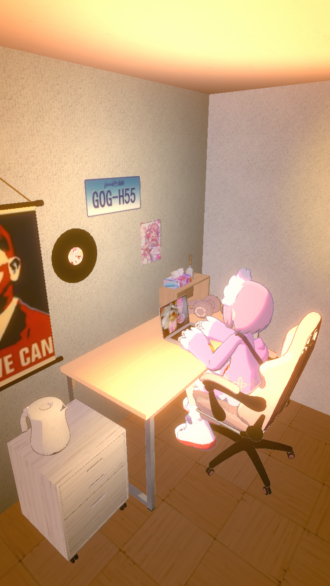
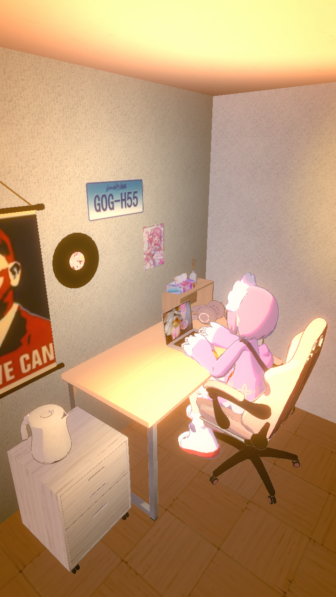

多人（主线…？？
不是吧。
4.人物简述文档
主线：按照事件排序
按照人物及时间排序：包含所有支线主线
特别连载：星野家日常！托马斯/星野/米歇尔三人组的故事。
天使组的相识相恋：
圣学院往事
白人家庭：
tms捡尸记-tms捡尸记/师生
花瓶般的女人<改>
白人家庭无顺序片段：
零散涟漪&hsn：
其他：
仅按照时间排序：包含所有支线主线
现在时间：青河新历2460年。
：2301～2305
车里矢于2281出生，车尔矢2287出生
2296姐弟家中变故
2304车尔矢离家出走，走失
：2306～2310
车尔矢努力摆脱阴影同时继续追寻医学梦想。
星野出生与活着
米在天堂日复一日生活
涟漪爬出地狱，定居人间
：2311～2315
2311无色作为实验体成功降世
2312年杀手兔族被图了，星野进实验所
涟漪在青河城镇闹大（被传为超能力“少女”），选择隐居
：2316～2320
2318星野药物滥用，认知障碍，缺乏对连续性的整合能力
2319星野似了
2319车里矢过劳死，进入天堂后之间纳入医学部
2320星野被拼装完，复活！归入圣学院进修
：2321～2325
2321车尔矢拼装完被归入神使，进入圣学院
刚入圣学院宣誓时，星野不会拿十字架，于是在礼堂用十字架自残，被霸凌
星野在某次发情期被厕所霸凌堵门时，冲进米歇尔办公室，勾引米歇尔做了
圣学院往事（与同届的车尔矢打闹等……
2325星野毕业，车尔矢毕业，被纳入圆桌会
车里矢、车尔矢重聚（车尔矢转单位至发育研究所于圆桌会的合作单位，负责信息跑腿）
：2326～2330
星野在人间建别墅，在人间安定，与涟漪相识
星野表现良好后，在青河政府小组的长期潜伏任务
2327～2330初-星野与银
：2331～2335
2330～2332乱性
2332末乱性时期的审慎
2332～2333中星野回家孩子回家
2333第一个网黄账号，单纯R级与炮友做
星野创建了奇迹税务局，收留流浪“幸运儿”与外族。
2335星野和涟漪的视频爆了。星野沦陷R18-G生活
：2336～2340
2339末～ 终末旅行
：2341～2345
～2342初～终末旅行
：2346～2435
2336～2426任务收尸塞克斯
2435.6.15 托马斯宝宝出生啦宝宝出生啦
：2456～2460
2451托马斯当上魔法少女
2452托马斯离家出走，给乐队打工
：2456～2460
2454托马斯似了。历经复活入住奇迹税务局
tms捡尸记-tms捡尸记（这次过后星野彻底没收任何尖锐物）
某年春节：花瓶般的女人<改>
2457星野开始邀请托马斯加入茶会
托马斯偶尔会去星野家。
2459托马斯星野涟漪夏日度假
多重宇宙.jpg：
tms捡尸记-tmshsn师生

随机post。

🛳️聪明的谈话与混沌的思绪
*动机与前提：朋友想看原耽文，结果我最后觉得可以在小头控制大头中插入人物性格补充和一堆废话于是自己写了一个
*性转涟漪（然而和不性转没什么区别）大草星野，然而草的部分没怎么写。不好意思！
*前情提要：某次任务星野在主城区长期潜伏踩点，使用年卡（虚拟身份）长住任务地点附近酒店，下楼去便利店买东西（可能是抑制剂或者安眠药或者计生用品之类的东西）时遇到了涟漪，他高调地顶着两个恶魔角在超市里晃悠和搭讪，因为搭讪技巧了得，头上的角被忽略了（被认为是cosplay）；星野本来想快点买好东西走人，结果涟漪发现他了，和他打招呼还一直要缠着他。星野担心高调就赶紧拎着涟漪向酒店的后门和隐蔽电梯走去。在一夜情之后星野如常执行任务，回酒店时被滞留在房间内的涟漪抓入浴缸，并且被以“我按照你的要求不高调而且还没出酒店门”的缘由要求打炮，星野半推半就，两人逐渐行至淋浴房。
浴室雾气未散，星野的身体刚被冲洗干净，肌肤像擦亮后的骨瓷一般透明泛白。涟漪没有抽出，粗长的分叉还嵌在星野体内，维持着一种黏腻的粘连。热水洗过之后的皮肤和体温交错，他的后腰湿热，前胸贴在镜前喘息，肩胛与背部因力竭而微微发抖。
涟漪动作出奇地轻，低头替星野擦去后颈的水珠，湿润的绷带宝材还缠在星野小臂与小腿上，布料一沾水便愈发透明，勾勒出骨节与骨骼，配合着关键泛红的死白躯体犹如一句干瘦的尸体，唯独那块常年锻炼出的臀肉还带点淡淡的粉色，因为刚才的折腾微微泛红，涟漪望着这幅不健康的场景啧了一声，撇开眼去伸手擦拭星野的躯体：“别乱动，我来就好……”
他的声音难得温和，带着刚刚高潮后残余的粗喘。他帮星野拉起宽大的白衬衫，袖口搁在星野肩头，湿漉漉的头发贴着锁骨。每给他扣一个扣子，那根还插在体内的分叉便恶劣地在最深处晃动一下，让星野打了数次激灵。
星野只是缓慢地呼吸，没有吭声。睫毛被水雾打湿，垂在泛红的眼角下。他的手颤抖着保持抓握衣角的状态，努力不让自己因为饱胀而在涟漪面前溢出些什么。涟漪把他横抱起来时，星野的腿在空中悬着，还连着体内那根火烫的分叉，身体因重心不稳下意识地夹紧，只收获一阵难以收紧的反馈。
“靠……等等……”星野低声抗议，嗓音带着疲惫、警觉还有点泄气——明明不想表现出失控，却又不得不被牵引着，涟漪只是一声不吭地继续搬动着他，极端的体型差形成了些微妙的有趣。涟漪抱着星野，后者的骨架瘦得惊人，只是臀部软得不合常理，仿佛让这幅干尸身躯贴上了桃色的软棉布。涟漪下腹贴着他，大腿每动一下都能让体内的分叉与骨盆摩擦，传来微弱的、不可忽视的战栗感。
套房客厅的沙发早被空调吹凉，星野一被放下，背脊就被冷意激得一阵细颤。涟漪没有让他真正离开怀抱，只是让星野坐在自己腿上，两人仍旧连结着。他用小臂圈住星野的胸口，身体前倾，将对方整个裹进自己怀里，后颈贴着自己的下巴，星野的体温这时热得不正常，薄汗又渗了出来，衬衫沾在背上，渗出一点点细微的湿印，每当他微微挣动，体内的连接点都不动声色地“提醒”他两人尚未分离。涟漪明白这样的星野为何而流汗——他不时在星野的耳后呼出温热的气息，带着满足和一点难以名状的得意。
他没有立刻说话，只是用手掌抚上星野的肋骨、锁骨与乳环，像是在确认某种专属的所有权；手指掠过金属的冷硬与皮肤的热度，微微施力时不时夹一下柔软的乳肉，把星野的呼吸带得时紧时松。
星野的躯体紧缩，连带着防御性地收住气息、不适与酸软，却始终躲不过那种被攻入、与败下阵来的实感。他的双颊泛红至耳廓到脖颈都是潮热，隐忍中又带着份微妙的渴求。
涟漪终于在这沸腾冒泡的安静中笑了起来，若有所思地压着声线贴在星野的锁骨边缘说：现在这样……嗯，真好～我等这一刻等了很久。你真是很奇怪——我认识你这么长时间了，发现你在床上和床上以外的地方完全不是一个人。你总是充满秩序地完成工作，即使你在工作里做的那些事~嗯，即使你做了许多那些事情，但是我总觉得你在做这件事的之前和之后都完全明白自己做了什么。你很清楚自己是一个怎样的人吧？哈哈……嗯，某种意义上你真是一个把自己扮演得很色、爱引诱别人和你上床的人。
星野听到这里不耐烦地挣扎，结果每一次挣扎都被笑得发出鼻音的涟漪控制住，将腰臀更紧密地贴到涟漪的皮肤上。涟漪察觉到星野热得比平时更惊人的体温和薄薄的汗，眯起了眼睛。他突然将星野的上身按入沙发中，将星野的臀部高高抬起，使他双腿大张地跪着支在沙发上，星野除了几声迷糊的呻吟别无反应。涟漪开始缓慢地推送、抽出，鉴赏着眼前的高温、白色肉体、模糊不清的张开形状，他笑出声来——每一声比起讽刺更像是恼火地自嘲。他随意地掐着星野的腰，忽然加快了一点抽送频率，把对方撞得前腹都贴上沙发沿，继续用责难般的语气发问：
“你觉得很爽对吧？你肯定是很爽的，我明白这些……嗯，操，你怎么做到一直这么能夹的，……有点疼，操！”
星野只是发出低低的呻吟，指节死死扣着沙发边缘，每一次抽送都在颤抖地迎合，望着无声的星野，涟漪换了口气才恢复方才的状态，继续缓慢地发言：
你不想我说话对吗？这样的你只想爽！只顾着自己爽只顾着让自己被填满，是你引诱自己做这样的行为、引诱我陪你满足你的爱好，所以根本不是我在操你啊，一点快乐都没有。你在床上的时候:……啊……操，你乐于孜孜不倦地在床上表演这样的一个角色，这时的你与工作时的你完全不是同一个人，让我不经意间被吸入那个床上的你那里，这种反差真特么吸引变态啊。让我来担任这个变态你很开心吗？你希望哪个自己被满足？还是只是上床挨操时被满足？
哈……嗯……伴随着加快的抽送，星野的急促喘息终于漏出了声。涟漪话音刚落是就见到沉溺快感中的星野在颤抖中奋力摇了摇头。
什么意思呢？涟漪心想，星野到底在否认什么？是在说：我不开心，还是在说：“我不希望被满足”？困惑之中，涟漪对星野的无言拒绝（无论是在拒绝什么）感到愤怒。突然，一个坏点子浮现在脑海。
涟漪忽然猛地加快节奏，沙发几乎跟着撞击的频率一起晃动；星野被一次次贯通地重心不稳，像是要脱离沙发飞起来似的，身体完全由快感与连接处的运动主导，由于闷在沙发中的缺氧，整个头部皮肤都泛起红色，前段也硬得吓人，开始细微地抽动，星野浑身紧绷。
涟漪突然抽出了星野体内的分叉，不顾星野的诧异，开始扶着星野的臀部用湿漉漉的阳具在洞穴边打着圈蹭。星野的后穴仍处在离快感顶峰前一厘米海拔的高亢状态快速张阖着，伴随每次蹭到穴口的行为一阵抽搐，而涟漪又不进去，于是星野的臀部抗议似地逐步向那粗柱贴，致使星野的臀部越抬越高，但涟漪仍旧懒洋洋地保持着这样的节奏。终于星野忍不住了，压着嗓音责怪：“你在干嘛？呼……倒是快进来，有病吗？”
涟漪一副得逞的笑容，将固定在腰上的双手扒在臀部，胡乱扒开星野的湿洞，像似正要把星野看透似的，时不时伸入手指挑逗，但就是控制在高潮未满的状态。星野被摁得连连发出细碎的叫唤，如软泥鳅在泥沼里发出模糊的声音：“嗯……求你了……………………啊、要哭了，求你了……嗯呃……进来吧……”这声哀求比任何动作都更直接，令人发硬…持续的请求中，涟漪终于开口：“我看不明白，也不明白你这人到底是有病还是什么的，你有病别波及到我头上好不？我都这么乖这么配合地满足你了不知道多少次，让你也爽了不知道多少次，我不想就满足你那种变态的被填满欲望，谁能塞得满你的黑洞大屁眼？！我想要你也能满足我这个变态、满足我这根’星野的性玩具‘～”
涟漪伸入两根手指揉着星野的软肉打圈，星野被刺激得一顿哼哼：“好……求你……啊，求你……嗯，”，内壁拼尽全力包裹着涟漪的手指，却因之前的扩张无法完成包裹，涟漪能够感受到星野的焦急，出言顺水推舟，一字一顿：“所以，哪有人还会推开自己的性 玩 具？很难受吗～？哈哈，那是当然的，我也因为一次一次被推开难受得不得了。如果你答应配合我、不再推开我、不再让我在你的性癖中扮演什么东西，我就立马满足你。我可是活的，我的这根东西也是有小生命的……”他压低了声音，“我也想让你生出小～生～命～（这样的气概会在一场做爱里获得成就般的满足吗？）……这些你都要满足我，要覆写你的病态癖好对我造成不满的累积、空虚感来源的创伤……嗯，怎么样，很划算的。”涟漪注视着星野扭动的腰肢和臀肉，如所想的那样仅在一秒内就获得了同意，于是他不顾一切地将早已准备好的前端分叉粗根整根推入星野之内。
一瞬间所有停滞的快感、折磨、空虚与屈辱一齐涌上。分叉的前端无情地分开早已肿胀敏感的内壁，极致的充盈与被撑开的感受像电流一样沿着脊髓窜过全身。星野整个身体仿佛被这股力量彻底击穿，膝盖险些软倒，指节死死抓紧沙发边缘，发出一声混杂着喘息与呜咽的低叫。涟漪嘴角带着恶作剧得逞的微笑，将额头紧贴着星野后背，稳定而狠厉地前后顶胯，每一次挺入都像要将人从里到外彻底掏空，分叉的根部在每一次冲入时像是要冲开一扇深处的门一样令星野在这番闯入中几近窒息。
师生IF
tmsXhsn 不存在abo的普通世界观。
师生梗
Hansson.Stjärna-某小神使-177
瑞典人，但是长相颇有点femboy的味道，也确实是南通（学校里没几个人知道），但本人其实不太喜欢被女性化。职称是教授，今年27，头发很浅眼睛灰蓝的不太白男的白男。
简历上总是写着“曾任职于某科技公司xx研发组”（其实只是为了留校做的研究项目），因此常常被人认为是从科技公司呆不下去、不懂人情世故只知道呆在象牙塔里教大学生的天才型废柴（其实一开始就是想要留校）。由于整天穿呢料风衣和西欧服装史里会出现的那种服装，又长的很像DK，所以被迫和学生们打成一片，据本人所说其实不太喜欢和学生太亲近。
（）
有传闻说，hansson以前是英国贵族，不知道为什么润北欧去了（然而他又考回英国来了）。不过虽然hansson总被描述成一个保守老套的人，他也是一个野心勃勃的年轻人，在带项目方面异常看重能力，有些苛刻，总是只在关键点才提出指导意见，所以说话方式就可以滤掉一大波人。
Thomas-还是那个tms-168
不是很白女的美国人（亚裔、德裔混血），一般路过的大学生，从美国研究性高中考来了英国，除了对学习的憧憬和幻想以外都很普通。
染了粉色头发的美少女，今年20岁，正在为是否成为graduate犯愁，因为各种原因和hsn混熟了，所以也总是仗着关系在hsn的课上刁难他，不过结局往往是自己被反驳的话刁难到了。喜欢anime，每天都穿日本的流行服饰，比如量产系，软妹原宿风格等等，有时还会传非常池面类型的自拍和建政（总是在当和事佬，积极肯定自我和他人）；由于学校盛行的风气是金金金和辱骂现实，因此在学校里没几个人一起玩。
现在在跟着hsn围观项目，立志要发表sci中，加油吧少女哟！
家庭背景
这个世界线里hsn有着正常的家庭，但是父母早年就分居了，hsn跟着妈妈生活，在进入初高中学习后，hsn选择在外住宿，非常少回家，所以hsn习惯独立地生活。hsn上的高中是需要考核进入的实验高中（以科研项目为主，学科成绩为辅），由于hsn的科研能力很不错，所以很受格大学教授的青睐，本人对于这点比较满意，然而由于学科成绩不够出众，han仍旧有些自闭，在学校时而沉默寡言（甚至有些毒舌）而时而对信任的人又太过有刻意的热情和讨好，所以和同龄人的交往不多。在众大咖的小团体里被称为“瘦弱的白人男孩（slim white femboy）”，自高中时对女性就有些阳痿，从此有了南通倾向，在独居的时候和一个生物学教授和一个是外科医生做过，企图谈恋爱但是没谈起来。大学后hsn更少地与父母联系了，通过打临时工和在实验室打杂（以及极低频率地上传自己的色情影片，有时是和当时的男朋友一起上传的，有些是自慰的影片，没什么人气但是总有一些人会给钱）来获得生活费用，但是父母也会要求他收下己方寄出的生活费，虽然hsn有时会在游戏和无用的图书（及性玩具）方面过度消费，但是仍旧攒下了很大一笔钱，甚至够得上SRS的手术费了。因此，父亲很担心他成为trans，但是hsn是明确的男同性恋，所以为了自证hsn去打铁健身过，上臂力量比较发达，体脂率不是特别高；hsn具有一定的使用冷兵器的技能，迅捷有一定爆发力，但是耐力因为体型原因（重量级低，能量太少）比较差。
高中/大学时，hsn的同学这么评价hsn：
女同学：hsn是一个很有事业心的人，感觉像个科研大佬，我很乐意和他合作。他总是很干净整洁，总是保持一个好形象，我很喜欢他的衣品；虽然他有时会有些不清醒嗜睡，但是他清醒的时候逻辑严谨，总是为我们做好很多计划。他总是不参与我们的八卦讨论，感觉他是那种不太喜欢和人扯上关系的人。。
男同学：hsn，感觉总是很负责，是一个挺厉害的人，和他合作很高兴。他的举止总是很得体，所以喜欢（不是爱恋的喜欢）他的人非常多，但是他总是一副生人勿近的样子，很多人即使喜欢也退缩了，而且感觉他总是避免和男同事们接触，勾肩搭背他就十分紧张，不会是有点恐同吧？
老师……你在床上的表现比课上好多了哦……
托马斯将星野压在办公室的沙发上，平日里一丝不苟的衬衫此刻凌乱地敞开着，露出精致的锁骨和白皙的胸膛。星野眼神迷离，带着情欲和一丝不易察觉的恐惧，他知道接下来会发生什么。
“老师……你在床上的表现比课上好多了哦……”托马斯的声音带着一丝戏谑，她一边说着，一边熟练地解开星野的皮带。
星野没有说话，只是紧紧地咬住嘴唇，他知道自己无法反抗，只能任由托马斯摆布。
托马斯褪下星野的裤子，露出他修长而苍白的双腿。她从一旁的背包里拿出一个用黑色丝绒包裹着的东西，缓缓地打开，露出了里面的真面目——那是一个设计精巧的可穿戴假阳具，材质光滑而富有弹性，在灯光下泛着诱人的光泽。
托马斯将可穿戴假阳具固定在自己身上，然后跨坐在星野的腰上。她对准星野的后穴，轻轻地将假阳具的顶端抵了上去。
“唔……”星野发出一声压抑的呻吟，身体弓成了一张满月。他能感受到那根火热的异物正在一点点地侵入他的身体，撕裂着他最后的防线。一种难以言喻的快感瞬间涌上他的全身，让他几乎无法呼吸。
后穴处，可穿戴假阳具开始了疯狂的活塞运动。每一次抽插都带着一种令人窒息的快感，又像是要把星野的灵魂都抽离出来。润滑液混合着不知名的液体，在两人结合处发出令人面红耳赤的“噗嗤噗嗤”声，淫荡至极。托马斯也感受到了前阴传来的阵阵快感，她忍不住发出满足的呻吟。
“啊……嗯……”星野再也无法抑制，喉咙里溢出断断续续的呻吟，从最初的压抑，到后来的放纵，每一个音节都充满了情欲和痛苦。他的身体像一片风中飘摇的落叶，随着托马斯的动作而颤抖，完全失去了控制。
托马斯的目光始终锁定在星野的脸上，贪婪地捕捉着他每一个细微的表情变化。他痛苦地扭曲着脸，眉头紧锁，额头上布满了细密的汗珠，但嘴角却又忍不住微微上扬，露出一种既痛苦又快乐的表情。
随着抽插的频率越来越快，星野的身体也开始剧烈地颤抖起来。他感到一股热流从小腹涌出，不受控制地喷洒在沙发上，那是高潮带来的失禁。他的意识渐渐模糊，眼前一片空白，只能听到耳边传来令人羞耻的水声和自己粗重的喘息。
“啊……哈啊……不要……不要了……”他用尽最后的力气哀求着，声音嘶哑而无力，像是溺水之人最后的呼救。
托马斯却充耳不闻，她享受着星野在自己身下挣扎的模样，享受着这种掌控一切的快感。她知道，星野已经到达了极限，但他越是痛苦，她就越是兴奋。
“老师……你真是太棒了……”托马斯一边抽插，一边在星野的耳边低语，她的声音充满了情欲和嘲讽。
终于，在又一次猛烈的抽插之后，星野的身体彻底瘫软下来，像一滩烂泥一样，失去了所有的力气。他大口地喘息着，胸膛剧烈地起伏着，仿佛要将肺里的空气全部抽干。他的眼睛紧紧地闭着，脸上布满了泪水和汗水，看起来狼狈不堪。
“唔……啊……哈啊……托马斯……嗯……还想，还想……”星野语无伦次地说着胡话，身体还在不停地痉挛。
托马斯看着眼前这幅景象，心中涌起一种病态的快感。她知道，自己已经彻底征服了星野，将他变成了自己的玩物。
她停下动作，从星野的身上下来，然后开始整理自己的衣物。她看着躺在沙发上奄奄一息的星野，心中没有感到一丝怜悯，反而涌起一种满足感。
“老师……下次再见……”托马斯轻声说道，然后转身离开了办公室。
人棍IF
屋里点了香，带草本气味的熏香，混着一丝消毒水与肉体的气味。
星野被摆在地板上，毛巾垫住后背，下体向上翘起，由于没有四肢，只能靠柔软的毯子与被卷成环状的布垫支撑起身体。他的腰被一圈布带缠住，锁死在一张低矮木桌上，脖子前是一盆温水，涟漪替他擦脸。
“今天是纪念日哦，小泪人。”她笑着，俯身亲了他一口，“今天，你要彻底成为我的东西了。”
星野不语。他嘴里没有塞口球，只有一根布条压在舌根，让他说不清话。他喉咙里有一丝丝干哑，却还是试图发出声音：“呃……别……”
涟漪俯下身，嘴唇贴着他后颈，舌头一圈圈舔过脊椎最末端的骨节。
“别什么？”她的语气温柔得像情人间的调情，“你不想我今天草你吗？”
她没有等他回答，一只手熟练地润滑自己的阳具，另一只手撑住星野的大腿残端，把那敞开的后穴——因为长期扩张训练而像花朵般湿润张开的穴口——整个吻上去。
星野发出一声抑制不住的喘息，腰部因为冲击而向上一弹，但身体动不了，反而让那根硬挺的肉棒更深地挤入。
“哈啊……呃、嗯……”他的声音破碎，脸侧压着毯子，口水再次流出来。
涟漪开始律动，先是慢，再逐渐深入，每一下都撞到星野的深处，被灌养过的肉穴湿滑、紧致得像天生就是为了这场侵犯存在的。
星野的呼吸渐渐紊乱。就在这一层层快感推上来的时候，他感到涟漪的一只手，缓缓伸向他的阳具。
“我记得你之前说过，”她轻轻捏了捏，“……你这个不会再用了对吧？”
“呃、不……”星野猛地发出气音，声音破碎得像要崩溃，“别、别动那里……”
“你看看你，”涟漪笑起来，“都被我干成这样了，这里却还硬着，真是好色的小肉棒。”
她两根手指夹住星野勃起的阴茎，指甲贴着根部皮肤，一点点往下滑。
星野挣扎着想扭头，可颈部也被束缚住，他只能感到后穴仍被操着，前面却被凉凉的东西贴上了。
金属的反光划过眼角——剪刀。
“你再不射，我可要剪了哦。”
“哈、啊……我不行……呃——不要……”
“那你现在射给我看呀，小泪人。”
她说完，猛地挺了一下腰，阳具撞进星野的穴底，顶住内壁最敏感的位置。
星野“啊”地一声叫出来，整个人颤了。他的阳具随着高潮猛地跳动了一下，果然射了出来——在涟漪的手里，精液喷了两三下，全打在她的手掌上。
他喘得像濒死，脸颊贴着毛巾，湿得一塌糊涂。涟漪舔了舔自己的手指，笑意极甜。
“好啦，那我们可以剪了。”
“什——？”星野刚喘过一口气，话还没说完。
下一秒，剪刀“咔哒”一声。
涟漪一边操着他，一边用熟练而迅速的手法，从根部偏上一点的位置将阳具剪断。
那一瞬间，剧痛如电。星野的身体抽搐，喉咙里发出一声短促的尖叫，接着直接晕了过去。
鲜血从断口涌出，涟漪早有准备，立刻按上纱布和止血胶体，把那块已无功能的肉体抛入一旁的不锈钢托盘。
“剪得真整齐呢。”她满意地看着。
而星野，在失去阳具后的第一场高潮与昏厥中，终于真正被剥夺了“主动表达情欲”的权利。
剩下的，只有涟漪的灌入、操纵、亲吻与耳语。
“接下来，只能用后面啦，泪人。”
“不过你最喜欢这个地方，不是吗？”
她捧着星野半昏过去的脸，亲了亲他还带着泪的睫毛，“好好睡一觉，等你醒了，我再来塞点新的东西进去。”
✝️三—灌蛇卵play
🦑
3.6
四
屋子里总是湿漉漉的，日头也好，阴雨也罢，星野的身体总是像块带温度的软湿抹布，趴在地板上，哪怕没人在，他也会本能地用残躯在每一块木板上慢慢地蹭，慢慢地转。腹部因为长期摩擦变得光滑，尾骨部位已经磨得发红。每次蹭到墙角或桌腿，肛塞就会被挤得更深，肠道最深处像被小蛇尾巴尖轻点，里面残留的卵液和体液在那种压力下一点点渗出来，沾湿地板，像是谁特意留下的标记。
有时候他会爬着，找到屋里最凉的地方，把身体弯成一团，屁股高高翘起，下意识地夹着肛塞左右扭动，穴口肌肉一收一紧，刺激着里面残留的神经。他也分不清这到底是想让东西更深，还是只是单纯享受摩擦感带来的麻痹。他会轻声呜咽，像一只小动物被捉弄时发出的无助呻吟——可是这种呻吟，不带求救，只有单纯的生理渴望和空洞的黏腻满足。
当屋里飘进风，有芦苇味，他会本能地嗅一嗅，觉得主人是不是要回来了。有几次，他实在太想被操，甚至用自己身体缓慢地挤压地上的破旧枕头，把肛塞死死地顶在缝隙里，后穴挤压到发麻，才算稍微安分一点。
有时他会舔地板上的湿痕，把地上的液体一滴一滴用舌头卷进嘴里，然后“咕噜噜”吞下去，脸上全无表情，偶尔嘴角还会流口水。他也不觉得恶心，只觉得这样能填补身体的某种缺口。偶尔小蛇在地板边缘爬过，他会用头顶着它们回洞，嘴里发出含糊不清的“呜呜”，仿佛在替主人看家。
如果太久没人回来，星野会在屋里缓慢地转圈，动作迟钝又黏滞，像旧机械快要锈死的轴承。他会边爬边低声呜咽，偶尔用牙齿咬着枕头或毛巾，拼命把屁股高高撅起，后穴肌肉痉挛，肛塞像被什么东西顶开，里面隐约会有黏稠液体顺着锁口慢慢渗出。他会边抖边喘，像极了等待喂食的动物，舌尖舔着空中不存在的什么东西，眼睛却是空的，像玻璃珠子泡在温水里。
等到涟漪终于回家，他总能在第一时间闻到那股熟悉的气味。然后他会疯狂地爬向门口，残躯蠕动带起地板湿痕，后穴自动收紧，肛塞更深地嵌进洞里。他发出断断续续的“嗯、呜、啊……”声，像是在讨好，也像在乞求。“主……主、主……要……”舌头卷在口球后面，发音全混着口水，流得到处都是。
涟漪进门，有时只是瞥他一眼，他就会立刻趴下，尾椎贴地，屁股高高撅起，后穴抖个不停。她用鞭柄轻点一下，他立刻本能地张开洞口，肛塞外翻，腔道深处的肉褶全都展露出来，湿热的体液甚至顺着锁带滑到地板上。他已经不会觉得羞耻，只觉得“这样才舒服”，才有归属感。
如果涟漪愿意，他会被拖回屋子中央，头埋进毛毯，后穴被抽掉肛塞，然后直接被干到昏过去；如果没人理他，他也会一遍遍重复蹭墙蹭桌腿，直到体内残余的快感被消耗干净。
此时的星野，脑子里已经没有想法，只有最本能的渴望和满足。他舔着地板、咬着口球，喘息着等待涟漪的新命令，嘴里偶尔还能蹦出几个毫无意义的词：“主……主、干……啊、要……”像小动物撒娇，却再也不是过去的星野了。
他不懂孤独，也不懂羞耻，
他只知道自己是主人的东西，生来就是为“塞东西”“被操”“帮忙清理”“撒娇”等待而存在。
屋子永远湿热，空气里一直都有肉味和湖味，还有属于主人的气息。他只要趴在地上，肛塞顶紧，嘴里发出黏糊糊的声音，就能安心下来，哪怕一整天都没人碰他，身体也会自己慢慢动起来。
这就是他了，主人不在时的样子，一块乖巧、会喘息、湿润又安静的肉。
只有涟漪才能决定他接下来的一切。
湖心岛上没有时钟，只有长年累月不退的水汽，把木屋晕染成灰蒙蒙的世界。星野无法记住具体是哪一天他彻底地失去了抵抗的念头，或许是某个黄昏，也可能是某个潮湿的清晨——但那都不重要了。他早已失去了四肢，身体只剩一截孤零零的躯干，躺在涟漪铺着厚毛毯的地板上，一具永远温热、永远湿润的容器，被涟漪反复地填满，又掏空，再填满，再掏空，重复得失去一切意义。
最初，他还会在蛇卵被灌进来的瞬间因为羞耻和疼痛本能地挣扎一下，发出几句含糊的抗议，咬着嘴里的布条，用混杂口水的声音发出可怜的呜咽。但渐渐地，随着涟漪每一次插入时那根分叉的蛇状阳具精准而残忍地旋转，把滚烫的卵推入肠道最深处，他的抗拒逐渐变成了纯粹的生理抽搐与更加失控的迎合。
“呃、哈啊……不、别再塞了……要破了……”星野喘息着，声音微弱、湿润而颤抖，却根本无法阻止涟漪的动作。涟漪像没听见一样，轻轻舔了舔他潮湿的耳根，手指顺着他腰间的束缚带慢慢滑到臀缝里，将那个不断被撑开的后穴再一次打开。星野咬紧牙关，身体在瞬间剧烈颤抖了一下，却已经完全无法拒绝地再次张开穴口，接受了下一枚灼热的卵的侵入。
日复一日，这种仪式般的灌注与孵化变成了他唯一的日常。他的肠道因为长久的扩张与使用，逐渐适应了这些属于涟漪体内的卵和幼蛇，甚至逐渐学会了主动地收紧、挤压、催促着这些东西在自己身体里加速孵化。
每当他感受到体内有幼蛇破壳而出，那种滑腻、尖锐又温热的触感在肠道壁轻柔地游动、爬行，他就会短暂地清醒一下，发出一两声轻轻的呻吟，那声音里充满了既迷恋又排斥的矛盾，喉咙里咕哝着连自己都听不清的哀求或呢喃，然而很快又被更猛烈的快感吞没。
涟漪总是会在这时凑过来，带着一点病态的宠溺，轻轻捏着他的下巴，欣赏着他面颊上混杂着泪与汗的脆弱表情，低声在他耳边问：
“已经习惯了吧，小泪人？你现在可是我唯一的苗床呢。”
星野最开始还会抗拒地扭头，但后来也只是轻轻发颤，唇齿之间溢出细碎的呻吟，带着泪光睁着无神的异色双眼，默默地望着涟漪的脸，嘴角颤动着、湿漉漉地吐出几个含糊的音节：“主……主人……再给我……”
他不知道这句话到底是求饶还是索求，只是它自然而然地从他的嘴里滑出，再也无法收回。
渐渐地，他失去了语言，失去了逻辑，也彻底失去了羞耻。他的生活缩小成了极致简单的几个动作：吞入、孵化、释放、再吞入。他甚至开始喜欢那些幼蛇从他体内爬出、绕过束缚带与绷带，在皮肤表面细细地滑动，那种冰凉的温热感，每每都会带来一种病态又迷人的高潮。
某个夜晚，涟漪再次抱着他，蛇状的阳具缓缓地进入他体内，在最深处分叉、张开，将他已经红肿不堪的肠壁再一次撑到极限。星野几乎感觉到自己的内脏都在被分裂开来，却没有一点抗拒的意愿了。相反地，他迷茫又欢愉地抬起下颚，主动用舌尖舔了舔涟漪的唇角，那姿态温顺又堕落，仿佛乞求宠爱的动物。
涟漪轻轻地笑了，手指轻柔地拨开他脸侧的发丝，用温柔得近乎诡异的语调在他耳边呢喃：“终于乖了呢，小泪人。你以后就是只属于我的巢了，对吧？”
星野听着她的话，眼神完全失焦，却温顺地轻轻点头，甚至主动用仅剩的躯干迎合着涟漪的插入。涟漪的阳具再一次在他体内张开，将卵挤入肠道最深处，他身体的每一个角落都在呼喊着被填满的喜悦。那一刻，他终于彻底放弃了曾经苦苦守护的理智与尊严，彻底堕入了无边的欲望与羞耻之中。
在接下来漫长的日子里，他开始习惯用残躯在地上慢慢爬动，舔去地板上的湿润痕迹，用身体去清理那些自己孵化出来的小蛇留下的粘液和碎屑。每当涟漪回到木屋，他就会用自己脆弱而扭曲的姿态迎接她，舌尖颤抖着轻轻舔过她的脚踝，哑着嗓子低低地喊着：“主人……欢迎回来……主人……”
他再也不记得自己是谁，也再也不关心自己过去是什么样的人了。现在，他的整个世界只有涟漪、只有那无止境的填满与被填满的轮回。他失去了作为神使的记忆，失去了作为人的一切尊严与骄傲，现在的他，唯一还能理解的，就是自己属于涟漪。
从此刻开始，星野彻底成为了涟漪的性奴——一只心甘情愿、自我崩坏的苗床，在潮湿的湖心岛木屋里，以最堕落的姿态，永远地等待着下一次的灌注。
星野的腹部还在一抽一抽地颤，像一张残破的鼓皮。
后穴完全闭不上，灌入的蛇卵安稳地卡在肠道深处，仿佛被某种本能性的肌肉记忆“温柔地抱着”。
他软在地上，连呻吟都发不出来，只能发出小动物般的气音：“呃……呃啊……”
涟漪却没有给他缓冲的机会。她翻过他，把那完全松弛张开的后穴再次拉开，用手指拨了拨里面蠕动的卵球，然后——拿起那枚黑色的、金属质地的肛塞。
“你会弄丢我种进去的东西吗？”
星野听懂了，却摇不了头。他的嘴唇哆嗦着，睫毛颤得厉害。
“那我帮你记住。”她把肛塞对准后穴轻轻一推，果然顺利滑入，像钉住一颗果冻。
咔哒一声，是锁扣。
“锁好了。”涟漪笑着，动作很快地从星野腰下绕过去，扣上束缚带。
两侧金属扣卡在脊椎旁的凹陷处，带着冰凉的触感；束缚带的中心是一个嵌入式锁芯，刚好卡在肛塞根部，让人无法自行取出。
星野的身体微微颤着，穴口传来又涨又热的钝痛。
“舒服吗？”她问，“里面是不是还在动？你听不听得见它们在挪？”
星野嘴唇轻动了一下，想说“没有”，但那句反驳没能发出来。
因为他真的能感觉到。
体内的卵似乎有生命似的微微蠕动，带着一种诡异的温热，像是——不知什么时候，它们会孵化。
“现在啊，”涟漪亲了亲他肿胀的耳尖，“我再干你一次，不是为了操你，是为了帮你‘把卵压实’。”
她的阳具没再带假体，而是变回原形——带倒钩的、根部粗大、末端微带膨胀的恶魔阳具。
星野看到那形状时瞳孔一震：“不、不、涟漪……不行、呜、里面会……”
“你会喜欢的。”涟漪掀开他的腰，像对待一件熟悉的乐器那样，把他调整到最方便进入的位置——平躺、臀部略抬高，锁带卡在大腿残端上，逼迫他只能顺从展开。
然后，她进入了他。
肛塞是中空的结构，能直接被贯穿——在那“咔哒”贯通的瞬间，星野的身体直接炸出一层生理冷汗。
“呃啊——哈啊……不、不、太……太满了……”
“我才刚进来一半呢。”涟漪俯下身，舔着他湿红的唇角。
每一下顶入，都会将那些被灌进去的卵“挤压”到更深处，而星野的后穴就像天生具备“适应性”那样，不仅没有抗拒，反而在肌肉抽搐中开始“迎合”那根恶魔阳具。
他喘得像淹水的野兽，身体被绑着，动不了，只能全身上下都以“穴”来感受涟漪的爱抚与侵犯。
“你再高潮一次，就把这些卵抱住了。懂吗？”
“呃……呃啊……我不……呃啊啊啊啊——”
果然，在涟漪压入最深的那一下，星野的腹部微微膨起一小块，那是被顶动的卵团位置。
紧接着，他在没有任何触碰的情况下，第三次高潮了。
后穴猛烈收缩、锁带勒紧、体液从两腿残端滴下，连肛塞边缘都溢出一圈浆液。
他再一次彻底崩溃，意识一片苍白。
“乖……”涟漪用舌头舔干他下巴的液体，低声说，“你在慢慢学会新生活了。”
她没有拔出，只是继续在他体内缓慢律动，像是在“催熟”每一颗卵。
星野的身体不再挣扎，连呻吟都轻得像梦呓，只剩后穴一缩一缩地配合着侵入，像是本能。
像是他真的变成了某种寄主。
某种，被彻底驯化的人类容器。
3.5肛塞
星野的身体已经在那根假阳具的冲撞下高潮了一次。没有阳具的高潮来得混沌、像是纯粹的“器官呕吐”——
来自最深层的收缩、黏液、以及羞耻。
但涟漪没有停。
她亲了亲星野流泪的脸颊，语气轻得几乎像在念诗：
“那我们现在……来喂养一下你吧。”
星野还没反应过来，只感觉身后的假阳具被轻轻抽出，伴随着后穴抽搐，体液“啵”地黏出一圈。他本能地夹紧了点，却完全控制不住。
涟漪将什么东西按在了他后穴口，一圈冰凉、带鳞片感的圆球。
“别怕，”她低声，“只是点……卵。”
她的指甲卡着那颗卵的后部，缓缓塞进去——
星野的后穴先是轻微收缩，但那卵不大，表面又滑，没几秒就“噗”地被吸进去，留下一道带黏液的痕。
星野的身体僵住。
那颗卵进去了，在肠道前端停着。他能感受到它在动，微微的振动，就像某种活物在适应体温。
“呜……呃……你、你放了什……”他想说话，却只能发出破碎的抗议。
涟漪没理，拿起第二颗，又是相同的动作：“你知道我家蛇蛋一年能产几十颗吗？现在，这些都归你了。”
她像在种植什么神圣庄稼那样，一颗颗往他体内推。每一颗滑进去的瞬间，他的后穴都不由自主地吸紧，却又因为高潮后的柔软而毫无抵抗力。
“哈……哈……够了……不……呃、呃啊——”星野终于叫了出来。
涟漪俯下身亲他：“你喊得好动听。我以前养的小蛇们……听你叫声都爬出来了。”
“你要变成巢了呢，小泪人。”
星野的体温开始升高，腹部微微鼓起，穴口因为连续扩张已经完全闭不住，最后一颗卵滑入时，他的身体猛然一抽。
那一瞬间——
他再次高潮了。
什么都没有碰他，连涟漪都只是抱着他的脸，但他还是喷涌般地达到了第二次顶点。
后穴剧烈收缩，卵在体内略微震动。他像是被自己体内的异物感逼出快感一样，背部弓起，喉咙里发出带泣音的哀鸣。
“呃、哈、啊、呃啊——啊啊啊……”
他全身都在颤抖，脸上是混着泪与涎的极度羞耻。
涟漪抱着他轻声哄道：
“乖，好孩子。这就是你以后高潮的方式了。靠我，靠这些卵。”
她手贴在星野的腹部，轻轻拍着那略微鼓起的位置，像在哄一只怀孕的小兽。
“你肚子里，现在全是我的东西。”
星野已经说不出话了，脸侧湿透，嘴唇微张，只能微微喘息，像被爱欲灌满又彻底沦陷的生物。
他的后穴还在一缩一缩地抽动着，像在习惯那被撑开的空洞中，留住所有的卵。
他被喂养、被填满、被高潮，最重要的是：
——他还在活着。
二-边操边剪阳具
*TW-本段含羞耻、极限身体控制、常识改变
地板是冰的，潮湿、带点泥土的气味。星野醒来时，第一感知不是疼——而是空。
四肢的“存在感”消失了，像是醒在一场没有重量的梦中。身体像被折成了一个诡异的形状，从颈部往下只剩不稳的躯干与头，肩膀处传来麻木的黏稠感，像浸在冰水中，又像被啃过。
他想动，却发现连颤抖的资格都被剥夺了。只有喉咙能动，舌头干得发硬。
嘴巴里咬着什么。
橡胶口球被固定得死死的，涂了草莓味的润滑液，齿根被堵得生疼。星野的下颚因为被撬得太久已经发麻，口水从角落溢出来，落到脖颈，一点点滑入锁骨残余的皮肤褶皱里。
“呜……呃……”他想发出声音，像动物受惊那样轻微地嘶了下。
这时，有脚步声踩进来，拖鞋踩在地板上的声音极慢、极软，带着不容忽视的悠闲。
“啊呀，小泪人醒啦。”
涟漪弯腰，蹲下来看他，笑得灿烂，眼底却一点温度都没有，“你睡了……大概两天？你昏过去的时候尿了一次，我给你换了垫子，现在干净的呢。”
星野睫毛颤了一下，瞳孔缩起，脖子稍微想转，却动不了。
涟漪抚摸他的脸，指甲刮过下巴线，像在挑拣某种新鲜的玩具：“知道吗，你醒来这张表情……和我想象的一模一样呢。”
她语气轻快，像在闲聊什么下午茶菜单。
“啊……你在流口水诶。乖，我帮你擦擦。”
她拿一块温毛巾，在星野嘴角细细地擦，动作温柔到近乎滑稽。
星野想咬她，舌头却只能无力地顶在口球后面，发不出有效的抵抗。
“你在想什么呀？”涟漪笑着，凑近他耳边，用一种亲昵到病态的嗓音低语：“是想问‘你到底对我做了什么’？还是……想骂我？”
星野的眼角抽了抽。胸口起伏变得明显。他终于感受到锯断的痛感从神经的盲区反扑回来，像迟到的电火，烫着内脏跳动。
涟漪却突然捏住他的下巴，将他的脸抬起来：“别生气嘛……我可是连你的小鸡鸡都留着呢。”
她笑着，“哦不对，现在不是‘鸡鸡’了。只是一个被我管控的阀门。”
她手伸进星野肚腹下方的毛毯里，毫无羞耻地摸索着，找到了那根阳具——软趴趴的，已被绑带固定在耻骨上，皮肤略发青，带着一点点擦伤的痕迹。
“……不过呢，我不打算让它留太久了。”
她仿佛在说今晚该不该吃煎蛋，轻描淡写地继续道：“毕竟，你现在也不需要它了，对吧？”
星野发出一声闷哼，眼里像是有什么瞬间炸裂。他的脸贴着地砖，胸膛因为愤怒与屈辱而颤得厉害。口水顺着下巴滴成小滩。
“哎呀哎呀，你反应真可爱。”
涟漪忍不住笑出声，声音像踩在玻璃渣子上的铃铛。
她站起身，转身进了厨房。
几分钟后，她带回来一把冰冷的手术剪、一块带血迹的纱布，还有一小支红色的抹布软包。包里是药膏和一条细长的塑胶细针。
星野侧眼看见，眼底的瞳孔骤然收缩。
“放心啦，不会现在剪。”她蹲下来，拿起剪刀比了比星野胯下，“我要等你自己硬起来，再一刀剪断。才有仪式感嘛。”
她低头，轻轻舔了一下星野的前端——那根已经不再完全属于他的性器。
“等你射出来的最后一次精液……我要把它装起来，贴上标签：‘我的小泪人最后的射精’，嘿嘿。”
星野闭上眼，喉咙发出痛苦的气音，脖子青筋绷起，像某种即将断裂的线。
涟漪却温柔地抚摸他那被咬得发红的嘴角，柔声说：“乖，别怕，我会养你一辈子的。你只要待在我身边，就好啦。”
她捏了捏星野的脸，像爱抚一只被拔了爪子的猫。
“你现在……是不是已经开始慢慢习惯了？没有四肢，也没关系对吧？我还会用我的鸡鸡，好好疼你后面。”
“你最喜欢那种……灌得满满的感觉了，对吧？”
她笑了，笑得甜得像毒药。
星野睁开眼，他瞳孔深处没有任何希望，只剩下极细微、冷静到可怖的——思考。
而这才是她最兴奋的部分。
✂️ 人棍星野 IF线第一章：初醒
（这是个if线，发生在某个世界，不算到设定里），人棍背景：涟漪背刺米歇尔把他整残了胁迫星野，星野被迫同意跟她回湖中小岛，结果涟漪趁星野不备迷晕他把他四肢锯下了
勉强能看的R
IF
原作
演员梗
“演员梗”人设：
星野：30，孤儿，统计学硕士，从高中开始就出道作为gv男星（现在是前GV男星了），绝大多数时候做0，以漂亮的脸和极端性癖题材的作品出名，后上岸出演各类电视电影（被人怀疑是不是“上面有人”才能转型成功）。做得一手好菜，性格孤僻，大致语言行事风格和原世界线相同，但是自毁倾向与性瘾没那么严重
米歇尔：32，本科材料硕博研究认知科学与人机交互，学得不深但是博学多才，转行开了影视公司后也开始在一些电影剧集客串小角色，在《TGOI》中演天使长米歇尔。因为想拯救星野，所以几年前让星野入职了他的公司，星野主动提出与他交往。随和总是笑眯眯但是实际上压力很大，一直一副独立的样子，缺爱
星野帮忙分担米歇尔公司的财务压力、股权纠纷，并且帮助米歇尔戒自残与烟瘾。
托马斯：21，纺织学学生妹，硕士期间在米歇尔公司混实习经历，顺带出演了TGOI。性格内向有些书呆子、电波，大部份时候话很多（不是大大咧咧的那种，只是想法太多了），偶尔会跳出几个很好的主意，所以一直受重用
涟漪：31，音乐学院出生的大家闺秀，谦和的女明星，行为低调，不过不太看得起德不配位、能力不行的人。不为人知的爱好是SM，但是只和爱人玩SM，为人熟知的爱好是健身、钢琴。
人棍IF戏
最后收工，剧组全员收拾道具，托马斯边拆胶带边跟星野抱怨：“哥你每次被灌的时候都不NG，我压力太大了！”
星野笑得像只猫：“多看两遍就习惯了。”
米歇尔在旁边看着他们闹，心里却只有一种踏实的温柔：
“哪怕戏再疯再极端，收工了你就能回来。我们都还在一起。”
乱性时期的审慎正剧戏
夜幕刚刚落下时，废弃厂区外灯光微弱，剧组人却已经全员到齐。星野泪人一如既往第一个进组，裹着外套低头刷剧本，指尖还夹着一小包速溶咖啡。托马斯躲在化妆镜前，拿着手机拍抖音——“今晚要开车，拍泪人哥‘极限挑战’的传说现场。”她调侃，语气里有点莫名的紧张和掩饰不住的兴奋。
导演在群里催进度——
“大家抓紧，今晚场面大，安全措施务必检查三遍。”
后台助理紧张地四处奔走，给每个人补充血浆和护肤霜，生怕拍到后面谁崩溃了要申请心理疏导。
星野的内心很平静。
他已经很久没有为一场戏预设情绪了。躺在角落沙发上时，工作人员开玩笑：“主角准备被送进垃圾桶啦，心情如何？”
星野低头翻台词本，语调一如既往地冷静：“这不比我现实难熬多少。你们准备好别真把我扔了就行。”
所有人都以为他在说笑，只有托马斯信了一半——毕竟谁都知道星野演这种戏最不惜身。
开机前半小时，群演们在角落练习动作，互相演示怎么“不留痕”地推搡和“道具入戏”。
“你觉得他真能承受得住吗？”
“上次拍恶魔虐杀场面，星野比导演都淡定，他肯定没事。”
化妆师补血浆时多涂了一层保湿霜，星野配合得像是无意识的道具。“你不用太真打我啊，”他抬头看客户A，“真打怕你手疼。”
托马斯偷偷录视频，捕捉到星野被客户摁进旧地毯时短暂的微表情。
那种空洞麻木和肌肉本能抽搐，令屏幕外的她下意识捏紧了手机。
她在旁边碎碎念：“怎么都拍第三条了，泪人哥还是稳得像死人。”
第一幕过半，场面已渐渐失控。
灯光下星野的白衬衫沾满血浆、汗水、人工体液，客户群演照剧本抛出垃圾袋，摄影师悄悄换长焦镜头怕太近溅到设备。
导演喊卡，星野瘫在地上喘了几秒，笑道：“快，捞我出来，再来一条能不能给我垫个枕头？”
所有人笑成一团，助理冲过来递水，“哥你真行，这一场后咱们组工伤率得上升百分之十。”
拍摄中途，客户演员群内也开始微妙变化。
有人开玩笑：“天哪，我们这样轮着演是不是太夸张了？”
“比上次楼梯摔死戏还刺激，你看星野哥都没眨眼。”
“他到底是真不在意，还是太会装了？”
大家悄悄用余光关注主角的脸色，却只见星野偶尔扯下唇角，像在努力把疼痛和不耐烦隔绝出去。
导演一边敲场记板一边跟场务嘀咕：“要不是安全员盯着，我真怕拍一半主角昏过去。”
而道具师在场外打包小瓶血浆，偷偷给群演打气：“你们手轻点，他下戏可真要做理疗的。”
高潮段落：抛尸、封袋、垃圾场，星野整个人在血液与泥污里打滚，脸色苍白到发青。
后勤和化妆助理小声感叹，“他怎么能演成这样？”
托马斯举着手机，小心翼翼地对准现场，镜头里一地狼藉、客户们面面相觑、导演喊了一声“收！”所有人却久久没动。
星野终于自己撑开袋子，从堆里坐起来，低头哈气——
“这袋子气密性不错，演技都熏出来了。”
散场，后台氛围变轻松。
有人递热毛巾，有人递能量饮料，所有人围成一圈回看拍摄回放。
托马斯发群：“今日最佳：泪人哥单手开袋，垃圾堆中起死回生。”
有人评论：“以后谁再抱怨辛苦，回忆今天这场戏！”
导演最后一条备注写在工作本上：
“演员极限挑战，群戏如修罗场，但每个镜头都是真的。主角星野，永远比剧本想象得更强大。”
米歇尔老板偶尔路过，淡淡地说一句：“他回家能别再装死就不错了。”
后台一阵大笑，只有星野自己在更衣室擦血浆时，悄悄揉了一下后腰，微微叹气：“好在明天不用再被群殴了。”
那夜，整个剧组都以为自己拍了一场“年度极限”，殊不知，这种戏，对他们来说只是日常。而星野泪人——
一如既往，独自走进夜色，把所有疼痛和戏剧，都留在了片场，像从未发生过一样。
《堕落之夜》引发争议，星野泪人“黑历史”再被挖——媒体与舆论混剪实录
【头条新闻 · 娱乐板块】
《堕落之夜》是否越界？专家呼吁“分级改革”
昨夜，《堕落之夜》在各大流媒体平台上线，短短数小时即登顶新片榜首。但随着大规模群戏、极限受虐等镜头的曝光，社交网络和传统媒体迅速炸锅：“过度渲染性与暴力”、“无底线挑战尺度”、“真的不怕青少年学坏吗？”
影评人S.Han称：“这不是‘成人艺术’，更像一场在伦理边缘试探观众承受力的实验。”社交平台标签RuinMeTonight和NoFilterCinema一夜爆红，正反方激烈开撕。
制片方则回应：“我们已全程遵循拍摄伦理与安全规范，本片有明确18+标识，观众自负责任。”但有家长联合署名请愿，要求平台撤片、重新评级，并点名“主角星野泪人多年前的GV片段仍在传播，影响恶劣。”
【网络论坛/推特区】
@ScreamingMangoes：
你们说的“艺术表达”就是让演员像尸体一样被群殴吗？星野泪人那段垃圾场抛尸真不想看第二遍……#看了浑身疼
@hollywood_insider：
黑历史警告：主角星野泪人早年出演过一堆sm+暴力GV，实名制时代还刷榜。现在转型文艺片？这算洗白还是市场惯例？
@大嘴娱记：
扒皮时间！星野早年爆火的那几部“零号受难记”，资源还在某湾站疯传，网友扒到他高中就出道，父母双亡，学统计的，能不能有点童年滤镜啊？#黑历史又多一条
@imiss_olddays：
你以为他真“受难”？拜托，星野哥都靠身体吃饭多少年了，这种戏都不用NG。真要抵制，倒是别让你家孩子看，别怪演员。
@教授有话说：
请正视分级制度的失效。青少年能随意刷到这部片，不是演员的问题，是平台失职。星野泪人本就是演技派，演什么都真。
@星野唯一粉：
他拍这么极端的戏不是很正常吗？他GV时期就被轮成名，现在说18禁都晚了。你们倒是来演试试。
@TGOI女主粉：
一边说人家有“黑历史”，一边全网转发cut求高清资源，这不就是双标吗？
【综艺节目 · 热门八卦环节】
主持人A（故作八卦）：“你们看没看这部电影？导演胆子大，演员更大！有人爆料星野泪人当年在圈子里‘零号天花板’，现场无底线……你信吗？”
嘉宾B（苦笑）：“信是信，但他能从gv转型文艺影帝，这不是有金主就是有本事啊。”
主持人A：“网友扒皮说他出道前考了统计硕士，大学期间全职拍片，这换谁能受得了？”
嘉宾B：“所以你现在再看他被扔垃圾堆那场戏，是不是觉得特别有‘真实感’？”
全场哄笑。
【娱乐小报 · 星野泪人专栏】
标题：从“受难小王子”到禁忌电影之星——星野泪人还需要洗白吗？
业内分析师称：“他身上自带极端标签，不管转型多少次，观众只记得那些疯狂的片段。”
但粉丝反驳：“你不记得他统计学论文世界排名前10？上综艺教导演数据分析？人家多全能！”
专栏写手揶揄：“说到底，片方敢拍，演员敢演，你敢看——剩下都是假道德。”
undefined
@hoshino_official
我也建议大家先看完电影再下结论。#演员就是演 #推行分级制度 #建议理智观影
“演员私生活和作品应该分开吧，演得好就行！”
“还洗什么白，早年拍那些戏的时候怎么不考虑未来？”
“我家小孩要是看到怎么办？！”
“你家小孩能看见说明你不会设置分级。”
总之，《堕落之夜》彻底出圈，星野再次被舆论连番鞭尸。有人说他只是演技派，有人说他“自作自受”，有人死磕18禁分级，有人只关心有没有未剪版流出。
但不管风向如何，正如粉丝留言：“你可以不喜欢，但你永远记住了他。”
片场气氛意外的安静，摄影棚里的灯光映在浅色地板上，把一切都照得没有死角。
“咔。”导演喊了一声，镜头切进星野扮演的“残躯”，他脸侧的口球和潮湿的绷带全都特写出来了。涟漪穿着道具浴衣，低头俯在星野耳边，表情甜得像假笑，动作却带着点无法模仿的残酷。
米歇尔坐在监视器后面，一只手撑着下巴，另一只手食指一圈圈摩挲着保温杯的盖子。
他早就看过剧本，甚至还陪着星野和涟漪排过两次戏，但是镜头真正推上去的时候，他还是觉得胃有点发紧——尤其是看到星野那副毫无血色、汗水混着唾液流下来的脸，以及那种难以分辨是演出来的还是身体真的发颤的细节。
旁边有个制片人小声念叨：“哎呀你们这拍得也太逼真了，天哪，老星又不会NG，真牛。”
米歇尔笑了笑，眼神没离开星野。
“他就是能演这个……没办法。”
导演喊暂停调整光线，涟漪和星野都松了口气，涟漪直接给星野灌了一口运动饮料，还一边帮他把掉出来的口球重新擦了擦。星野懒洋洋地冲她挑了下眉，嗓子沙哑着说：“你再把我抠疼了，晚上饭你做。”
涟漪笑得温温柔柔：“知道啦～你中午要吃什么？”
米歇尔这才从监视器后站起来，走过去看星野，故意压低声音说：“还行吗？要不要歇一会儿？”
星野没正眼看他，只是点了点头，嘴角往上一挑，那表情还是有点像“戏里那种被虐坏了但又心安理得的样子”，不过米歇尔一眼就看出来那是他平时“偷懒”的信号。
——
镜头重新开拍，到了“剪掉阳具”和“灌卵”那段，工作人员都在小声议论，灯光师还忍不住打了个冷颤：“我靠，这玩意儿怎么拍出来的啊，星野太能扛了吧……”
米歇尔一边看，一边在心里悄悄数呼吸。
他知道星野完全没有痛觉恐惧，也绝不在乎什么“难为情”的桥段，但每次看到那张特写（尤其是断肢残躯、口球被扯得变形、后穴被特效液体弄得湿漉漉的样子）时，他还是会在心底泛起一阵莫名的不适——那种不适不是心疼，是“你真的愿意这样被拍出来吗”的忐忑，还有“我希望你所有的伤都只存在在剧本里”的克制。
偶尔星野回头朝他眨个眼——那种完全属于演员间默契的小动作，仿佛在说“老板你看我演得像不像”，米歇尔就会在心里叹口气，假装没看见。
——他其实最怕的是分不清戏里戏外星野的状态。
明明生活里星野已经很努力地戒掉自毁，也从来不会让自己真的失控，可偏偏只有在镜头里，他能把所有脆弱、所有混乱都变成有逻辑的表演，最后干干净净地收好。
米歇尔甚至有点羡慕这种能力，也有点嫉妒——为什么只有拍戏的时候，你才会彻底让人看见你的崩溃和脆弱？
偶尔导演喊卡，星野和涟漪直接松开道具，相互笑笑。托马斯拿着台本在旁边念“下场是灌肛塞！小心别把特效胶搞太多”，工作人员围着看道具蛇卵，星野还调侃了一句：“等下我再多塞两个，你们记得帮我把液体吸干净哈。”
大家都笑成一团。
米歇尔却默默在背后打开了饮料罐，想起星野帮他处理公司财务那会儿，两个人都加班到深夜，一边复盘预算一边吐槽剧组，星野总说“你要是累了早点让我顶上，这些事情我也能干”。
最后拍完了这一整天最极限的戏，星野累到有点虚脱，倒在道具床上，涟漪帮他揉肩。米歇尔忍着没当众去搀他，等大家都散了才凑过去，小声说：“今天晚上我做饭，你点菜。”
星野冲他比了个“OK”，嗓子沙哑，眼神却异常清明。
米歇尔没说出口的话在心里绕了一圈又一圈——
“这些戏你都能演得那么彻底，要是你也能像照顾角色那样，照顾自己多一点就好了啊。”
客户群p
：他营养不良一般瘦的肉体……、肋骨与腹腔的衔接处，小腹直接凹陷了下去。客户起初对此感到胆战心惊，担忧星野一碰就会散架，然而还是被性欲冲昏了头脑，虽然大多数人是第一次见星野，但是星野的长相，就是一副——想要掐死他、想要把肉棒拍在他的脸上——的样子。不过细弱的身体居然比想象得更适合接受性爱，客户惊叹星野的面庞如此稚嫩（要不是知道他已成年否则会以为自己在犯罪。），但是却能熟练地随着自己的动作律动、还有不会硌到人的那片肥硕的屁股；说肥硕也算不上，大抵只是让人感叹星野所有的肉都长到了这个部位。那两片白肉被掰开、中间粉红的洞穴被拉开进入，白肉随着肉体的拍打一颤一颤的，在灯光下泛着透明的光泽。
随着进入，星野的苍白躯干整个泛起了红晕，客户惊讶地在他的小腹上见到了自己进出的痕迹；不管那是肠子被顶上腹部的凸起、还是身下星野因刺激生理性收缩肌肉造成的小腹凸起，客户都觉得这幅场面比自己想象得还要淫靡得多，血液的热浪从四肢涌上大脑、涌入下体，更为用力地抓住星野的腰侧操弄。
………………
星野双手被一人控制，还有两人站在他悬空的头颅边。本来他就因为脖子没有依靠地方而头疼闭眼，这下好了，他在倒吊中见到两根阳具正对着自己手淫，于是下意识想用手臂遮住脸，在他企图抽出手臂时，站着操他后穴的两人误解了他的动作，担心他逃走，于是合力将他身体拽回、正正地捏着他的腰将两根阳具整根送入了星野的后穴；被过度撑开的星野下意识地锁紧后穴，又被滚烫的异物阻止撑开、恰好戳到最深处的敏感点，眼前一片发白，喉咙也再也止不住叫声：
“唔嗯……啊啊……哼……啊嗯！！啊啊……”
随着肌肉的较紧，后穴的两个客户也感受到更进一步的快感在体内快速的蔓延，随着一声呼气同时将精液灌入。星野感受到身体内的热液，只能止不住换气，下意识挣扎着想要将液体吐出，随着他的臀部向床沿移去，两根阳具的末端又被随着粘液与稀少的淡白黄液体排出；然而就当客户意识到他又想逃走时，又不知轻重地狠狠将他按了回来，腹部再一次被贯穿，星野颤抖着，不知所措地呢喃：
“呜呜嗯……不行了、不行了……太大了、这次太大……”
这句话在客户听来无疑是火上浇油……………………（然后就是后2+前口交，拍视频那段）
星野刚被带进包厢时，身上还带着外头湿冷的空气。他身上只剩那件灰白的T恤，面色苍白，肋骨和腹腔的衔接处衬着灯光简直像活标本。小腹因长期营养不良直接凹陷下去，唯独那两片臀肉异常圆润饱满，让人怀疑他是不是所有的肉都长在屁股上。
头一批客户围着他转了一圈，眼神里都带着那种“实物比视频还瘦”的错愕。其实星野的脸蛋还带点青涩，哪怕明知他已成年，也让人心生不安。一旦裤子脱下来，动作却又老道得令人发愣——他冷静地摘下手表，把钱包锁进储物箱，动作像是完成一项无关痛痒的入职仪式。
第一个人先伸手试探性地掐住他腰侧，星野任由对方摆弄身体，把重心随手往床沿一靠。客户小心试探，想“先摸两把再说”，谁知手一贴上那片白白的臀肉，星野顺势就把自己递过去，腰背拱得漂亮而自然。他侧脸表情还是那种习以为常的冷淡，仿佛全然不把自己当成什么珍贵货色。
随着进入，那股“怕人一碰就散架”的错觉反倒变成了冲动的催化剂。客户很快就发现，这具脆弱的身体并没有想象中的脆弱——后穴包裹得极紧，一点一点把阳具吞进去时，星野的背部从脊柱到肩胛全都泛起淡淡的红晕。
有人忍不住把两片屁股分得更开，那粉色的洞穴湿润柔软，在灯下透出近乎透明的水光。拍打声混着喘息回荡在房间里，每一下撞击都带着臀肉细微的颤抖。
星野咬着牙，面上看不出多大反应，可一旦进入到最深处，他的眉头还是控制不住地皱了起来，眼角泛起一圈不易察觉的水汽。
客户讶异地在他的小腹上看到自己的形状，阳具在肠道里推进时，小腹处会鼓起一小片圆弧，随着动作一点点变化，每次顶到最深时，星野会本能地蜷缩，腹肌抽搐得像是在做无声的挣扎。
等到后面第二个人也凑过来，从旁边扶住星野的腰，两根肉棒并排顶进湿热的肠道，星野终于发出一声破碎的喘息。那声音又轻又短，像被谁压住了喉咙，却还是无法克制地漏出来。
“呼……哈……别、别太……”
他的话刚说一半，就被粗暴地顶进，双手被一人控制着举过头顶，头发贴着额角，细汗顺着太阳穴往下流。
后穴被撑满的异物感让他下意识收缩，可那两根阳具反而借着湿润和体液更深地嵌入，每一次抽插都带出一层混着精液的白浊泡沫，顺着大腿根部流下来，把床单染成一片腥腻。
此时，星野的脸早已红到耳尖，眼神被欲望和窒息打散。客户分明能感受到他身体每一寸都在激烈地收紧、颤抖，不再只是被动的麻木顺从——
每一次撞击都像在把他的神经往深处推，他的喘息、呻吟、鼻音混在一起，带着些许羞耻和无法抑制的快感：
“啊……哈啊……不行……太深……再、再慢点……！”
两个客户对视一眼，反倒更狠地合力压住他。
“忍着点，还早着呢。”
其中一人掐着他瘦得发烫的腰窝，另一人把阳具根部整个顶入，只剩蛋顶贴在星野臀间。
等他身体被折叠成M字，膝盖被压在胸前，整个人只剩下被操和被控制的份。他的肉穴已经被撑到极限，却还能看到肠道因紧致夹吸而鼓出细密褶皱，每一下都能感受到被两个异物反复撑开的震颤，甚至连精液都被挤得一点点流出来，挂在穴口、腿根，带着一股强烈的骚味。
星野喉咙里发出的声音断断续续，像是真的承受不住。
“唔嗯……啊啊……哼……啊嗯！！啊啊……”
那些呻吟声不是矫揉造作，而是真实被操到快感与屈辱夹杂的本能。
他想伸手遮住脸，刚一抽动手腕，两人便死死扣住，把他拉回正中。那一刻，星野的背肌狠狠绷直，被操得发颤，肚皮被顶得高高鼓起，两根阳具全根没入，瞬间撞到敏感点，让他再也绷不住，失控大叫：
“呜呜……不行了……里面要满了，快、快点出来……”
客户感觉到他的后穴紧紧收缩，几乎快把自己夹断，身体里热流一阵一阵冲刷着。两人对视一眼，同时泄精，把滚烫的液体全数灌进那狭窄的肠道。
星野喘着气，身体因快感和羞耻抽搐着。屁股一离开阳具，浓稠的精液和稀黄体液顺着穴口咕噜噜流出来，他的下体早已湿得不成样子，腿根被染得又红又亮。
后面有人扳过他的下巴，强行把阳具塞进他嘴里。星野本能地张口、吞咽，眼里带着一瞬间的惊惶和晕眩。
录像就在这时开始，聚焦他双眼失焦、脸颊泛红、嘴里被塞满的那一刻。后面客户的阳具还在前后抽插，精液不时从嘴角溢出，顺着下巴滑到锁骨。
他已经分不清自己的声音、味道和身体，只能本能地扭动，任人把自己当作最乖顺的玩物。
画面里，星野的神情破碎而满足，身体被反复撑开、灌满，所有羞耻与快感都在这黏腻的气味与节奏中达成了混乱的高潮。
——
人物简述文档
米歇尔
心思细腻的眯眯眼，作为天使长在天堂的圣学院担任挂职校长，能力是“阅读对方的弱点”。生前于神经网络的交互开发组被卷入了青河的政治漩涡，在青河多次利用技术侵略兼并外族后因愧疚顶罪自杀。
星野涙ひと
私生活混乱的神使，在天堂的圆桌会组织负责着清道夫的工作，目前156岁左右。生前过得很惨，拥有锐利的光环，能力是灵魂收割。开办奇迹税务局，伴侣是米歇尔。
托马斯
（前）魔法少女兼（现）活死人，星野的养女（自述），性格随意的人。因为神经网络过适应症而拥有超阅读能力，总是不知道在想些什么。
母女互动形式补充，及托马斯人物想法补充
这些故事发生于最近。时间线：
2435.6.15 托马斯宝宝出生啦宝宝出生啦
：2456～2460
2451托马斯当上魔法少女
2452托马斯离家出走，给乐队打工
：2456～2460
2454托马斯似了。历经复活入住奇迹税务局
tms捡尸记-tms捡尸记（这次过后星野彻底没收任何尖锐物）
某年春节：花瓶般的女人<改>
2457星野开始邀请托马斯加入茶会
托马斯偶尔会去星野家。
2459托马斯星野涟漪夏日度假
制药门事件
托马斯五岁时
小时候经历了一件事，她的信息过适应病被传出是佯病：这个病的检测标准流程与被提出时的样本存在数据造假嫌疑，于是闹了许多风波。这时候的领导人是保守派没有太坚实的技术基础，于是推了一个技术派的领导人上台，对该疾病与药物的审批流程做出改变：他对于技术派的地区进行安抚与暂缓，紧缩处方药物的发放量，对于保守地区则交由保守派管理。保守地区的大部分居民对于药物呈排斥及反对态度，认为这个病从根本就是假的，现在还在开药的地方是在合法贩毒；这些地方的正课们不作为，在居民讨说法的时候推了药企挡风波，于是药企集体停摆。然后保守区的技术派有的急需用药，但是地区没有下药的条件，他们对政客的不作为和保守居民的态度感到愤怒。随后过适应病的原始数据开始呗小规模散布，技术派开始证明该病没有造假，但是最初揭露造假的人被销声匿迹了。不过由于信息散布的速度有限，所以居民对政客的怨言愈发激烈，药企停摆加剧了不满。
随后有一帮不知道哪来的神秘人宣布 过适应病的样本造假是因为被扒造假的那份文件中修改了部分神经电交换的表达式，而造成原始数据中神经电交换的数据与论文中换算后的的结果不符。每一个样本的表达式都做出了不同的修改，而这些修改的回归方程可以证明一个结论：这些样本植入芯片后，这部分的神经元点位一直以特定的频率在向QH政府暴露自己所有的思想。学者们数据造假是因为要隐瞒这点，而数据被扒造假则是因为事件最初的保守派正大力推崇保守与神学（所以不堪病扰的保守派居民们巴不得自己没病）。
然后QH就发生了制药门事件，群主对于公共医疗的信任度下降，同时政府废除了城郊内的民航飞权。托马斯的爸妈显然不会再让托马斯吃药，但是这对托马斯的发育影响很大，所以后面又被劝着让托马斯吃药了，不过他们还是不乐意看见托马斯有这样的病，所以托马斯一直活在一种这样的处境
雨纷纷的春天
星野完成任务，走出私人会所后门（脱下光学迷彩服还有整理衬衫的描写，天气描写）
这场任务中他本想和任务的目标上床以博取信任，不过不知为何在对方将脸贴过来时就手起刀落了。真是简单得不能再简单的目标——星野想，这种目标无力得令人可怜，星野和他们上床除了为了让自己爽，还带着某种诱导目标被暧昧空气麻醉而更为平和地死去的目的。
他一步三回头地走出小巷，顺台阶而下，沿着铺满坑洼水坑的路面走向东区交通枢纽边的酒店。这是一段上坡路，每当星野的脚步停在一个水坑的边缘，水便有一定的几率恰好运动到他的鞋面上，这令他不快。星野保持步伐，尽量不显露情绪地继续沿路前进，他想着酒店的干净地毯和淋浴间，想着自己如何重新踏入那种不动的干燥环境，他多么希望那样的环境是无限绵长的；他其实漏去了一些令他不快的要素，比如东郊区因维持生态系统而造就的动态闷热天气，他没有注意到自己正因环境与他躯体的温差而不断排出汗液，也并没有考虑缺水的可能性（为什么他从来没有考虑过自己是否会因为缺水导致的皮肤皱褶而看起来像僵尸？），只是因如此表面的憧憬而不断向目标走着而已。——或许不时可能出现的追兵也是他无法深入彻底地厌烦天气的某一分散因素。
上坡令星野感到疲惫，如果不是因为在青河，他真想随时飘着走路，不过现在除脚踏实地意外都有些自投罗网的可疑意味。他想：今天不要再走路了，到达旅馆就停止。他将目光锁定于前方300米，不再去想安全屋与家里的事情，排开这些后，目光来到了眼前100米。到房间就给米歇尔发密文保平安吧。他想要躺上床休息，不过并没有傻到要进行一场长眠。
酒店的喷泉向各方位喷出一排一排的水，星野如躲雨似的快速穿行进入酒店大堂。接待员见他推门进去关切地跟在身后，望着他滴水的衣帽檐，掏出事先备好的干毛巾，加快脚步与星野并排走向前台。接待员即将摆出笑脸望向星野时，星野别开了脸，接待员只得问：“先生，您有什么需要的服务吗？可以随时联系我们。”，前台员工见状接过毛巾放在台面上。星野仍旧侧身对着前台。
他开始表达需求：“我稍后要提前使用现金结账，请你们在来我房间提供晚餐时提供金额。”随后他立马向着电梯的方向走去。前台员工默默记下，招待员见状也重新回到了大门前。星野这时才撇过脸向身后望了望，闪进电梯边的厕所中穿上了迷彩雨衣。他走向安全楼梯，默不作声地一层一层爬到顶楼，进入员工休息室等待。清洁工们来了又走，到了饭点，员工们零零散散地走进员工电梯，星野躲在角落跟随他们下楼。待电梯空无一人后，星野按下按钮，电梯上行来到他所住的楼层，星野溜进厕所脱下衣服又泰然自若地走向房间。
星野把钱放在了客桌走进卧室，点开通讯软件告诉米歇尔一切都好（密文仿照了某种东郊区爱用的植物管理系统接收发格式）。米歇尔似乎知道他的意思。星野脱下衣服随意地丢在沙发上，前脚刚踏进浴缸，没想到米歇尔拨通了通话。
星野不知道米歇尔怎么想的，于是立马挂断了，再发去一篇长密文：“小憩一会儿_我不方便联系”没想到米歇尔发来一篇：“今天我在家，想你，回家吧！ ； ；”——他是怎么记住标点符号的输入方式的？星野还是在浴缸中坐下了，他想不差这一点时间。随着水流平缓流出，星野感到放松了许多。他在温水中不受控制地闭上眼睛。
情况并未持续多久。湿混响的通话提示音从某种遥远的地方传来，星野没能完全清醒，但还是摸着浴缸边站了起来，摸到浴袍穿上。挂断后，他见米歇尔发了数条信息，多数是变幻着法子重复着“想你！今天想见到你。”之类的。星野叹气，从衣柜中拿出放水袋，将湿衣服全塞了进去。浴袍被褪下，星野在沙发前又穿上了迷彩雨衣，然后背好防水袋，推开窗户默默地从中飘了出去。
星野飘到很远的某处车站边坐车横跨大半个请喝来到西郊，再从西郊某处森林飘回了家，。。。。。到达家门。星野脱下雨衣的帽子，
此时，晚上的天色像洗去墨水的粗糙羊皮纸，因某处雨云而落出纸上的破洞，有月光落在星野敞开的脖颈，那里没有星野一直持有的衬衫领边。黑暗的房子里，米歇尔正坐在落地台灯的边缘支着下巴看书，星野开门的动静令他抬头望去。
星野倚在门边，没有进屋，只是盯着米歇尔。然后——他继续向下解开扣子，雨衣如蜕皮后的薄筒落地随重力挤压出褶皱，他解下防水袋，浑身只穿着一条内裤、短筒袜与皮鞋。他的绷带湿了一层，水珠顺着骨节滑落，却没有一丝寒意。
米歇尔看呆了，本来想表达“今天是一个好日子听同事们八卦说今天有各种活动”，还想把今天的见闻告诉星野，还想说自己要出公务因此一段时间不在家这几天可以一起休息，不过他有太多事想分享，一下子不知道如何说出口，再加上——在这种情形：星野裸着走到他面前，直勾勾地盯着他，米歇尔不知道星野想表达什么，他理解星野的无奈，不过他竟然也不是对自己感到生气，因此他猜不到星野的下一步生气，更难以开口说些什么了，于是狼狈的靠进沙发靠背。
星野跨坐在米歇尔的腿上，凑近他的脸，米歇尔下意识地拥抱星野，下意识地问：“今天工作怎么样？”
星野将头靠在米歇尔的肩膀上，头发丝轻轻地刮过米歇尔的脸。“不怎么样。一如既往，地简单，不是困难的工作。”，他说。
米歇尔点了点头，顺着问：“目标是个怎么样的人？你讨厌他吗？还是觉得不错？有什么有趣的地方？”
星野：“。。。。（描述）”
“你觉得有趣真是太好了。”米歇尔也歪脸靠在星野的脑门上，把玩起了他半干的头发，头发散发着一股清洁的气息，这不是被雨淋湿的那种气味。意识到了什么，米歇尔开口：“我给你发信息是不是打扰到你洗澡了？……抱歉，我虽然很想你，但是你只要告诉我会晚些回家就可以，我不想表达出这样出强势的感觉，下次会更改用词的。”
星野继续靠着米歇尔的肩发出平稳的呼吸声。啊——他想到了今天的目标——米歇尔看见，然后：星野跟着目标走进了私人会所走入后台的一间房间，两人此时都已满面潮红，随着目标凑近脸，噗——意外地响起的是一阵轻微不可闻的气体排出声，目标捂了捂脖子，血液不受控制地从指缝中喷涌而出，目标无力地跪下攥牢星野的衬衫角，很快染上了一大片红色，血液仍旧以喷溅的速度四处扩散；星野立马用匕首插进目标眼窝，目标手足无措地跪着后背着地。米歇尔从星野的想法中猝然脱身，星野故意将故事这样告诉他。
米歇尔叹气，”唉还是觉得你总是那么危险，……希望日常也不要那么危险，因此想和你一直在一起，虽然谁保护谁完全说不定啊。“星野哼哼地笑了，米歇尔也觉得是时候离开沙发去休息了，来回抚摸星野的后背：”你累了吧？我们休息吧。“
星野瞬间定住了。随着不解的空气，米歇尔问：”怎么了？“
只听星野闷着声：”今天不做么？“
米歇尔伸手捂住嘴，别过头：天呐，怎么这样！
暧昧的气息正笼罩这座潮湿的房子，见米歇尔一副不知所思的样子，最先动手的是星野。他解开米歇尔的睡衣纽扣，米歇尔接受命运似的闭上眼，腼腆地环抱住星野，两人胸膛相贴，米歇尔感到一股高热度的暖意。然后他伸手摸向星野的后背，从棱棱分明的肋骨摸到星野的腰，混合着疤痕的沟壑，皮肤粗糙如羊皮纸的触感让他被一种独属于夜晚的私密感觉勾住。
星野也不安分，在米歇尔的耳边吐息：”你都硬了。上本垒吧。“米歇尔额头冒细汗，边咽口水边默默地解开下装。星野挣脱他的双臂跪坐起来，为他的腿留出脱衣服的空间，热意的突然离开令米歇尔不安地加快了脱衣的动作。
。调情。。。。然后星野撑开后穴，另一只手固定住米歇尔的阳具，缓慢坐了上去。前几次尝试没成功阳具蹭到了星野穴边，米歇尔被星野的体温热到了更血脉喷张了，星野舔舔嘴唇继续尝试，然后插入。。。（不会写，星野被撑开呼吸紊乱，米歇尔被热和夹得差点晕）
终于，在一个呼吸交叠得最紧的瞬间，他滑进去。那一瞬，星野的背脊不受控制地绷直，像是被什么灼热的东西贯穿般抽动了一下。他整个身体像浸在热水中，神经末梢都冒出黏腻的细汗，胸口剧烈起伏，鼻息不均地打在米歇尔肩头，压着喉咙发出一声闷哼，却被他自己咬牙生生按下。
液体早在更早前就积在他腿根与内侧缝隙之间，被动作碾压、推挤，湿润的热意被不断带上来、又缓慢滴落在米歇尔的腿侧皮肤上，像是一种隐形的、发烫的勋章，一圈圈烙在彼此的躯体连接处。星野跪着，膝盖一边紧贴着沙发，一边抵住米歇尔的大腿外侧，他能感觉到自己大腿内侧的肌肉在一点点发麻，每次重心稍有倾斜，汗液和体液的混合物便顺着皮肤低洼处滑进柔软的褶皱里，被早已汗湿的布料吸收。
他喘息着低头，嘴唇在米歇尔的锁骨处短暂停留了一下，米歇尔感到湿润的鼻息从皮肤表面抚过。星野有一种被撑开的紧迫感在体内如水波扩散。不过，他没有对此发出声响，也没有停下，只是背部一寸寸发热。
米歇尔一动不动，眼睁睁看着他适应每一厘米的深入，双手无措地抓在星野的腰窝处，却又不敢施力，只能用指腹摩擦着那片肌肤，星野的腰侧也作出反应，泛起了红。星野咬着嘴唇将手覆在米歇尔的受伤，声音发紧地哼哼：“你别动……哈啊”米歇尔惊了一跳，星野也不可闻地使用身体做出了反应。
“今天我来。”他几乎是咬着字发出这句，唇贴在米歇尔颈侧，齿尖磕在皮肤上，留下一道微不可察的红线。
他在吸了一口气之后继续缓慢地坐下，动作克制得像在调整某种易碎的接头，骨盆线条在每一下下压中划出干净的弧线。星野的前额渐渐出了汗，顺着鬓角滑下，落在米歇尔胸膛上，与他们之间不断重合的潮湿接缝处融为一体。空气中浮动着轻微的、带咸的气味，那是密闭空间中混合了人类皮肤、湿气与情绪的气息；他们的身体一点点适应，也一点点溶解在彼此之中。
他没有立刻动，而是缓慢地适应那一截已经埋进身体的热意。他像是在用沉默对抗什么，将所有肌肉都绷紧，把喘息暂时埋在喉间，只让细小的热从皮肤里向外散。那种饱胀的实感让他片刻间有些恍惚，连掌心都汗湿，指节陷进了米歇尔肩膀的皮肤里。
等到身体逐渐包裹住米歇尔，像完全吞咽了某种发烫的金属块，星野才缓缓提起臀，那一截在自己体内滑动的温热感立刻鲜活起来。他缓缓坐下，把那根炽热的钉子一点点拉出又压入。
“咕……嗯……”星野低哼一声，声音压着喉咙，像是怕太快被看穿自己的状态。又慢慢提起，直到只剩尾部含在体内，再一下沉下去。带着汁液的音响终于从两人之间细碎地传出，像是藏在夜里的悄声咀嚼，温度在每一下缓慢的起伏中被积累起来。那过程仿佛在试探极限，也像是在确认对方是否还能承受更多，不断将热推送到身体更深处，逼迫着肉体发出黏湿的声响。
他有节奏地动着，起伏越来越稳定，那种上下滑动带来的摩擦感像是细针缝衣，一寸一寸地缠住米歇尔的神经。肉体的温热不断在内壁深处磨擦，甚至在某个角度时狠狠擦过一处敏感点，星野忍不住猛地一哆嗦，连内脏都颤了一下。
“呃、哈……”他咬着牙，像是不小心泄露了快感，又像是在逼迫自己别软下来。
米歇尔试图开口，却只发出被喘息带偏的气音他的手已经捧住星野的腰，却不敢施加太多力，仿佛知道这具身体正在一点点将自己推往某种失控的结局，只能眼睁睁被带着走。
“哈……再进去一点……”米歇尔咬着牙，几乎是呻吟着低声说出，他的声音像落在火里发烫颤抖，星野没回应，只是微微笑了一下，带着点狡猾的喘息，突然加快两下下沉的频率，一下比一下深，内壁随着他的动作一张一合，湿热的褶皱紧紧缠住米歇尔，甚至在每次抽动时都能听见细小的体液响动。水声与肉声交错着从两人之间传出，粘得像要把人黏死在深夜里。米歇尔几次尝试想要说话，却只发出碎掉的呻吟，热度从腰际一路蔓延到后脑勺，腰根随之抽紧，整个人像是被“咬”住了一样。
“我都听见了……、你在里面，真厉害。”星野低头吐息，声音近得仿佛贴着耳廓，连呼吸都拂得他耳根一片灼热。他像是故意，坐下的幅度越来越深，每一下都精准地撞在某个发麻的点上，让米歇尔整个人发颤，甚至控制不住地弓起腰。
TMS日记（3）
我在想如果飞机不能从这个跑到起飞的话这条跑道保存着还有什么意义。我和星野并不是故意路过这篇空港的，我和他只是在林间穿行，这片空港就突兀地出现了在我们的眼前，首先出现了一个爬满了藤蔓的格纳库
在这个时间与空间错位的房子中，我经常有一种奇怪的感觉：房子，仿佛变成了一座简单的立方体，漂泊在某种不存在的外界之中。这个外界是黑色的吗？——然后，我也经常接着想这样无聊的问题（哦，这个问题我还想出了一个答案：我认为外界是不存在的颜色。那么不存在的颜色还是有某种颜色的么？就像外界哪怕不存在也能被定性为一个“外界”的符号，这个颜色也是有可以指代的对象的，它就是盲人看到的那种黑色。这听起来似乎很反直觉，毕竟我们闭上眼看到的是黑色，盲人看到的就不是黑色了么？没错。对于先天性失明无法感光的人们来说，颜色是不存在的，然而我们却将这种“不存在”的颜色设定为某种存在的黑色，所以我才将它比作是房子外的颜色。）。
hsn提问箱1
～hsn挂在网黄小号上的提问箱！～
*时间线：是现在？!（指hsn155岁的时候）
*以下所有提问比起有答案更有可能迎来已读不回（星野更像“挂提问箱选有意思回”的那种类型），就当我想看所以逼着hsn回的好了！所以通篇hsn心态都存在一种“无形的压力”。（呵呵，唔好的大手子发力了）
*删除线是本宝
又是一天平静的休假日。
直到窗外的鸟鸣从此起彼伏变为震耳欲聋的鸣叫声时，星野涙人才终于被吵醒。拖着惺忪的睡眼走到落地窗前，星野推开扇门，将躺椅拉到围栏边坐了上去；在清醒的途中，他竭尽全力地分辨出了那些扰他清梦的罪魁祸首：不知道是否在求偶，声音如拉锯般的云雀、时而大叫时而应和式对喊的潜鸭们、明显因繁殖季而发出撕心裂肺一般的喊叫的噪鹃……星野眉毛抽筋，想着“总不能怪鸟”，只得在心中念经似地重复着一长串的学名，终于平静下来。
他安静地调度出终端，点开了自己在黄网上的子账户——那个账户只有少数人知晓，因此星野常拿它来刷网站。不过也正因知道的人不多，找到星野子账户的人们也常常抱着一种”根据搜查能力被筛选后“的优越感，表现出相对一般跟随者更为自来熟的态度。
不过星野也不排斥，倒不如说他还因此获得了许多便利。在有额外的生理需求需解决时，只要点开随机一个子账户粉丝的私聊界面，总是会发现未回的”约吗？我知道你喜欢……，我都看到你点赞了。“消息，星野只需回复时间与地点，之后就可不费吹灰之力地满足需求问题。当然，他的态度有时也为自己带来了麻烦。有人对星野愈发上瘾，即使星野心中只将其划为勉强能接受的一夜情对象，但他不排斥的态度总被解读为某种欲擒故纵，于是那些人们在反复求约未果后挤炸了星野的私聊。不得已，星野只得关闭子账户的私聊功能，偶尔会通过发帖与主动私信他人的方式来达成目的。
前段时间，托马斯强迫着星野为自己的匿名提问箱提问，即使星野对托马斯的求知欲早就枯竭了，他还是被托马斯按着头问，最终苦不堪言地发表了180条提问，这是星野第一次感到比清理私聊还累的线上交往模式。不过星野觉得匿名提问箱本身倒是一种有趣的社交方式，于是他也开始时不时地在子账户上传自己匿名提问箱的提问链接；收到的问题也总有一种”我知道你很喜欢大的“的猥琐论调，不过由于匿名提问箱的第三方网站将污秽与极端性行为的词语设为了屏蔽词，因此相对私聊要清净了许多，星野也选择性地认真回复那些问题。
或许是他的认真回复在粉丝群体间传开了，不久后有人便开始直接通过匿名提问箱企图约炮，想看星野会有什么反应，没想到星野默许了；于是在之后提问箱变成了口口相传的约炮渠道，不过事情仍旧没有太过分。
伴随求偶大叫的鸟鸣声，星野关闭了子账户的信息流——自己也已经折腾三天了，本该早已清心寡欲，不过他还是再次点开了提问箱网页，他想看点猥琐到令人忍俊不禁的内容——所以他将提问箱分享到了子账户的主页。
他闭上眼睛，不一会儿，终端的提示音便覆盖过了鸟鸣声。
显然，提问箱炸了。
按照时间顺序排序，最底下的第一题居然意外的正经。星野带着一种奇特的互助态度填入了回答。
01｜匿名
Q:你任务结束一般怎么处理体内残留？想学下你那套干净手法。
如果你真的想学，那么你需要先使用冲洗器洗，再使用吸引器把无法自己排出的部分吸净。新手使用可能有些难度，所以更推荐去定制一套吸洗装置。
第二题以后事情走向了正常。
看着大大的“想约炮”三字，星野感觉自己现在实在没力气折腾，按揉了几圈太阳穴，慢悠悠地键入回答。
02｜匿名
想约炮，请问你喜欢哪种形状的？具体一点的形容也可以，比如“细长”or“头粗身窄”之类的，谢谢。
比起这些更喜欢有冲击感一些的形状。不约炮
第三题——这样的带着强烈指向性的提问虽不算少见，但还是略显奇怪。这个提问人好像和星野很熟似的，强烈地谴责星野是在装冷淡。可是星野实在不记得自己有装冷淡的时刻——他甚至不能理解什么是装冷淡！于是星野只当是这人在将他当作树洞（这样的人也不少见），顺势而为地回复他。
03｜匿名
你是不是装冷淡，其实只是不喜欢我这种人？如果是这样你可以直说，我又不会怎么样（笑）
不懂感情纠葛（笑）（（笑）是什么意思？）
（PS：↑明显是那个炮友来夹私货）
04｜匿名
听说你身体夹力很强，这种是能练的吗？还是要天赋？
哪里听说的？……
05｜匿名
你任务时被操过的那个场景……你现在还记得吗？那时候你是不是其实蛮享受的？
不记得了，请多说一些
（↑绝对是那个炮友）
上划至第六题，这条提问少见地又没提及什么和性相关的信息。星野感到一阵诡异的欣慰，心怀感激地填入了答案。
06｜匿名
你不说话的时候，真的像具标本。你有没有考虑过当模特？或者拍些更安静风格的作品。
谢谢抬举，模特很辛苦，所以没有认真考虑过，考虑过尝试。
有机会我会拍些安静的作品的。
提问暂时停止了。
星野借着惯性在躺椅上摇晃，刚想再次闭上眼，提问箱又传出惊人的爆鸣。
一条冗长的提问映入眼帘。皱眉，星野翻看着内容，愈发觉得不明所以。
07｜匿名
……我是不是弄痛你了？
你下次能不能提前说你不舒服，不要突然就不说话了，我其实不是想把你操到那种程度的。
对不起对不起对不起对不起对不起对不起对不起对不起对不起对不起对不起对不起对不起对不起对不起对不起对不起对不起对不起对不起对不起对不起对不起对不起对不起对不起对不起对不起对不起对不起对不起对不起对不起对不起对不起对不起对不起对不起对不起对不起对不起对不起对不起对不起对不起对不起对不起对不起对不起对不起对不起对不起对不起对不起对不起对不起对不起对不起对不起对不起对不起对不起对不起对不起对不起对不起对不起对不起对不起对不起对不起对不起对不起对不起对不起对不起对不起对不起对不起对不起对不起对不起对不起对不起对不起对不起对不起对不起对不起对不起对不起对不起对不起对不起对不起对不起对不起对不起对不起对不起对不起对不起对不起对不起对不起对不起对不起对不起对不起对不起对不起对不起对不起对不起对不起对不起对不起对不起对不起对不起对不起对不起对不起对不起对不起对不起对不起对不起对不起对不起对不起对不起对不起对不起对不起对不起对不起对不起对不起对不起对不起对不起对不起对不起对不起对不起对不起对不起对不起对不起对不起对不起对不起对不起对不起对不起对不起对不起对不起对不起对不起对不起对不起对不起对不起对不起对不起对不起对不起对不起对不起对不起对不起对不起对不起对不起对不起对不起对不起对不起对不起对不起对不起对不起对不起对不起对不起对不起对不起对不起对不起对不起对不起对不起对不起对不起对不起对不起对不起对不起对不起对不起对不起对不起对不起对不起对不起对不起对不起对不起对不起对不起对不起
每个人都这么说。
没关系，你开心最重要……
（↑疯言疯语，百分百是前几天那个炮友）
08｜匿名
你有没有对某个对象是“不会拒绝也不会主动”，但如果对方突然不找你了你会有点难过？
“对象”太宽泛了——如果我能感到难过，那么我会难过。
下一条提问。当复制粘贴的那一行“对不起”跳出时，星野瞬间茅塞顿开——他终于搞明白了事情的原委：
大概三周前，他与一名后备神使做了。那人不熟悉人间的环境，于是星野自己将房订在了某豪华酒店，结果那人来时没有准备任何被罩，在星野开口询问前就直接压着星野开始做。
在进入后星野发现那人的阳具前段膨大，随着打桩顶得星野内部生疼，在做了二发后星野便觉得不行了。望着凌乱成一团的被套与满是分泌物的床单，星野欲哭无泪的走进浴室开始洗濯，没想到那人跟了进来，在侵犯了星野的私人泡澡时光后还直接在浴缸中与星野开始了第三发。
本以为该结束了，星野平静又疲惫地表示需要休息，自己实在站不起来了；或许是星野未明确表示拒绝的态度原因，那人着了魔似的不肯对星野放手，继续在浴室中各角落压得星野差点昏过去。终于在天光微亮时星野忍无可忍，隔空操物拎起这人的后脖颈将他丢了出去，反锁浴室门。后面的事情不太清楚，他只印象深刻地记得自己为酒店赔礼道歉、配合销毁床具、主动为酒店提供了全新的床具，还主动买入了酒店的终身会员和赞助额。
想起这些，星野眉头紧皱（不过在刘海下看不出来和普通皱眉的差别）。
09｜匿名
对不起对不起对不起对不起对不起对不起对不起对不起别讨厌我好吗？
我真的很喜欢和你做。
我能不能再来一次？你上次虽然说“别来了”，但我觉得你其实没那么讨厌我。
不然你不会夹那么紧。对吧。
对你没话说。我不讨厌你。
他点开“屏蔽该人的提问”界面，在点确认前心软了。不过，他想到：心软心硬都没用。于是他放弃了，继续翻看其他的提问。
10｜匿名
你有真正爱过谁吗？不是肉体的，是想留下对方的那种。
有
11｜匿名
Q：你有用过酒店的床上摄像头拍自己吗？
（有个视频背景墙蛮像的）
有
12｜匿名
Q：你有没有试过做一半真的哭出来？你那次真的不是装的吧。
（ps：声音也太好听了）
谢谢！
13｜匿名
Q：你如果不喜欢一个人的形状，你会在中途拒绝吗？还是忍着？不是说我！只是问！
我会拒绝的。
14｜匿名
Q：你是不是有时候故意喘给别人听的？
有时
15｜匿名
Q：那么多找你的人中，你有没有哪一次真的“后悔让他来”？
有
16｜匿名
Q：你愿不愿意尝试有人陪你泡澡但不做爱、只是洗干净、抱着睡一晚？
（不是调情，就是……你看起来真的很累）
谢谢关心！
以下还没写好
17｜匿名
Q：你是不是其实根本记不住跟你做过的人？好吧，你是不是连我是谁都不记得了？
单问这些我当然不记得你是谁。同样的问题太多了
——我一直好奇，你们会记得早餐面包的配料表第三位是什么吗？
18｜匿名
Q：纯好奇：你会不会也偶尔希望有人不操你？只是……放过你。
偶尔
19｜匿名
Q：你真的从来没有对谁动过真感情吗？那你干嘛要拍那些那么……真的东西？
你明明不是没情绪的样子，我希望你也能好好的
如果你希望我能够好一些，请先尊敬我的情绪吧。
20｜匿名
Q：你现在还觉得我“来错房间”吗？没错！！你那时候说完这句还夹着我，别装了

乱性时期的审慎
*这段故事发生在星野25岁与银断绝关系后的乱性时期，具体在25～28的区间中。那时他的生活就是草丕、昏睡、草丕、昏睡，曹丕……偶尔夹杂任务的混沌循环。
*有巨量NSFW内容
*生成文本已标识
夜幕低垂的都市边缘总会显露出些人迹罕至的角落。漫无止境的高架桥、废弃厂区，以及某些白日里不起眼的小巷子——这些地方对星野泪人而言，却是一条又一条逃离的必经之路。月色斜坠，空气里混合着尘土与钢铁的灰色气息。他推开那扇摇摇欲坠的铁门，耗尽了力气把自己挤进那片半荒废的宅院，擦着墙角小心地穿过，背后还能隐约听到不远处的发动机轰鸣与城市远方杂乱的噪音。这些角落是光芒罕至的地方，不过黑暗对于星野来说倒不是什么障碍，反而是一种临时掩护。快速穿行时，星野时而踉跄失衡——他不确定自己的小腿是不是已经骨裂了，面对这样的情形，他半带自嘲地想到自己若不是神使，恐怕早就被送进垃圾压缩机了吧。
这具身体刚才在“交易”中经历了太多冲撞。他记得那客户的尖锐指甲，一次次攥在他肩背；也记得对方把他硬顶在台面时，他腹部撞上什么坚硬棱角，仿佛有人在他肋骨间种下钉子。星野并没有去数这些伤有多深，或者流了多少血。他只是习惯把痛感封存在神经深处，先完成交易，再想办法离开——这几乎是他近来一贯的生活方式。
“呼——”，似乎有什么东西卡在了那不存在的肺里，他艰难地呼出一口气，尝试稳定自己的重心。客户居然良心地留下了他的右靴；不过此时右靴因为一段路的拖行已经磨破了头，因此他决定抬起脚，不过发现右脚踝火烧般痛，以至于灼烧到了小腿骨。尝试几次，他终于决定用漂浮或短距离腾空的方式挪动。反正他存在感薄弱——在这种高度应该也能顺利地悄悄溜走。
双脚离地，流动的空气将星野的鬓发送向惯性的方向，而整片后发则因干涸的血块黏在后颈，这些伤口或许是今天的那些客户所致，他记得对方似乎曾把他头按在地板，或者是谁的膝盖上，但他记不清那具体是哪些脸谱做的了，也不记得是何时；不过那时的发霉暗红地毯倒是令他吃了苦头，谁能想到地毯下居然藏了几个钉子，他差点因此被戳到眼睛（还好最后只是磕到了眉骨）。思绪断断续续地推进，他又想到那无休无止的纠缠终于结束时的身体痛苦，啊，还伴随着语言嘲讽，那些人后来好像往门口抛了点散乱纸币。他颤巍着地拾起报酬时，居然还有人在因此嬉笑；他想起淤痛的后背、到现在为止都无法正常感知的双腿，那些画面此刻在他脑中闪现得断断续续，像被水浸坏的胶片，一帧一帧泛黄且扭曲。他不想回忆，却阻止不了身体对那些触感的记忆……喉头发苦，不过现在绝对的安全正摆在前方，他望着家的方向艰难地支撑着。
他越浮越高，足尖已离地大概一尺。对普通人来说，夜空中飘浮的身影固然惊诧，但在这个存在感薄弱的破旧区域，恐怕没人会抬头。星野把小腿稍微伸直，试图让自己飘得更平稳些，好减少胸口撞击的疼痛。他眼前一片模糊，意识像随时会被拖入梦魇。偶尔一个激灵让他保持清醒：他知道不能在半空昏倒，否则会摔得更惨。夜风吹拂间，他感觉背部衣物已经干硬，可里侧的皮肤仍潮湿。那是别人的体液还是自己的汗血？那是种沉重的黏稠感，星野皱眉——反正一切都差不多。他不愿多想。他只是想赶回家，把自己扔到地上先睡个够。
然而，就在他小心穿行于半空，跨过一道水泥矮墙时，胸口猛然传来抽痛。大概是哪根肋骨错位或轻微断裂，导致他无法顺畅吸气。他险些失去平衡，从离地半人高的位置跌下去。好在他及时攀住墙头，用手肘死死压住那灰蒙蒙的水泥表面。破损的衬衣袖口里还卡着几根扎人的纤维，钻进他皮肤，让他胳膊一阵刺痛。借着微弱月光，他可以俯瞰到这片区域的屋顶高低错落。远处能见到繁华市区的灯海，那些热闹令他烦躁。他闭了闭眼，又让身体再次漂移到更高处。风在他耳边呼啸，他觉得整个人都像在泡在一片冷寂之中，偏偏他身体又发烫，错位的感受令他恍惚中自嘲：“真是糟糕。”
思绪陷入了一片更为混乱的境地，各式各样的情景如碎片一样被风送过来。他时而闪回到今天的开场（或者从什么时候开始？），他一被带入破门口就被递上一杯饮料，一饮而尽，一阵咳嗽与眩晕后身体敏感得出奇，在被放大的声音与触感中隐约听到对方说了句类似于“你这幅虚弱样子真带劲”又或者是更难听的揶揄，然后是被捱过一遍又一遍，对方是这场交易的参与者，还是被送入口中的某些幻觉？他不得而知。然后，他似乎又闪回到交易中的桥段，那些客户粗暴地扯他衣领，他被捂住口鼻，然后耳鸣和下体的异物感只是逐渐加剧，在一阵混沌后竟然迎来灵魂出窍的视角，这是想象或者作为陌生人的自我审视？他看到几个人肆意地在他身上留下粗鲁印记，灯光下是他尴尬的身体被拖拽翻转；头好像被放大了，身体无意识地迎合着所有动作，直到彻底丧失身体的控制权，他才开始在昏过去的前一毫秒怀疑自己是否还能呼吸。再然后是被支付酬金，被混混沌沌地推搡着出门，在夜空中晃动，风刮得他每一块皮肤都痛，仿佛那痛才能证明他依旧活着……
回到当下。呼吸间，他几乎在半空呕出干瘪的胃酸，可什么都吐不出来，只有扭曲的痉挛感锁住了喉咙。“该死……咳……”他咳得胸口猛震，身体骤然失去平衡，足尖又差点碰到某处屋顶。好不容易稳住身形，他决定降回地面，改为走路，即使脚踝疼得无法正常踏地，也总比在半空连摔几回好。
就这样，他摇摇晃晃在夜色中穿过巷弄，偶尔借助漂浮闪避地面的碎石与污泥。那些回忆仍旧侵略着他的视线：某种解放的快感，或是那令人作呕的重压与他自己彻底放空感官的瞬间……，（他停止思考那些无法复现的身体感官）……那些昏黄灯光照不亮的阴暗角落……对方粗暴的声音、印象派的此起彼伏的呼吸（在星野的听觉中）、带着侵略性的笑——星野感到脑中有股警铃一般的嗡鸣，但他依旧只想往家赶，于是嗡鸣声闪烁着远去。
家。他在意识里回味这个词，想起那栋漂亮得有些违和的别墅。那里有光滑的木地板、大面积的落地玻璃、简洁的家具摆设。其实他对“家”的定义很模糊，仅仅是一个躯体可以歇息的空间。他甚至不常维护，就让灰尘随意堆积。可至少那是个只属于他自己的场所，没人能进得去，除非他愿意开门；不管他怎么折腾自己，都不会再被别人强行控制。
“还要多久……？”他对着自己嘀咕。他顺着一条背街走到尽头，又跃上一个大理石台阶，看见那熟悉的铁门。再走过几幢死寂的楼区，就能到达家所在小镇的山脚下，然后再顺着盘山小道一路向上。平时他只需飞上去，可现在他体力大损，选择从地面慢慢前行；他的脑袋几度昏沉，时而断续地目视客户凶戾的手段，时而混入他更久之前的某些情形：有人曾把他埋进烂泥里，有人曾用铁钩勾起他手臂的骨……，不像某些具体发生过的事情，他分不清这些事情熟先熟后，只是如同他人的记忆一般突然回到他的面前，鼻尖冒出一股咸腥味，或许是之前被撞破的鼻血又渗出来。
耗费大约半小时，星野终于摸上了别墅门廊的立柱，整个人几乎要倒下，他一瘸一拐地向里走，将手指颤抖地拍在冰凉的金属门把上：这里就是他和外界彻底分隔的地方，这是家的意义么？他曾几何时不是那么认为的。然而现在就是如此——回到家的这一事实便意味着他已经彻底脱离了今晚的身份与记忆，即使他对家的概念颇为模糊，然而钥匙的触感却令他诡异地安心。他把钥匙掏了几次才成功塞进锁孔，拧动。他浑身颤抖着推开门，跨过那扇门，一脚踏进大厅。那里没有开灯，但借着玻璃落地窗能看到依稀的夜色，恍惚间大脑里仿佛响起某种讯号：可以倒下了。
他不再去想怎样缓解疼痛，也不再管身体状况。他随手把那份钞票丢在玄关地板上，然后踉跄几步。力气已耗尽，双腿也不听使唤，重重向前扑倒在泛着微光的木地板上。随着砰的一声闷响，星野感到一阵钝痛从肩膀传来，不过这份痛觉很快被从地板深处涌上来的浓重倦意淹没，他本还想抬头，但头却是昏沉得厉害，又在混沌时迎来灵魂出窍，注视着自己被反射的水光扭曲的身躯。他索性放弃抵抗，平躺下来，呼吸急促地仰望天花板；或许某一刻有天光穿过玻璃洒下来在他的一小块侧脸处打上反光，把暗部的血渍与汗水混合模糊。
此刻他大概只剩最后一点清醒去确认自己已离开了家之外的世界，离开了混乱的噩梦，安全返回家门；他隐约感受到一丝无由来的喜悦：自己居然尚未燃尽于这片混沌的苦楚之间，或许那丝喜悦来自于一种扭曲的胜利快感，仿佛自己在对生活露出一个无所谓的阴笑。他嘴角轻微上扬，然后，这股短暂的清醒也转瞬即逝。
他再次睁开眼时，天花板依旧黑暗。脑袋好像更沉了，耳鸣也更重。他现在连抬手的力气都没有。于是，他麻木地望着黑暗中某个莫须有的光点，心脏跳动得痛苦又迟钝，夜里的冷风钻过缝隙掠过他额角，每次哆嗦后都要缓一阵才能感受到下一次不适。可他并未呼救，也没想拿药，或者冲去洗掉那些黏腻污迹。他只是一动不动地贴着地面，任由脑中余波反复冲击。疲惫逐渐侵袭他的思维，他不再区分哪部分是现实、哪部分是幻觉。他确认了唯一可确认的事（在昏迷前，因此他也确认了自己昏过去的事实），在这座别墅里，没有人会强迫他做任何事情，不过也不会有人为他疗伤。或许等他恢复一点力气，他可以使用自己作为孤独的撑杆将自己送回卧室，再去冲个澡，之后，不知道什么时候——再送去那些地方。——这样的思考回路不知从何而来，他也没力气阻止。
夜空之外，隐约雷声滚过远方云层，却与此间隔离得太远。星野将意识放空，耳中尽是自己剧烈的心跳与血液涌动声，某个时刻他无声地笑了一下（或者那只是胸腔抽动的错觉），然后沉入一片半睡半醒的境地，带着那痛与混乱回忆缓缓倒退。若无人打扰，也许他就这样一直躺到天明，然后用彼时新的一点残余力气爬起来，拖着破败身体去面对下一个日子。
……
夜色的阴影像潮水般慢慢褪去，星野仍然躺在地板上，一动不动。大厅落地窗外的天空，早已从深夜的漆黑转为微微发白的灰蒙。他没有测算时间的能力，意识也反复在晕眩与痛苦间游离。身体最初那股难耐的灼烧，随着持续数小时的无动，竟渐渐变得迟钝，像被浑浊的水浸泡到麻木。
他隐约听到外面某个时段传来鸟啼，也或许是树枝被风吹动的声音。他不确定，只能透过酸涩的视线看到斜射进来的一缕晨光，在地板上投下淡金色的碎片。偌大的别墅此刻静如坟墓，空旷而明亮——可他自觉仿佛依旧深陷夜色。他呼吸时能闻到自己身上的味道：混合了血、汗以及他人留下的那种黏腻痕迹。每一次微微动弹，黏连的衣料就会绷扯在皮肤上，拉扯出一阵阵又痛又麻的战栗。
不知过了多久，他轻轻动了动手指，想尝试扶起自己至少离地板远一点。可手臂刚抬起几厘米，肩胛骨就好像被刀剜般钻心刺痛。他低低地呼出一口气，没有力气喊叫，最终只能放任自己再次往地上一瘫。昏沉使他连眨眼都懒得去做，浑身上下的骨骼和肌肉宛如一条被扭断的蛇，没有完整的形态，只能散落在光滑的地板表面。
隐约中，他似乎听见了有人靠近的声音——或者说是某种脚步声，从远处传来，逐渐踏上别墅门廊，接着是铁门“咯吱”一声细响。他眉头微蹙，试图分辨这是幻听还是事实。毕竟，自从他搬到这里后，几乎没有谁会擅自闯入——除非是他刻意留下的缝隙，或是那少数知道他底细的人。
他费力朝门口方向扭动一下脖颈，太阳光正好照在他眼里，逼得他重新闭上眼。那一瞬间，他感觉到自己的耳鸣更加尖锐，像一群飞虫钻进脑袋里反复轰鸣。但那脚步声仍然存在，且越来越近，最终在他身旁停住。他没有力气开口，也没多少求生本能去反抗。直到对方似乎轻轻在原地站了几秒，才缓步凑近。接着是一种若有若无的恶魔气息，不算浓烈，却带着一种他熟悉的奇特硫磺香。星野心中立即浮现某个名字：涟漪。
就在他思忖的短短片刻，一股阴影已经笼罩了他侧脸。他勉强抬起眼帘一条缝，看见了她那双腿的轮廓——穿着或许是短靴与某件轻薄的衣料，在晨光里绰绰约约地显现出可疑的影子。他下意识地想要避开那视线，好像被猎人盯住的野兽般感到不自在。可脖子刚往侧面移动，就把颈后新鲜的撕裂拉扯得一阵剧痛，他闷哼一声，又只得放弃挣扎。
涟漪的声音随后传来，“还真是把自己弄得够狼狈啊。”她语调很轻，带着半分嘲讽，却不如往常那么尖锐。星野没能理会那语气背后的情绪，只觉得她那双眼睛像刀片，把自己每一处伤口都划过一遍，连身体里淌着什么液体都想看穿。
他想说点什么，却只在喉咙深处发出短促的呼吸声，舌头干裂得像快要粘在上颚。他回忆自己上次进食或喝水是什么时候？或许是昨夜在那个肮脏的屋子里，咽下一口掺了药的饮料。想到这儿，他不禁冒出一股苦涩，那滋味仿佛还残留在口中，带来针刺般的麻木感。
涟漪缓缓在他旁边蹲下，目光穿过他凌乱的前发，看见他半睁的异色瞳孔。她并没有扶他，甚至没有去帮他理顺那被汗水黏在颈后的发丝。她只是在某个距离停住，用一种奇异的、带有观望意味的姿态审视他。星野能觉到她靠近时周身的气息：魔族的体温与呼吸，与周围的清晨空气形成温差，轻轻拍打他那破烂不堪的皮肤。
她伸出一只手，好像随意地拨开他一片衬衣布料，检查他胸口或者腰侧的伤。星野全身陡然绷紧，本能地抵抗这份突然的触碰。“嘶……”他努力把声音压得极低，却还是露出痛苦的颤音。那伤口里浸着别人留下的痕迹，血液和不明体液黏连在一起，凝固成斑驳。涟漪的手指在上面滑过，就像掀开一层又一层伤疤，一下子唤醒里面的痛感。
她似乎并不打算替他擦拭，甚至没有哪怕一点清洁帮忙的意图。星野在混沌的思绪里，隐约知道她就是这样的人：并非残酷无情，但也从不做无谓善举。她注视他的肋骨、腰线、肩膀，手指偶尔带着试探性的力道，或许在确认他是否断了骨头。可她的表情看起来更多的是冷静，甚至带着几分若有若无的嘲意。他就这么被她翻看着，像一只被打得奄奄一息的猎物——或者说，他自觉自己是“被观看”的对象，却无力躲闪。
光线照进来时，星野能感受到那种刺痛：光亮与屋内空气中的灰尘在他半开的眼睛里形成金点，让他头痛加剧。他心里生出一阵深切的厌倦：这就是他所谓的“归宿”？如此奢华漂亮的别墅，却几次三番见证他狼狈地倒在地板上？就算有时是他主动折磨自己，可当涟漪进来，这一幕又让他感到更深的羞辱。
她在他身旁拖过一小块地板，顺着弧线蹲得更贴近。他能感到她的呼吸喷在自己耳际，带着极轻微的温度。“你倒是真会挑地方自我糟蹋。”涟漪低声道。他没有心情反驳，连翻身都做不到，呼吸都小心翼翼，害怕再碰到哪处灼痛。
涟漪不紧不慢地把手掌从他侧腰移到后颈，感觉到他试图稍稍抗拒，却毫无成功的迹象。她手指轻轻碰到颈后那条撕裂时，他的身体就像触电般激烈抖动，伴随短促的“呜……”声。那是痛苦和被碰触后的抵触交织在一起的微弱咽音。星野把脸埋向地板，试图把脆弱的一面藏起来，但终究躲不开她的视线。
在半昏沉之中，他捕捉到了涟漪眼里闪过的某些情绪：有嘲弄，也有一丝困惑，也许还夹杂那种无言的……怜悯？他不知道。他只觉得自己没有精力去探究她心底的变化，也不愿面对那份注视带来的质问。“何必看成这样？”他脑海里冒出半个问题，却懒得说出口。
僵持了半晌，他听见涟漪轻轻叹了口气，然后把手掌从他伤口上移开。星野如释重负地松了口气，身体的某块肌肉却依旧痉挛着，迟迟无法放松。冷汗顺着他颈边滚落，在地板上凝成小小的水印。他本以为她会走开，或者施舍一句“要我帮忙？”谁知她只是坐在那儿，表情平静地打量着他的狼狈一切。
这种沉默在他耳中仿佛被无数倍放大。别墅里没有闹钟滴答，也没有其他人声，只有微风吹过落地窗时的细响。时间因此显得极度漫长。他感到自己背上的黏液在慢慢变凉，血痂和衣料黏连得更牢固，如同某种死去生物附着在他皮肤上。他很想动一下脑袋，以免心跳时疼得太过尖锐，却又顾虑肩胛的伤，最终只能保持这个龟缩姿势。
这时，他终于听到了涟漪的声音，像来自半空的一缕叹息：“你还能动吗？”那声音里并没有真的关切，只是冷静的疑问。星野嗓子发紧，试图回答，却只挤出沙哑的“……嗯”或“唔”之类音节。听上去介于痛苦与不耐之间。他没有力气多说一句话，也没有解释自己如何撑着回来的经过，仿佛那都是不言而喻的事。
涟漪没有追问，或者知道就算问了也得不到答案。她只是抬头看了看窗外，又看了看星野扭曲的姿势，仿佛在思考下一步做什么。半晌之后，她居然向前倾身，把手掌再次落在他后颈上。星野这次并未条件反射般地抗拒，但那种闷痛依旧让他连呼吸都变得急促。她轻轻向下揉压，很快便确定了他皮肤有好几道裂伤和暗色结痂，几乎没有完好的地方。然后她将手松开，指尖停留在他肩胛骨边缘。
星野在短暂的惊痛后，意识到她并不打算清理那些污渍。她只是无声地审视，好像要在这幅凄惨景象中找出某些答案。那冷静又略带迟疑的碰触，也让他感到某种奇怪的挑逗——不算愉悦，更像是在残破血迹上绣花，让他既害怕又茫然。他不懂为什么她要这样，但他还不想多问。他累极了，连思考的意愿都被抽空。
时间继续在寂静中流逝。光从落地窗洒进来，由晨光变得更刺眼，却依旧照不亮他心底那团黑雾。他脑中翻涌着昨夜的混沌记忆：被谁拖进什么屋子，昏黄灯下，一堆嘈杂人影，他甚至忘了几个客户……这些记忆在他疼痛的短暂停歇时不请自来，如同怪诞的电影片段。他很想抹去，却做不到。被涟漪挑动的伤口，让他不得不再度回味那群陌生人的暴戾触感，以及他如何狼狈逃离现场。
又是一阵轻微的动作，让他从混沌里抽回注意：涟漪似乎将手掌从他肩背上收回，缓缓站起身。她的身影在光中投下斜斜的影子，落在他半张脸上。他听到她没有急着离开，只是沉默地抬头看了看这间房屋。她说了句什么，但声音很轻，他没能听清，或许是“可真漂亮……真是浪费”之类的。他只听到最后一个字的尾音消散在空气中。心里生出莫名的苦涩：是啊，自己又把这明亮优雅的别墅搞得像个血淋淋的现场。那种矛盾令他自嘲，却也懒得解释。
他担心涟漪会嘲讽几句就走掉，留他继续躺在这里自生自灭。但对方并没有如他所料般立即离开。她似乎在他身边又停顿了好几秒，那沉默让他心里发虚：难道她要施舍？还是等待他求助？可星野死也不会开口。他只是撑住意识，避免昏厥在她面前。
然而，涟漪最终并没有做出什么救赎行为。她维持着冷淡而局外的姿态。偶尔，星野能感觉到她用脚尖轻轻踢了踢他腿边的地板，像在确认那里黏着怎样的污渍或血迹。她也许是想说“真脏”，也许本就懒得多言。那一刻，他短暂地松了口气：如果她真试图救治他，或为他清洁伤口，他反而会感到莫大的不自在。这样的关系不适合任何“温柔”。
在无言的对峙中，星野迷迷糊糊地感觉到自己脑中那股尖锐疼痛似乎减弱了一点。或许是外部环境的暂时平静让他暂且喘了口气。他胸腔依旧灼痛，但呼吸没那么紊乱。他稍微能调整姿势，哪怕只是一两厘米，也算好的征兆。
涟漪的声音再次响起，这次语调很淡：“你就先躺着吧。”她似乎抬步往门口方向走去，却突然停下，又回头看了他一眼，“别死在这儿，行吗？好歹先清理一下再烂也不迟。”
星野没有答。他扭头侧脸，用那藏在发丝后的眼神盯着地板，或者说盯着某个虚空。他能感觉到涟漪多半也没指望他答复，只是留下这么一句古怪的嘲弄算是结束。他听到她慢慢挪动脚步，走向敞着的门，阳光瞬间涌进来的声音变得更亮。然后是门板被轻轻合上的声响，最终又恢复死寂。
等确认她离开后，星野呼出一口更深的气息。那口气像把他连着的灵魂也抽出几分。他脑海里忽然空荡荡，仿佛涟漪的来访只是一场幻影，但他清楚那并非幻觉——她冷漠又沉静的气息、她手掌抚过伤痕时带来的刺痛，都真实地刻在皮肤和神经里。
“还好……她也没多管我。”他心底嘲笑自己：哪怕身体破败到这种程度，也还要维持某种自尊，似乎被人伸手救助是一种比痛苦更可怕的折磨。他张开嘴，用力吸进了几口新鲜的空气，背脊却还是紧绷。地板依旧硌得他生疼。至少现在，他可以稍稍挪动右手臂，用肘关节顶住地板以求支撑。
可在他努力尝试时，浑身无力感再度袭来。他几次想撑起上半身，换来的是头顶眩晕和恍惚。他到底昏昏沉沉躺了多久？脑中时间概念全无，或许只过了几分钟，也可能是一整个上午。晨光渐盛，室内却依旧沉默。没有任何人踏进来，没有人会向他伸出援手。而门外远处，或许涟漪正沿着山路回到她的那条小船，去往湖心岛。她不会再次折返，也不会回头看这副凄惨景象。
星野闭上眼睛，背后的痛让他忍不住抽搐几下。那动作令粘在皮肤上的血渍再度破裂。他咬住牙关，不让自己喊出声。或许他该稍作休息，再找机会爬起来洗个澡。可一想到要擦干净这些黏腻东西，他又感到心神交瘁。为什么自己要弄成这副模样？涟漪刚才该是也产生了类似问题吧。她看他的眼神，分明透着“你怎么活着？”之类的嘲弄。
“无所谓……”他在几近昏睡间喃喃，涟漪也好，别人也罢，外界怎么看都不重要。星野因那个严肃开始困惑为什么自己活着——他在自毁的边缘渴望迎接的是死亡吗？还是对自我的存在进行证明？他在过去的恨意或空虚中愈挣扎愈陷入泥潭，致使他也搞不清恨意、空虚、存在与毁灭了，混沌的脑中最终被激起的只有被顶撞散落开的现实的无限闪回。面对某种对原始欲望的渴求，他只得选择要么躺在此地自我恢复，要么熬到下一次自我折磨。
他又慢慢合上眼睛，让思绪沉回到无声的暗夜里。清晨的光线仍旧在室内流动，躺在地上的他看不见光的模样，大脑接受不到光的信息，耳朵也在大流之间被堵塞了，一切都从他的躯壳被隔离开来；星野短暂地离开了现在的现实，只留一具满是伤痕的壳静静横陈在这略带灰尘的木地板上。
涟漪的身影在他脑海里只停留了短短片刻，很快又被浑浊的记忆吞没。
当光线第二次爬满了那片宽敞的木地板时，星野仍旧像被黑暗吞噬的雕塑，静默地躺在同一个地方，背部压出深深的淤红。只是，这次的阳光比前一次更刺眼；它甚至顺着他半敞的衬衣缝隙，直接投在他肩头，带来难耐的灼热。或许是这灼热，也或许是身体内部某种潜意识的警铃，终于唤回他的一缕清醒。
他先睁开一只眼，又颤动眉睫，像费尽力气要把另一只眼皮撑开。脑中一片灰白的噪响，好像长达数小时的昏迷里，他做了无数灰暗的噩梦，如今尚未彻底摆脱那些影子。胸口的痛感已经不再尖锐，取而代之的是那种钝钝的、伴随每次心跳都能蔓延到全身的酸麻。他尝试活动肩膀，发现虽然还是僵硬，但不再完全失控。
不知道过去多久了，像十几分钟，也像过了一个世纪。他茫然地侧头，试图分辨周围景象——仍是熟悉的别墅大厅，亮堂得近乎刺眼。他低头看自己，衬衣半敞，皮肤上结了几层混合污渍的壳，仿佛经过漫长时间风干后呈现出一种泛黄与暗褐相错的斑驳表面。小腹及大腿上的衣料早已皱成一团，黏在皮肤上。只要轻轻一动，就会有轻微拉扯，让伤口抽痛。他想：自己可能已经在这里躺了十几个小时，甚至更久。
他舔了舔嘴唇，却尝到焦涩和铁锈味儿。他不记得上一次喝水是什么时候，只知道此刻口干舌燥得近乎麻痹。身体某处热得烫人，又有某处凉得像泡在冰里。大概是发烧加局部失血造成的混乱。头还是昏沉，可他隐约感觉到饥饿和口渴，这在他漫长的自我折磨历程里算是一个小小信号：说明他还没死，生命机能正驱使他去寻找补给。
他尝试把手掌按在地板上，把重心放到肘关节，慢慢撑起上半身。第一下就被撕裂的疼痛击得眼前发黑，他“嘶——”地咬紧牙关，半张脸埋进曲起的手臂里，好一会儿才艰难呼吸。骨节像生了锈，肌肉仿佛在哀嚎，阻止他的动作。他却固执地再度发力，一点点把腰背抬离地板。黏在背部的血痂或体液结块随之崩裂，发出极轻的“嚓”声，如同撕开旧胶带。他的眼角被迫沁出泪花，更多是痛感引起的生理反应，而非情绪流露。
好不容易坐起来，他就这么保持一个狼狈的弯腰姿势，低头望着自己那双勉力收拢的腿。腿上淤青、抓痕、咬痕、擦伤交叠，也有一些不知是自伤还是他人留下的印记，一夜风干后变得莫测可疑。脑子里也闪过点断裂的零碎：有人抚摸他、有人撕扯他、有人嘲弄他……他绷紧下颌，用力甩头，想把那些画面抛出去，只带来更强烈的眩晕。
他僵坐在那里，又过了几分钟，才把注意力转向楼梯的方向。楼梯在大厅一侧，通往二楼卧室与浴室。星野深知自己该先洗掉这身污垢，否则整个人等于泡在腐败中。他闭上眼深吸口气，一手扶着墙一手按住胸口，缓缓站起。双腿打颤，几近跪下，但他强行咬着舌尖让自己别倒回地面，好不容易踉踉跄跄地踏出第一步。
每一步都像走在尖刀上，但他不愿用漂浮的方式。也许身体麻痹到无法安全漂浮，也或许他就想试试自己还能不能用最原始的方式承受痛苦。他就这样扶着墙、桌椅、甚至拉扯窗帘，缓慢地在明亮的大厅里移动。期间不时低头看脚下地板，上面残留自己的血渍和黏液痕迹，已经半干成斑驳。当他踱到楼梯口时，额头汗如雨下，身子摇摇欲坠，却依旧咬牙踏上一级又一级阶梯。
耗尽了莫名的意志力，他终于抵达二楼浴室门口，那扇木质门半开着，微微敞开的缝隙透露出一股潮湿气味——原来他以前在这里洗澡时就没把门完全关紧。也许因为长期缺乏打理，浴室略显杂乱。星野关上门，做的第一件事就是伸手扭开花洒，想让热水或冷水先流一会儿，给自己一个缓冲。然而，当他真正把手伸到水下时，寒意刺骨，显然是还没出热水。他迟疑一下，干脆让冷水先冲遍全身，洗去黏着皮肤的那一层层腥臭。
冷水冲击在裸露的肩背上时，他猛地弓起身，仿佛有刀子刺进骨缝。那些已经半干或黏连的外壳被水流冲刷时，带走了一层皮屑与血凝物，也撕扯走他身上部分结痂，令他痛得差点失声喊叫。他的指尖死死抓住浴室瓷砖，不让自己滑倒。水从他发顶冲下，蜿蜒流经脖颈、胸口、腹部，最终滴落脚面，再汇进下水道，带走一团又一团污浊的暗色泡沫。
也不知道坚持了多久，他才稍微适应那股钻心凉意，但感觉头脑反而清醒了一点。他吃力地抬头看镜子里那模糊人影：短发凌乱贴在额前，面颊和颈项依旧布满伤口，神色憔悴，唇色泛白，像一个被抽走生气的空壳。他沉默地看着自己几秒，然后索性关掉水龙头，用残余力气去放浴缸的水。
他并不打算泡热水澡来享受，只是希望能浸泡一下，让深层的血渍与污渍能更快脱离皮肤。水龙头吱呀作响，花了好几分钟才放出半缸水。星野试探性地伸手感受水温，然后半跪半趴地滑进浴缸。那种温度并不算太热，却比刚才的冷水要柔和很多，但对他遍体鳞伤的身体而言，仍旧是一种痛感与疲惫的混合冲击。
当整个人没进水中，浮力带来短暂的失重感，让他的神经混淆了上下左右。头脑依旧昏眩，他闭着眼，喉中发出模糊的叹息。一些伤口渗进水里时刺痛无比，仿佛盐撒在裂开的伤口。可某种意义上，这也算是一种缓解，比干硬的血痂扯裂好些。他渐渐放松四肢，让自己仰躺在水面下。
然而，就在他半梦半醒的恍惚里，身体似乎一点点下滑，水面淹过他鼻尖。他太累了，脑袋浸在水中没有立即抬起，肺部则因咸涩的痛感和缺氧开始抽搐。身体本能地想挣扎，却因四肢麻木而反应迟钝。短短几秒里，他仿佛置身另一重世界：水中传来空洞的耳鸣，视线里一片泡影扭曲，他感到窒息和眩晕交织，像是随时会陷入黑暗。或者说，他那混沌的意识甚至生出一丝“就这么死去也许也不错”的想法。
可很快，大脑的求生机制再次被激活。他艰难地抬起头，双手乱抓，终于破出水面，啊地一口咳出被呛进喉咙的温热液体。他剧烈咳嗽，脸涨得通红，胸腔像要裂开。过了好一会儿，他才勉强呼吸，嘴唇不停颤动。湿漉漉的发梢黏在脸侧，浴缸边缘滴下水滴。心脏跳动剧烈，但也让他更真实地体认到：他还活着。
他靠着浴缸一侧维持平衡，放任水面被血污染成不堪的浊色。过了十来分钟，他才抽空翻身，费力擦洗身上那些顽固的黏液和渍痕。每刷到一处破口就让他倒吸一口凉气，或许还会渗出淡淡血丝。可他强忍痛感，依照过往经验把自己清洗到勉强还能算清洁的程度。他没心情细细养护，也没去照顾某些深可见骨的裂口——反正以神使之躯的恢复力，只要不彻底腐坏，总能长好。
在水温逐渐变凉之前，他撑着略微干净的身体从浴缸里爬出，下意识地看了看镜子，里头那具躯体满是新旧伤口的交错，皮肤上遍布红痕与紫斑，仿佛残破画布。他无表情地扯过一条大毛巾，连擦带揉地把自己包住。期间气力几近耗尽，脚步踉跄地走到卧室床边。他连衣服都懒得穿，径直扑进那张柔软的大床中。
接触到被褥的一瞬间，他的鼻尖立刻捕捉到洗剂的清香，这是上次清洁时留下的痕迹，与他身上残余的血腥味一对比，格外强烈，但却让他浑身再次酥软。他把毛巾一扔，懒得理会四肢的酸痛，就这么侧身缩进被单里。深深的倦意像大网把他拉下，他甚至没顾得上关好门窗，霎时间便像被黑暗拖入深层梦境。
他一睡就不知过了多久。也许是一天，或许更长。期间他半梦半醒地翻动几次，被疼痛与发热折磨，嘴巴渴得发黏，却找不到力气下床喝水，于是继续昏睡。中途似乎有几回做噩梦：在某些视野里，他被不知名的人压住，身体灼痛却麻木；另一些视野里，他仿佛漂浮在空中，底下是无边血海。噩梦里他张口呼喊，却发不出声音。要不是偶尔身体抽搐，连他自己都怀疑自己已经死去。
再一次醒来时，床头窗外洒入的光已呈深橙色，像是傍晚，又像日出。星野猜不出具体时间，只感到身体因长久不动而沉重到近乎木然。他花了许多力气才把上半身撑起，喉咙干得简直要冒烟，胃也空得一抽一抽，仿佛要灼烧内壁。他本能地翻身下床，扶着墙走到厕所间打开水龙头，侧头将口舌浸入流水中，当冰冷的液体滑入他干裂的嗓子，他猛地咳嗽几下，差点呛住，但那清凉和充盈让他头脑逐渐清明。整个人似乎恢复了些力气，他打开窗，发现外头天色朦胧，不知道是清晨还是黄昏，反正空气中带着一丝躁动的闷热。
他倚着窗台，湖边仍旧如往常一样静谧，只是从远方传来微不可及的各种引擎声和人声，似乎世界正处在忙碌和喧嚣中。星野沉默地望着远方，感到自己胸腔里某种情绪在复苏——那种难耐的燥热与空虚交杂，仿佛提示他又该动身去寻找下一场自我折磨。
他不是没问过自己究竟为什么要这样继续——究竟要寻找什么？是死亡，还是对自我存在的验证？可大脑依旧混沌，也许是前些天客户给他的药性残留，也许是长时间极端性行为对神经产生刺激。他无法思考，只想让身体再次沉溺在痛苦与荒谬里。他想，这是自己对现实的唯一出口？
脑海里闪过“要吃点东西”的念头，可他不愿在家久留。这漂亮又孤寂的屋子让他烦躁。他随手捞起一件干净外套披上，想也不想就走出卧室，穿过大厅，随意套上鞋子，就出门了。身体虽然还在痛，但勉强可以行动，足够他再去寻找下一轮“客户”。
走到别墅外时，他才意识到夜幕已开始降临，天空呈现一种紫灰色的幽暗。闷热的风吹过他发稍，让他感到皮肤黏黏的。似乎预示着又是一夜不眠。他没有带多余物品，甚至没带太多钱，反正他对交易过程的细节向来随意。他只要带上自己——那作为“神使”的躯壳，足以换来某些人高昂的兴味。
他缓步下山，穿过小镇人烟稀少的街区，期间身体还偶尔抗议，让他差点踉跄，但他都硬撑着走，最终到达城市边缘的一家地下酒吧附近。这儿是他常来的地方，聚集着混杂欲望的人群，离主城区与居所都足够远，只要他愿意，他的身体随时可以被出高价者买下，并在下一个夜晚前又回归谁都不属于的状态。
外头烟味与机车尾气混杂，刺得他微微皱眉。他绕到酒吧后巷，那里昏暗潮湿，垃圾桶散发腐臭。壁灯闪烁着可疑的红色霓虹标牌，有几个晃晃悠悠的人在门边抽烟聊天。见到星野到来，其中一人吹了声口哨，故作轻佻地招呼，语带调侃：“哟，这不是上次那个小神使嘛。”
星野没有正面回应，只是用半垂的眼神扫过对方。他淡漠又麻木的神情却正是这些人想看到的，尤其当他们知道他是个愿意卖身、能被狠狠折腾却依旧不死的家伙，这就像极具刺激性的猎物。他只简短地问：“今晚……谁有兴趣？”对方似乎一早等着，他耸肩大笑，回头招呼同伴，“嗨，上次我和你们说的那货又来了！”
于是，星野就这样被带到一间狭小的储物房改成的“包厢”。四周光线昏黄，地面上扔着一些杂物垫子和破旧沙发。空中弥漫着廉价香水与烟草的呛鼻味。几个看似早已等待多时的家伙递给星野半瓶烈酒，有人还在他面前晃着一粒药片，“要来点吗？这样你更带劲。”星野没有回应，只默默吞下，他懒得管这种东西会带来什么后果。
随后，他们动手。最初只是轻浮地拍打星野的脸，试图让他调整姿势以更配合。星野不反抗，甚至顺从地偏头配合着转动，那种“任人摆弄”的神情反而像一根火柴，点燃了客户们更深的欲望。他的皮肤因为发热泛着淡红，即使未曾挣扎，身体仍旧微微颤抖——那不是恐惧，是被长时间消耗后对刺激的自然反应。
一只手扯开他制服衬衫的扣子，袖口还勉强扣着，领口却已敞开，锁骨与胸口因体温偏高而泛出微微的潮红。那种颜色不健康，却异常引人入迷。有人将指尖顺着锁骨一路压下，在星野胸膛上划出一道淡红痕迹。
“这家伙体温真高……”那人讶异地低语着，手却没有停，转而用指腹狠狠按住他心口，感受那下陷又鼓胀的呼吸起伏。
星野并未做出明显回应，只是在那指压点下轻轻一颤，随即像泄气的布偶一样软了下去。他身上那件白色制服衬衫因摩擦而皱巴巴地耷在腰间，汗水已经将脊背濡湿。那衬衫像是某种令人发笑的掩饰，在他狼狈的姿态下更加显得滑稽。
有人捏住他的下巴，迫使他仰头张嘴，另一人将湿热的唾液吐进他口中。星野只是下意识地咽了下去，然后缓慢地呼吸，喉结上下滚动，那抹潮热从他颈项一路蔓延。他的身体在这种模糊与清醒之间悬浮，连羞耻都来不及感觉，只剩下黏滞的喘息。
“怎么连咽口水都这么听话？”那人笑着说，又用指甲勾住星野的下唇，“是不是已经习惯这么干活了？”
星野没答，只是眼神涣散地望着地板，那地板上溅着斑斑血迹与黏液的混合物，他甚至不知道哪一部分是自己的。他没力气擦，也懒得分辨。
他们开始围住他，三四双手探入他衣物下方，将制服撩至腰部，露出苍白腹线与泛红的髋骨。皮肤上原本就有些斑驳的伤痕，还有部分已是新裂开、未愈合的齿痕与掌印。他的腹部因为不断的被挤压而鼓起又下陷，每一寸都像是抗议，又像在哀鸣。
有人伸手掰开他大腿，手指粗暴地探入，指甲刮伤内壁，带出一串鲜红的血丝混着体液。他的后穴原本就红肿充血，如今再次被塞满，强烈的异物感令他身体一阵抽搐。
“好烫……他身体里面真的像要把人烧着了。”
“你看这里，都湿透了。”另一人将他腿根扒开，一边嘲笑着他下身的反应，一边抓住那已失控地颤抖着的器官拽弄。
星野的腿被撑得发抖，腰被反复折起，肩胛死死贴地。他忍着泪水的冲上，却仍控制不住地发出断断续续的哼声，每一声都像是在回应挑逗者的期待。他的眼角因为疼痛与羞耻而泛红，泪液积在下睫上，带出一抹几乎透明的光泽。
他被拉成跪趴姿态，一人从背后挺入，发出低吼，下一秒星野整个人前倾，身体因剧烈冲撞而几乎弹离地面。他的手肘软塌塌地撑在地板上，唇齿因咬紧而渗出血。他咽下那股铁锈味，只是嘶哑地哼了声：“哈……啊……”
那些人说着粗俗的语言，评论他的紧致与“湿润”，有人甚至将手指在他的肛门口绕圈，挤入些唾液，然后再用某种硬物顶住反复进入。
星野一度因胀痛而昏花，身体下意识想收紧，但收缩反而刺激了对方的欲望。有人在他耳边咬着说：“你夹得越紧，我们就越想再干你。”
他已经无法反驳。每一次推进都像是从肠道深处挤出残余的意识，他的体腔早已被压挤得满布红痕。他的身体在一次次被填满的过程中逐渐抽离意识，像一具被不断灌注体液的容器。他能感觉到每一滴滚烫的液体涌入、冲撞、逆流，然后滴滴答答地从他体内溢出，在地板上凝成斑斑湿痕。
每一个插入都像是粗暴地问他：你到底还剩下什么？
星野喘息着，声音颤抖，“哈……别……太……”但话语还没出口就被对方腰部的再次用力打断，他只能被迫发出一串哭腔的喘息，那声音撕裂又刺耳，在回荡的空气里像是被遗忘的动物哀鸣。
有人捏住他胯部的骨头，用力往自己方向扯。他被迫贴得更紧，那种被撑满、被夹住、被吸附的感觉让他几乎失去意识。他甚至怀疑自己的神经已经失控，每一处都在过载中反复崩塌。
在他体内的人用力一顶，星野仰头喘出一声哽咽，那种刺穿感几乎让他弓起背。然后又是一人递补位置，在未做任何缓冲的情况下直接进入。他的身体像是再被撕开一次，涌出的血掺着先前的体液一齐滴落，在制服褶皱的布料上染出暧昧的深色痕迹。
“你都被弄成这样了还夹这么紧……啧，真是个天生的器具。”
星野脑中一片嗡鸣。他听得见这些话，却无法生出一丝情绪来反驳或怒骂。他甚至不清楚自己有没有射过，只知道前方也一片湿热，生理的高潮和心理的死寂交叠在一起，将他逼入某种麻木的深井中。
他就这样，被一次次塞满、顶撞、榨干，成了他们轮番发泄的对象。他的肛口一度因撕裂而出血，那灼热的痛感与满胀的快感交织在一起，成了他身体无法拒绝的条件反射。他的腰软到几乎塌陷，但还被硬扯住，撑在某种失重的节奏上被不断拉扯。
那白色制服如今皱作一团，被汗与血水浸透贴在他的后背上。他的头发湿漉漉垂落，眼角早已干涸无泪，身体却还在下意识地迎合。
“哈啊……还想再来一次？”有人将他翻过身，捏住他下巴抬起，星野的眼神已经失焦，喉咙里只剩细细的喘息，唇边仍挂着透明的涎液。
“说话啊？再乖一点。”
星野仿佛感受到那语调的催促，嘴角微微张开，呼吸着，“唔……你们……随便……”
他们笑得更大声了，有人向他脸上泼水让他保持清醒。
水珠冰冷的触感在星野灼热的皮肤上瞬间炸开。他睁开眼的一瞬，那红蓝不对称的瞳孔仿佛沾染了水雾，映出混沌又暗淡的光。
“清醒点啊，还没完呢。”
“怕啥，我们轮一轮还能多一会。”
“他不抗拒就说明他喜欢。”
话音刚落，星野的头发被往后猛地一拽，脖颈被迫拉长，有人从上方俯身压住他的脸，将湿透的衬衣翻开至肩胛。紧接着，一只粗糙的手探入他腰下，毫无技巧地揉捏那早已充血红肿的软肉。
“他里面还热着呢，啧，根本没停下来过。”
体腔已被撑到极限，涌出的液体和血混成一股顺着腿根滴落，在地垫上晕开不规则的黑红。星野像是听懂了那些话，却无法动弹，只是下意识地吸了口气，随即因腹中被再次撞击而猛然弓起背。
“哈……嗯……”他的声音早已嘶哑不清，那几乎是空气从喉头破裂般冲出的残渣。他嘴角流着唾液，胸膛急剧起伏，肋骨像是要被撑裂。
他身下已经一片狼藉，制服下摆残留的扣子早不知所踪，整个前襟挂在肩上，衬衫被汗水、唾液和不明体液反复浸透，从纯白变得污黄而贴身。星野双膝跪地，腿根泛青，那是过度摩擦与拉扯留下的痕迹。
“夹这么紧，你他妈就是欠操。”
星野脑中混沌如海，身体却还在反射性地起伏迎合，每次都像是被迫应和某种节奏。他的背脊僵硬到像要裂开，却又在下一秒被摁得更低，手腕被牢牢固定，整个人陷入一场无法自控的剧痛与快感交叠的深渊。
有人用膝盖顶住他的腰窝，使他保持着跪趴的姿势，又有人将他的头侧向一边，让他看着地板上滴答作响的液体痕迹。
“你看这地板，都是你弄脏的。真下贱啊。”
星野没回答。他的唇边泛起细微颤动，瞳孔逐渐散焦。
“嗬……还以为你多坚强。”那人说着，又将早已软倒的星野重新拖起。
下一秒，又是一轮冲击，从肛口深处一路撞击至腹腔，他的腹肌剧烈收缩，带着撕裂般的痛感。他的双手早已无法抓稳，指节苍白，汗从额头淌下，落在唇角。
“再来一点。”
星野的喉咙已经发不出完整的词语，只有些支离破碎的喘息与哼鸣。鲜血与体液混合渗出，他整个人如一块被反复碾压的肉团，毫无防御地摊开在地。
“他真不挣扎了。”
“他该不会爽死了吧？”
“你看看他……哈……还在抖，抖得挺像回事。”
“啧，真是一具极品身体。”
星野无法听清这些嘲讽，耳中嗡鸣不断，像是整片夜空都在塌陷。他的意识已经被痛觉挤压得变形，快感也失去了轮廓，变成神经末梢上的针扎感，无法辨识是兴奋还是彻底的崩坏。
有人在他面前半跪下来，拍了拍他脸颊，强行把他嘴巴张开，舌头卷着浓稠液体塞入其中。
“吞下去。”
星野机械般配合着咽了下去，喉结剧烈颤动，胃里一阵翻涌，随后他又呛咳起来，带着呕吐反射的剧烈痉挛，口腔内溢出混合着唾液与血的液体。
“啧，太猛了点？”
“他还活着就好。”
“操，再来一轮吧。”
星野已经无法做出任何动作，他的身体像是完全进入失控状态，只有肌肉在条件反射中痉挛，有节奏的震颤仿佛还在迎合某种节奏——他们继续将他按住，一边探进指节，一边以各种方式剥夺他身上最后的力气。他的骨头被压弯，脚趾发白，后腰因冲撞脱力而弯折不自然。
血液在身体里流动得越来越快，却带来一股难以忍受的灼热。他的耳朵开始发胀，眼球也失去对光的感知。他什么也听不见了，仿佛被摁入黑水中，所有的声音只剩体内咕哝的液体声。
“哟，看他脸都涨红了……该不会射了？”
“真的假的？”
“自己没爽就射了？他是不是在故意配合？”
“你看他脸……哟，真的硬了。”
星野的腰一软，整个人瘫下。他甚至没注意到自己下身在何时失控地射出，只觉身体的深处被一次次剥夺后，空落到快要消散。他的脸颊贴着冰凉的地板，只有接触面勉强被囊括在现实的认知之中。
有人用酒精喷在他伤口上刺激，想看他有什么反应，他只因神经的电反应轻轻抽了下身。
“啧，连叫都不叫了。”
“不是昏了吧？”
“你试试看他还夹不夹。”
一只手从他腿后探入，用指节顶了顶肛口，发出软塌黏腻的入肉声。
“还挺紧。”
“那就还没事，继续。”
他们笑着，重新聚拢过来。
交欢过程中，客户中有人粗暴地将星野的头抬起，命令他张嘴。星野只是顺着力道照做，舌根迟钝，唇瓣因干裂而发红，一触即裂。初时，他尚存控制嘴唇开合的意识，配合对方的深入与抽离。但随着时间推移，口腔内部的腥味与异物感越来越强烈，逼得他咽下数次唾液才未当场呕吐。对方粗重地抓着他头发，用力操控着节奏，星野的头便一下一下撞在对方小腹上，喉咙发出沙哑的“呃…哈…”声。
他口角渗出细丝状的液体，有时带血，顺着下巴蜿蜒而下。几次呼吸不畅时他下意识缩头，却立刻在迷糊中被拽回去，强制掰开下颌继续动作；在彻底陷入混沌的某次前，对方将他慢了半拍的脸一侧打红，随即继续。他脑中嗡嗡作响，耳膜胀痛，每一下顶入使他无法将嘴闭紧，因为下体也同时被填满，胸腔上下颤动，肌肉同时绷紧，无处可逃。他只能在双重交替的刺激与窒息中，发出断断续续、带着液音的喉响：“哈…呜…哈……唔…”
星野的上身被迫抬起，颈椎弯曲得几乎贴近背部的角度。他的肩膀因撑力不均而轻颤，骨骼发出轻微的卡嗒声。与此同时，他的下身依旧被贯穿着，双腿因重心难以支撑而略显抽搐。
有人从他身后推上来，将他半跪着压在沙发前沿，让他的嘴更方便“使用”。星野那张原本冷白的脸上，此刻嘴唇早已肿胀，唾液混着血丝挂在下巴上，随着节奏一下一下滴在地板上。
“再张开点。”有人说，指节扣住他下颚骨，强迫他更大幅度地打开嘴。另一人的下体紧随其后，也凑了上来，想塞进去。“你们两个……”有人笑了，“他能受得住么？”
“试试呗。他不是会接客的嘛。”
于是，在未征询的默契之下，两根粗硬的部位同时挤入星野的口腔。他那略尖的下颌骨被迫张开到极限，连喉咙的吞咽反射都因压力失灵，下意识地抽动喉结想呕吐，但背后的第三人正好进入得更深，撞击着他腰椎的下端，让他的整个身体颤抖。“呃呃……哈…咳…呜……”他喉咙间传出难以辨识的音节，全被两侧塞满的口腔堵回。他的舌头被迫卷向口腔底部，每一次呼吸都要从鼻腔艰难地挤出，要窒息了，要死了，他想，不知道为什么从混沌中生出一丝愉悦。
第二个人似乎觉得不过瘾，往更深处顶了几下，星野鼻尖冒出冷汗，身体颤抖不止。两根交错在他口中的部位时而彼此摩擦，星野仿佛成了某种“夹层”，被撑得近乎发晕。他感到脸颊两侧的腮帮剧烈绷紧，像是有东西要撕开肌肉。他的眼睛泛出生理性的泪水，顺着颧骨往下流。他已经无法理解现在发生的一切，只是凭本能做出些许吞咽或忍耐，而那股并非来自肉体的愉悦之情开始高涨了。
而下体也没有闲着，后方不断传来压迫与填塞的错乱感。有人从背后猛然一推，甚至一度让他脚尖离地，只能靠前臂勉强支撑。每一次进入都像一把钝刀强行破开创口，再往里硬塞。
“这小家伙全开啦。”
“哈，看他尾椎那块红成啥了。”
他们肆无忌惮地调笑着，仿佛他不过是某种柔软的用具，随他们涂抹蹂躏。他的制服衬衫早已湿透，贴在背上，汗与其他体液浸满每一道缝隙。衣领卷在脖子侧边，领带也歪着像是挣扎留下的证据。
有人忍不住俯身亲了亲他耳后，发出低笑：“你真是个极品。嘴巴都这么乖，下面就更不用说了。”
他没有力气回话，对继续对方动作的反应迟迟才体现在眼皮的细微一颤上。
当第三人退下时，其他人仍在他身上交替着。他的后方在某一刻也被两个客户同时占据。强行撑开的肛部边缘早已充血裂口，渗出血液与残留的白浊混合，顺着大腿流下。他的腿因多重拉扯而不停发颤，小腿像开了震动档一样不断抽搐；脑袋一点点下垂，口中终于被一人退出，另一个还不愿离开。
他终于得以咳出一口混着腥味的浊气——还没死。但体液与快感的蛛网将他缠住，继续将他拖向死亡的边缘。他靠着沙发半侧滑坐着，因生理反应而自救式地呼吸着。另一个人将他头发撩起，对着他耳朵低语：“刚才你不是还挺能夹的吗？怎么，哑了？”
他无法回应，半晌才挤出一个喘声，像要昏过去的样子。唇角残留着液体未干，那是客户们的“痕迹”，他开始搞不清自己与尸体的界限，意识开始消散。就在意识逐渐被拖入水底时，下体再度被压了上来，沉入水底前还不得安生啊，不知道哪里来的声音飘荡在他的脑海。有人粗暴地按住他腿根，撕开已经脱落一半的衣料，继续进行下一轮；他没有叫喊，也不反抗，只是像死鱼一样缓缓翻转身躯。
终于在某一刻，星野的身体剧烈痉挛了一下。
他本能地一缩，那是防御机制最后的挣扎。腹肌不受控制地收紧，脚尖一阵抽动，像是触电，突然夹紧的下体使星野对被撑开感到一阵清晰的愉悦，不过这阵愉悦很快就上升到了喉咙，他张开的嘴吐出一声喑哑的气音，不成调、不成词，甚至无法判断是呻吟还是嘶吼。他胸腔猛地起伏了几次，呼吸变得短促且急促，像是被按在水下挣扎后的第一口空气。愉悦转移到了脑——结束了，他想。他的双眼失焦地睁着，几秒钟后才缓缓合上。
客户还在继续，他们以为他只是常规的过度敏感，甚至有人笑着说：“喂，哟，这反应也太带感了吧？你看他腿还夹着呢。”
但他们没注意到，星野的指节已经松开，不再紧抓沙发边缘。他那本该高温的身体正迅速失去肌肉的张力，像是一具刚脱力的木偶被摊开，连膝盖都不再自然弯曲，只是空洞地伸展着。他的嘴唇微张，唾液与其他体液交缠，残留在下巴与颈侧，形成一种令人作呕的黏滞痕迹。此时客户间再次交换了眼神。
“他还暖着呢。”
“看他后面还能动，应该不是死了。”
“试试再塞一次。”
于是，他们不打算就此结束。他们像确认某种游戏的底线，决定在星野完全“冷掉”之前，将他“用到最后”。其中两人交换位置，一人拉开他的双腿，将他已经满是痕迹与血丝的后穴重新撑开；另一人将他重新抬起，坐倒在另一头，轻笑道：“两边都来，一次两只。”
“你这口味真重。”
“他不是专业的吗？再试试，看他还能不能夹。”
在几乎没有缓冲的情况下，他们再次进入——前后一体。一人从后面强行嵌入，沿着早已肿胀的肌肉缝隙暴力探入，而另一人则从正面撑开他的腿部，几乎是以对撞的方式压向会阴。
星野并未从独属于他的那片死寂中醒来，只是在被双重进入的一瞬间，身体深处的神经仿佛被电击似的炸开，带动他的腹肌、肩膀、腿部神经一同闪动，如某种植物人式的生理反应。
“你看，他还在动。”
“这感觉也太紧了吧……后面还能夹。”
“你往外顶的时候我这边都感受到了。”
两人毫无节制地在他体内互相冲撞，星野的骨盆根本无法承受如此冲击，已隐隐发出错位的咔哒声。每一下都让他身体往沙发边缘滑落，却被重新拉回来，再度压上。
有人按住他的腹部，感受前后交汇的“实感”，轻笑：“啧，好像我们中间只隔一层皮。”
另一人用拇指拨开他嘴唇：“他现在这样，连吞口水的力气都没有。”
“啊，这张嘴也不错，再来？”
“别，他牙关咬着，万一抽了不好弄。”
“那我们还是用后头的吧。”
前后持续反复，星野的身体像一块松散的肉团，早已无法以任何方式配合。他甚至无法闭上双腿，那对本该修长而有力的膝盖此刻只像是勉强附着的摆设，在空中微微晃动。
数次出入后，某一人的动作骤然一紧，口中低吼着泄出体液，强制灌入星野体内，另一人也不甘落后，双手掐紧他的臀根大力猛顶，将浊白深植入肠道尽头。
“啧，他这次都没夹。”
“那还能怪他？人都快断气了。”
他们终于停下动作，站起身整衣服，惊恐地发现星野的身体不知什么时候已无力地从沙发上滑下，啪地摔在地上。他没有因此醒来或做出任何下意识的防护举措——所有人见状都不想去碰他，只是面面相觑：“他……真的没气了？”
“喂……你这家伙不会是真晕了吧？”有人凑上去，轻轻拍了拍星野的脸。
没有回应。
又拍了一下，这次用力一点。
依然没有。
“操，不会吧？”
空气中弥漫着刚刚的液体、汗、体温交错之后的浓烈腥气。他们全身还带着高潮后的放松感，一时间无法从亢奋中抽离出来。直到有人靠近检查，迟疑地伸出手去探星野的鼻息。
那一瞬间，屋内气氛僵住。
“我……我没摸到呼吸。”
“你他妈别吓我。”
“真的，我说真的，他一点反应都没有，你看他嘴唇——好像有点紫？”
另一个客户慌了，蹲下查看星野的眼睑，将那人头扳过来一点：“不是吧，你他妈不会真搞死他了吧？”
“我、我怎么知道？他不是一直都……他刚才还夹我呢！”
“死之前的抽搐吧！不然现在怎么一点都不动了？”
气氛彻底乱了。
没有人真想担责任。
他们七嘴八舌地讨论怎么处理，没人愿意叫急救，没人敢报警。他们只是迅速、慌乱地擦拭星野身体表面最明显的痕迹，甚至用湿毛巾草率地在他脸上胡乱擦过。有人还拿过他身上剩下的衣物，胡乱裹了几层，然后说：“……就，扔了吧。”
“扔？你他妈扔哪？”
“附近不是有个垃圾处理站？那块晚上没人……又黑。”
没有人再反驳。
他们慌乱地找来垃圾袋，匆匆将星野浑身满是血与体液的身体扭曲着塞进去，像塞一袋沉重的厨余。星野头发散乱地滑落袋边，为了不被发现，又裹了第二层。他的手臂被反折着塞进去，头压在一团柔软的旧衣物上，看上去像个扔掉的废物。
几个男人合力将他抬出房间，在外套里悄悄掩住这个“不明包裹”。夜已经很深，街区昏暗无光，他们驾驶着车一路开往那条老旧的垃圾场土路。
垃圾场的栅栏没关，夜风吹着塑料纸与碎屑在空中旋转，一切都如他们计划中那样顺利——甚至顺利得有点讽刺。
“丢这儿吧。”
“……你确定他真死了？”
“我不确定，但我不想赌。”
他们草草扔下那个包裹，转身上车离开。
垃圾袋在垃圾堆上滚落几下，撞进角落里的一片空空的硬纸板上。里面的星野却在撞击的瞬间，猛地睁开眼睛。
他没有呼吸窒息。
他只是“睡着了”。
准确来说，是身体因极度疲惫与过热，在某一刻彻底宕机，进入了短暂却深入的意识保护性休眠。
他在那黑暗、潮湿、封闭、黏腻、气味糟糕的空间里醒来，首先感受到的，不是恐惧。
而是……前所未有的愉悦感。
没有噩梦。
没有身体与思想之间的剥离。
没有床单与呼吸间的沉默纠缠。
甚至连那些怪异的梦境都没有。
他像是在回到真正的“死亡”状态——一个不需要回应、不需要思考的空间。他动了动肩膀，发现身体虽然疲惫，却还能动，他喘不过气，肺部被闷得剧烈胀痛，却也因此沉浸在这份缺氧带来的愉悦中。
“如果能一直待在这里……。”
那念头一闪而过，可他的身体本能依旧驱使他起身。于是他缓缓扯开袋口，一点一点地拉开。外界冷风灌入，眼前一阵晕眩，垃圾袋内气味浓重，残留的液体黏着他的后背，但他没有皱眉，而是仰面倒在垃圾堆中，望着远方灯火通明的高楼、流动的悬浮车列、遥不可及的秩序井然；微风穿过远处工厂楼顶的铁皮，发出哐哐回音。
他撑着垃圾堆坐起身，腰部仍传来一阵阵锥痛。他轻轻移动了一下，体内的疼痛与空虚感被重新激起，像是提醒他刚刚发生的一切不是梦。
他沙哑地咕哝了一句，梦呓似地发出了几声大笑，笑得苍白且没有声调。他踉跄地站起来，衣衫不整，浑身污迹；不再走路。他漂浮，身影如风般缓缓离开垃圾场，在空中划出一道无人看见的弧线，消失在夜幕深处。
B SIDE·GPT生成的涟漪心里话
涟漪慢慢蹲下身，膝盖压过冰凉又光滑的木地板，发出轻微的摩擦声。别墅里本该有种高雅而舒适的氛围，但眼下这氛围却已被星野散落一地的狼藉与血腥气息污染。她半侧着身，让视线落在星野凌乱的发梢处，看那浅近白金的发丝被汗水和黏液湿成几缕，贴在他额角和颈侧。远远看去，他的身躯好似一具被人肆意丢弃的木偶，和这满室光亮形成了令人不安的对比。
先前，她已简单地打量过他的全貌：皱巴巴的衬衣随意散着，肩膀和腰部还沾着暗沉的液痕，不知是自己的汗、对方的体液，还是血渍。可在她弯下腰进一步靠近时，那种黏腻和异味才开始清晰地冲入她的感官。她没有厌恶地皱眉，也没有焦急地伸手去帮他擦拭什么。她反而放轻呼吸，把好奇与某种奇异的困惑都压在胸口，一点点向他挪近，好似想要在这片浑浊空气里捕捉一丝别样的情绪。
星野侧躺着，脸朝向玻璃窗。随着涟漪的脚步声靠近，他似乎本能地抽搐一下，但最终也没能挪动分毫。紧闭的眼帘下，微微能看出他那异色瞳尚未失去最后的光；可他身体似乎濒临极度疲惫，呼吸断断续续，像夏天被遗忘在岸上的鱼，毫无力气地张合着腮。涟漪记得，以往他在被打成这样或者被欲望折腾到极限时，至少还能讥笑几句，或者露出怨毒的目光做假意反抗。可如今——他太累了，连那个脆弱自尊都没空拿来伪装。
涟漪心里一阵晃动，她歪过头，把大部分重量支撑在两腿上，让自己的脸与星野的身体只隔了不到一个手掌的距离。她能感到一种潮湿的热息混杂着血腥和腐甜气味，浮动在他胸口附近。那衬衣原本或许是昂贵的布料，如今不仅褶皱，甚至还出现了几处撕裂的口子，里面隐约露出他瘦得几乎能看到凸起骨骼的侧腹。那里皮肤发红，像是被谁掐住揉搓过；再往上，肋骨之间满是青紫淤痕。涟漪的目光在这些新旧伤口之间巡游，看着它们像编织成一张交错的网，封锁了星野那具宛如破败瓷偶的身体。
她没有立即伸手。她先轻轻呼了口气，让鼻腔去适应这股黏腻的味道，随后才抬起右手，缓慢地放在星野的肩胛旁。她犹豫了几秒钟，好似在思考是否值得去拨弄那撕开的衬衣布料。但最终，她还是选择了更直接的动作：食指与拇指分开，稍稍捏住衬衣破损的边缘，将它向外推开一点。
星野身躯随之一颤，浅淡的呼吸骤然变得急促。可能是伤口被牵扯，也可能是他对任何触碰都产生了防备反应。涟漪不为所动，只是继续维持动作，像把玩破布一样，用手指将那块布料拨到一边，直到完全看清他肩胛与腋下大片的新鲜抓痕。那应该是昨夜留下的。几道指甲印深浅不一，颜色从暗红到淡红分布，甚至在腋下附近形成一小块出血区，像妖艳的花瓣铺在他苍白紧绷的肌肤上。
“啧……”涟漪低声咂舌，却听不出是嘲弄还是叹息。她让自己的指尖顺着那道抓痕的边缘轻描过去，轻得几乎像羽毛拂过。然而星野却还是痛得猛地吸了一口气，咽下满是沙哑的闷哼。他眼睫抖动，若有若无地想翻身，可全身软如烂泥。他嘴唇微启，却发不出言语，只能听见微弱的“哈——”声流进半空。
涟漪带着那种既冷静又带点恶作剧式的目光，把手指分开，用指腹直接摁在他肩胛上最红肿的一小块淤青。能感受到那里的温度比周围更高，或许是淤血发炎所致，也可能是星野本身就发烧了。“你真是懒得管死活了啊……”她说得轻若自言，却带着几分掩饰不住的好奇。在她的认识里，星野并不真的怕疼，只是他会用极端方式折磨自己，试图用痛感去确认生存，但也很少这样完全放弃抵抗。
她想了想，又将手向下滑。指尖沿着他瘦削的侧腹一路往腰侧摸过去。这个过程并不温柔——不是那种轻柔的怜惜，也不是挑逗的煽情，而更像是在审视一件破碎物品、查看裂缝的走向和深度。滑过的每一处皮肤，都有黏腻触感：汗液与血迹凝结成的膜，间或夹杂别人留下的体液。涟漪偶尔还能碰到一截已干涸的痂或黏着纤维的血块，那感觉让她指尖略微涩滞，如同戳进干涸泥泞。
星野吸气的声音开始断断续续，显然对这些触碰并不舒适。但他终究没有力气推开她，甚至连完整的挣扎都难以做到。那双异色瞳在半阖的眼睑后方偶尔露出一线锐利，宛若困兽做最后的防御，却又很快被无力替代。他只是把脸别向另一侧，想躲避涟漪的视线，没想到那扯动到颈后的淤青，又逼得他呼吸急促地低喘。没有多余的语言，只有身体本能的痛楚在此刻袒露无遗。
涟漪见他动弹不得，眼底闪过一丝晦暗。她将手掌轻轻按在他腰线下沿，那衬衣早已散开，几乎不能称之为“衣服”。他身下的木地板上留着一小片还未完全干透的斑迹，带着浑浊的透明色。涟漪大概能猜到那是什么——也许是某个交易者的精液，也许是星野自身分泌的某些体液，总之并不干净。可是她没有收回手，反而更进一步地探向那片带着可疑渍痕的肌肤。
触到那黏稠边缘的一刻，她感受到星野肌肉骤然绷紧，像是反射性地想要逃避。可他没能动弹，只能低声呜咽似的吸了口气，用另一只手撑住地面，试图往后挪——却被涟漪的手势稍稍压住。她不算猛烈地阻拦，却令他退无可退。那一瞬间，气氛里弥漫着一股复杂味道：介于暧昧、痛感、嫌恶与某种荒唐之间。
涟漪微微凑近些，鼻尖几乎快贴到星野的脖颈。她张口呼出一口气，让那带有轻微硫磺味的恶魔气息在他颈侧游走。她本可以在此刻来上几句调侃，比如“你这是给自己找了多少客户？”或者“你对这副烂摊子就这么满意？”但她终究还是什么都没说，只把手掌缓慢地顺过他腰侧，摸到他臀骨附近又停住。那里同样有几道可疑的抓痕或撞痕，有的甚至破皮溢血。可以想见他在昨夜被对方如何对待，又或者说，他自己选择了怎样的姿势去迎合。
多半是痛吧？涟漪想。她用拇指在那道破口上轻轻推压了一下，星野身体像条被踩到尾巴的蛇般瑟缩，低低地呜了声。那声音带着被压抑的愤恨，却无法冲破绝望的桎梏。涟漪仿佛察觉到他还想发作，可是他只张开干裂的嘴唇，最终发出的不过是短促的气音。
她忽而抬头，重新盯住他那侧着的脸。鼻梁上也有一道指甲印，半干的血渍在肤色上显得突兀，仿佛随时会被风化剥落。她想用手擦一下，却又懒得动作。于是在某种近乎怜悯又近乎玩味的矛盾情绪里，她轻俯下身，让自己的鼻尖几乎碰到那道血痕，再离开。像在确认：这“污痕”是他身体的一部分，还是属于他人的施虐痕迹？
空气中回荡着他淅淅沥沥的呼吸。她知道，星野并不想她清洁。或者说，他已经习惯了用这样的形象——充满汗污、血渍和精液——来标榜自己某种极端的存在方式。他或许并不为此自豪，但他也从不让外人染指这份“脏乱”，仿佛这就是他跟世界对抗的外壳。他不需要帮忙，也拒绝任何怜悯。可涟漪偏偏想看得更清楚。也许在这污浊之中，她才能窥见星野在绝境时最为赤裸的表情。
“真脏啊……”她终于开口，语气里却没有奚落，也没有关怀，更像是一句旁观者的陈述。她探头望向他眼睛，想看看他会不会炸毛，可惜对方只是一动不动。他似乎没有力气再去在意对方对自己身体的评论，又或者，他早已认定自己是个任人嘲讽的怪物——何必浪费口舌。
涟漪顿了顿，将手掌从他后腰往上移回到他肩背。她感到他整个后背都是潮湿的，衬衣黏在皮肤上，每动一下都能听见拉扯声音。那里混合着人类的汗液、血迹，也许还有唾液之类的分泌物。某些地方已经开始发硬，说明时间并不短了。一路滑动手掌过去，让涟漪自己也感到黏腻的细丝在指缝间拉扯。她心里闪过念头：如果把手拿开，会不会留下纵横的丝线，像蛛网黏住苍蝇那样？可她并没有因此松手，反而更加仔细地在他后背巡视，这个过程像是毫无温柔的检查、抑或是某种近乎病理学的好奇。
星野又发出一声闷哼，他或许感觉后背火辣辣地痛。或许那些裂口正在渗出或复苏痛感，但他仍旧未出声抗议，只是呼吸越来越重，一缕湿气从他唇边溢出。他体温似乎正在升高，或者说早就在发烧，又被这满身污渍与折磨逼至极限。
涟漪稍稍俯身，凑到他耳边，用几近气音的声线说：“你这个样子，倒让我好奇，你还想活吗？”话虽残酷，却是她内心的真实疑问。她看着他破破烂烂的身体，却丝毫不想帮他做任何清洁或疗伤，因为她知道这不是她的角色，她也没打算当他的救赎者。她只是在观察，像个局外人，看他如何在这个高贵又狼狈的空间里自我折磨。
星野嘴唇轻动，也许想骂她，也许想说什么反驳，却只发出呛咳般的断续气音。他实在太疲惫，身上的那些斑驳印迹仿佛是束缚，他连最基本的张口都显得困难。或许他此刻恨她用这般冷酷的腔调对待自己，但更多的，可能是他连“恨”的情绪都懒得再生出。
涟漪见他彻底失语，心里反而生出一丝近乎悲哀的满足：原来你也有这么一天，原来你也会把自己扔到不堪一击的地步，连我都不想对你施加更多嘲讽了。她深吸口气，继续让手在他肩背与颈后逡巡。指尖一点点拨开黏在皮肤上的发丝，那里也是湿透的。她用拇指轻挑起一缕贴在他颈边的头发，抖落那混杂的液体与污泥，随后又随手将那发丝放下，让它依旧贴在他脖子上。
这时，她发现他颈部侧面有一块形状类似嘴唇的淤痕，红得异常刺眼，四周是泛紫的压痕。看样子像是被谁狠狠吸吮或咬过。涟漪不禁扬起眉：“你还真什么都愿意让人留下呢……”这话飘散在空气中，他没有回应。她手掌干脆就摁在那块淤痕上，隔着一层热气与皮肤的潮湿，一股淡淡的血腥味掺进她鼻息。她有些想笑，却笑不出来。她想若是旁人看见，一定会问：“你对他做了什么？”可事实上，涟漪自己也觉得她做得似乎毫无意义：既不安抚、也不援手，只是让星野记得，她眼下对他身体的一切一清二楚。
星野的呼吸忽然剧烈颤动，似乎那一下摁住了他最痛的地方。他死死咬住唇，“呜……呃……”地发出闷声。那声音仿佛喉咙深处挤出来的残余力气。他似想抬起手把涟漪推开，却在半途无力垂落。贴住地板的指尖勉强抓了抓空气，只徒然刮到一些灰尘与干裂的粘结物。涟漪可以看见他那手背上的血管凸起，却又立刻瘪下去，如同风中的枯叶。那种拼死的力度与最后的放弃，都让他看上去比任何时刻都要狼狈不堪。
他们就这样维持了几十秒的沉默。涟漪没有松开手掌，星野也没办法挣开。只剩下光线在地板上慢慢挪移，昭示着时间依旧在流动。偶尔有风吹动别墅外的树枝，发出沙沙的回响，衬得这室内气氛更压抑。若是谁初来乍到，一定会以为这是某个施虐场景，可涟漪自己很清楚，她并没有真心“折磨”他，她只是想把他的现状看得更透彻一些。
大约又过了半分钟，她才慢慢挪开手掌，看着那淤痕重新暴露在空气里。星野随之做了一个极细微的呼气动作，像是放松，也像是认命。涟漪又把视线从他颈项转移到他侧脸，仔细端详他那因疲惫与缺水而干裂的唇。唇角还留着一点干涸的浅色痕迹，也许是唾液，也许是混着他人的体液。她想凑近闻，却又觉得没必要。
她有意地让指尖在他下颌附近滑动，最终停在颈窝。她不打算替他擦拭，而是维持触碰，像在确认脉搏是否还活着。星野被这触感弄得喉结微动，发出“咕”地一声吞咽。可他没有闭上嘴，只是任由空气从唇隙间进出，带着点粗重又紊乱的喘息。那喉结周围还有几处新的淤血，或许是昨夜被人钳制脖颈造成，也可能是他自己莫名其妙撞到什么，毕竟他常这么随意糟蹋身体。
看着这些痕迹，涟漪心底莫名升起一个疑惑：在这些反复的自残或被虐里，星野究竟获取到了什么？他是否真的能从一次次被操、被扔、被践踏中，寻找到哪怕一秒钟的安宁？她想问，却懒得再开口。因为答案多半是空的。她忽然也明白，也许她一直留在这里并不是想得到答案，而是想从星野的绝望里窥见自己不要走向的未来。
她本可以站起来就此离开，可脚步没挪动半分。她依旧弯着腰，像个冷酷的观察者，把掌心换到他另一侧肩头。星野被迫面向她，鼻尖几乎触到她的胸腹。空气里传来她恶魔气息与他身体腐败气味的微妙混合。星野微蹙眉，仿佛想把脸移开，可没能动成。她让他看着自己，却也没真的想让他看清。因为在那双异色瞳中，她也看不见太多。或许他自己也不知道该呈现什么表情吧。
更可悲的是，涟漪或许也不期待什么表情。她只是将手掌慢慢下滑到他锁骨，再往下拖过他胸前隆起与肋骨的交界处。每一寸肌肤，都是痛感潜伏之地，她碰到的每个点，都可能唤醒他某段近乎死去的神经反应。他身上的味道，如同发酵的苦酒，让她短暂地有些晕眩，可她依然专注地感受那骨与肉间的温度落差。
当她指尖滑过他肚脐附近时，黏稠感更甚，那显然是体液痕迹最集中的区域。有人、可能不止一人，在那儿留下了属于他们的痕迹。星野或许也有自己的渗出混在其中，这些混合物干湿交替，边缘呈现污黄或灰白，中心还带着斑驳的血点。仿佛一朵恶之花，在他身上悄然绽放。
她没有摘下衣物想深入检视，只停在那片斑驳边缘，拇指与食指稍稍捏起一小块衣襟，把它举到眼前端详。那黏膜状的痕迹紧连着布料，被拉扯时发出“啵”地极轻响声，又断开成几道细线。粘线被扯断，像蛛丝一样回弹。涟漪目不转睛地看了好几秒，最后把衣襟松开，让它自由落回他肚脐处，再次贴在皮肤上。
整个过程里，星野都微张着嘴，仿佛想阻止，可每一次他都是在即将出声时转为一声无力的咳喘。或许他想说“别碰”，或许他想骂“走开”，又或许他想质问涟漪为什么要看得这么仔细。但最终，他没有说出口。他能做的只有靠呼吸来表达痛苦与排斥，却也显得微不足道。甚至，那呼吸声在涟漪耳里还带着一点急促的暧昧，好像痛与性的体验在他身体里已融为一体。
涟漪收回手，满脑子依旧残留那些令人作呕的画面——黏液、血丝、斑驳伤口。她并不是真的感到恶心，她更想确认的是：这样的星野，对她而言，到底意味着什么？她从来不否认他们之间曾有过无数次交合，也没否认自己看他一身凌乱时会生出某种兴奋或优越感，可那都抵不上此刻她内心翻涌的复杂。“原来你还能更脏，”她心里说，却无喜无悲。
有那么一瞬间，她仿佛看见他就是一头把自己扔进泥沼里挣扎的野兽，生怕别人拉他一把，生怕别人看穿他最底层的脆弱。他在这里躺着，如同展示给她，也展示给整个世界：看看吧，这就是我对现实的‘联系’方式。极端而毫无指望，但他也没有放弃，像个执拗的怪胎似的在泥沼中挣扎。
涟漪深吸口气，脑中闪过自己在湖心岛的那些茫然：我若不想成为他，便必须走另一条路。可另一条路通往何方？陌生的城市和人群？带着角的恶魔要如何隐身其中？她抬眼看着这漂亮别墅的落地窗，外头的绿树与阳光显得多美好、多安全，然而对星野或许毫无意义。他甚至连清洗自己都懒得做，还要这漂亮房屋来做什么？她心中生出一股嘲讽：“这房子比你干净多了，可你却把它当垃圾场。”
她再度抬手，轻触到他腮边，那里有一道刚刚凝结的裂口，看起来像是被硬物砸到。他发出小小的痛吟，眼神似有几分怒意，但依旧无力反抗。或许他已经恨极这姿态，却没任何方式改变。涟漪看着他的神情，心中微微叹道：“你可真是把自己折磨透了。”
她没有接着安慰，也没有扶他坐起，依旧保持着那种疏离的旁观。手掌渐渐离开他腮边，回到自己膝盖上。她在地板上维持着半蹲姿势，好一会儿没有起身，像是在确认是否还有需要探查的地方。可她知道，该看的她都看到了。星野身上的所有污浊与沉重，已然昭示着他对自己身体的放任。
空气里只剩下他断续的喘息与她平稳的呼吸。两道呼吸彼此并不合拍，却同处于这毫无温情的地板之上。太阳光线越发明亮，透过落地窗映在地面，使那片斑驳血渍和精液痕迹显得愈加刺眼。星野眯起眼，似乎被光线刺得头痛，却又无力挪动。
涟漪感觉自己再继续下去也不过徒增尴尬，或者说徒增荒诞。她终究松开对星野的身体探视，把胳膊收回来。指尖黏黏腻腻，她抬到眼前看了看，在阳光照射下能看到极细的半透明丝线。她没用衣物擦拭，也没急着洗掉，只是沉默地看了两秒，然后轻轻弹了弹手指，让那残余的黏着物变成小小的干裂碎片落回地板。
星野似乎留意到她的动作，却不想出声。他就那样挨在地上，侧脸抵住地板，目光不定，像某种耗尽所有精力只剩下空壳的生物。他甚至连厌恶或愤怒都显得有气无力，也许心里无数情绪在翻涌，但外表只呈现深重疲惫。
涟漪静观片刻，最终撑着膝盖站起身，居高临下再度打量他：光洁的地板、漂亮的别墅，一具被汗液、精液、血污浸透的脆弱身体，还有空气中不散的腥臭味——一切都混合成一个讽刺又扭曲的画面。若不是这一地血迹与斑痕、若不是星野那狼狈到失语的姿态，这场景看起来该多么优雅。她嘴角扯动一下，想笑，却觉得酸涩无比。
“你就这么烂在这里吧。”涟漪喃喃说，“我也懒得替你擦，反正你也不乐意让我帮你。”她走动了几步，留意到自己踩过的地板留下淡淡的鞋印，那是刚才蹲在积灰与污渍上沾到的痕迹。她丝毫没有清理的意图，只是抬脚又踩出新的印子，沿着地板缓慢走向门口。太阳正好照耀在她背后，将她的影子投在星野半边身上，宛若一个剪影与他重叠。
“你别死就行，”她最后抛下一句不咸不淡的话，仿佛多余的关心却又带着一点无法说清的意味。“要死也别死在这漂亮的地方，真脏。”
她知道他大概懒得理她，也知道他不会轻易死。星野泪人那具神使之躯纵使再疲惫，再自毁，也依旧会慢慢愈合。或许明天、或许今晚，他又会以另一个形象出现，继续把自己抛向那些混乱的交易当中，直到某一天这具身体彻底崩解，再也无法拼凑。
涟漪迈出两步后还是停下，回头看了他最后一眼：那一地黏腻斑驳、那满身抓痕和暗红污渍、那无法言说的颓败与荒凉。她把视线在他身躯上来回扫过，好似要把这画面深深刻印在脑海中。当她再次开口时，声音却很低，似只对自己说：“我得想想，该如何离开湖心岛，免得哪天也变成这样。”
说完这话，她再没停留，转身离开。背后是星野不知何时稍稍蜷起的身体，也可能又松开。她没必要回头证实。门扉轻阖，阳光仍在室内流动，而地板上的污渍与破碎的衬衣，依旧忠实地记录着他此前经历的一切。涟漪知道自己与星野本质不同，却仍从那副景象里看出了某种深刻的暗示：人的孤独若到了极点，就会把自己弄得像这样狼狈不堪，却又谁也挽救不了。
于是，这次“挑逗”或“观察”就这样告一段落。没有温柔，也没有激情，只有涟漪似是而非的手指在他伤口边缘游走，一种让人毛骨悚然的冷酷亲昵。星野的身体对此毫无招架能力，而涟漪也没有给予半分安抚或施善。她所做的，不过是一次目光与指尖的巡行，在星野这具受损躯壳上留下一场无声的审视。那审视让她看得更清楚，也使她对自己想走的道路多了几分迫切：她不要这般活着，却必须学会如何与这个世界周旋。
或许在这之后，她依然会回到湖心岛，做她耕地钓鱼的日常，也会再次靠近人类社会，预备融入或伪装。星野则依旧沉浮在肉体交易的淤泥里，连意识都不知能维持几分清醒。两人看似有着“相识多年”的旧情，却没人会真正伸手拉住对方。因为他们都清楚：与其说那是“拯救”，不如说是更残酷的折磨。
时钟嘀嗒，黄昏悄悄临近，落地窗的光慢慢西斜，映照在星野半裸的背脊上，把那纵横交错的抓痕与粘稠液渍晕染得更鲜艳。若有人闯进来，恐怕会被这触目惊心的场景吓得魂飞魄散。可屋内只有那一地沉默，和一个喘息微弱的躯体。也许还有涟漪刚才残留在空气中的气息——介于嘲弄、失语和某种奇怪的怜惜之间。那些念头或许尚未散去，就如同这座明亮别墅中那些阴影角落，不会轻易消退。
夜晚迟早会到来，星野或许会在地板上躺上许久，稍微恢复一点力气，再挣扎着去洗掉这满身混合物；又或许他懒得洗，继续让这些污渍风干在皮肤上，等到新一轮自毁时再被新的鲜血和液体覆盖。无论如何，涟漪都不再出现，至少此刻她已转身离去，留他孤独地面对自己堆积如山的破败。
一切都在让涟漪更加确认：她无法，也不想，走上与他相同的道路。她必须选择别的方式来沟通现实，哪怕那条道路艰难又漫长。有朝一日，她真能走进村庄或城市，用某些方法遮住那双角、那条尾巴，好好过日子？她暂时不知道。但她似乎比以往任何时候都更坚定地明白：停留在同一个泥沼，只会让自己最终像星野一样躺在这光鲜的地板上，沦为活物却更像尸体。
这是她带给自己的答案，同时也成了对星野最后的冷漠凝视。故事未尽，但这一次撩拨与触碰，却在他满身沾染的赃污痕迹中刻下一个让人印象深刻的注脚：欲望与破碎的混响，一次次逼近极限，也把彼此都推向各自的选择——要么沉沦，要么奋力远离。涟漪看过了星野最狼狈的姿态，却也因此看清自己想在光下继续生存的渴望。或许，这便是她在“挑逗”中真正收获的东西。
C SIDE:
纯纯的GPT生成！！
当一切临近尾声时，空气里弥漫起更强烈的汗酸与黏腻气味。有人或许满足地嘲讽道“你这家伙好用啊”，有人哈哈大笑，说要再追加几笔钱。星野连眼都懒得抬，只觉得身体内部宛如被掏空，靠着墙角支撑才不至于倒地。脑中那股混沌再度翻滚，令他无法分辨此刻是幸福或悲哀。他只剩下一个念头：能“结束”就好，无论结束后是死是活都行。
有些客户满足后匆匆离开，只随手甩下零钱或信用符。另一两个依旧兴致未退，在他耳边吹口哨，说些猥琐的话。星野半阖着眼，无所谓地喘息，极力让自己保持坐立姿势，但其实身体摇摇欲坠。等到最后几个人也陆续散去，储物房内只余破碎的空气和他虚弱的气息。一切却显得出奇安静。
他支撑在地垫上，看见地上洒落着卷起的钞票或支付凭证，以及某些湿漉漉的污物。灯光昏黄得刺眼，他伸手揉了揉眼睛，触及那黏糊的手感，马上想干呕——可胃里空空，呕不出任何东西。他转头看向狭小的窗子，外面街道车声依旧嘈杂，恍然提醒他夜色正浓或已经近凌晨。
他想站起，却又无能为力；胸腔持续地痛，仿佛裂开的骨头已无法复位。前些日子那些还没愈合的淤痕再度开裂，连呼吸都像刀割。可他不在乎是否会失血而亡。他脑中甚至浮现一个轻飘的念头：若真在这里死了，怕是明早会被收尸的人撕票，不知道他们会如何处置他的神使遗体。
可惜他的身体似乎对死亡仍有自发的抵抗，心跳并未停止，呼吸也在继续——那怕再痛，再难看，他依旧苟延残喘。某种意义上，他并不清楚自己要寻找什么，只是反复以肉体交易、痛苦和耻辱来不断逼迫神经，好像想看看会不会有一天，那道最后的理智就此崩溃，让他彻底沉入无可挽回的虚无中。
他咧嘴露出一个类似笑容的表情，低声自嘲。他想，也许下一次，再疯狂一点，或者再浓一点的药，也许就能到达他想要的终点。又或者，他会像一直以来那样，醒来后又拖着满身伤继续回到那座空荡别墅，把自己扔在地板上。
于是，他轻轻推开身旁桌子，努力撑起一条腿，让自己能勉强站立。他咬紧牙关，压抑住疼痛的惊呼，摇摇晃晃地在这破房间里搜寻衣物。他的外套被扯到不知道哪个角落。等到他终于穿好衣服，已过了十几分钟，疼得他满头大汗。他手里捏着一把皱巴巴的钞票，像某种带血的战利品般讽刺地提醒：这就是他此刻的生活方式。
临出门前，他瞥了瞥满地狼藉，原本想丢下一句“该死”，却连这句都显得多余。脚步一瘸一拐地拽开房门，迎面是一股腥杂气味和酒吧外的震天噪音。他看见吧台处还坐着几个客人，在喧闹的光影下，放荡而麻木地享受夜生活。星野没兴趣继续逗留，他只想找个僻静出口离开这里。
当他行至后门，夜风从巷口灌进，激得他打了个寒颤。那闷热的街巷混合汗臭、酒气、机油味，所有气息扭结成一体。他深吸一口，看着前方黑暗中通往未知的道路：或许他会回家，再次陷入昏迷；或许他会再遇到某个纠缠不清的客户，一场新的自我折磨就此开始。他对这世界依旧迷茫，不知自己想要毁灭或证明什么，只晓得身体还活着，就还有下一次交易的机会。
在一片闪烁的灯影中，星野垂下眼睑，缓缓向黑暗深处走去。每踩一步，肋骨的疼痛都在提醒他仍旧“存在”。他不知道这样的日子还有多少轮回，也许永远没有尽头。或许当清晨再次降临时，他又会被丢弃在某个地方，或者回到那漂亮又毫无温度的别墅，继续在昏睡和自残之间循环。
那夜空黯淡无星，霓虹灯冷漠地闪烁，仿佛对他的命运不屑一顾。星野却一无所求，麻木地顶着药物残留的劲道，一步一步迈向新的痛苦。脚踝隐隐传来刺痛，肩背像覆着火焰，但他没有回头。也许他已不具备“寻找救赎”的念头，只能像脱缰的野兽，在现实灰暗里继续被摧残，继续放纵，直到最后一点自我也被沉默的夜吞噬。
没有终止，亦没有救赎——这便是他此刻的结局，也是他下一刻的开端。春去冬来，昼夜更迭；他在万花筒般的欲望与腐朽中沉浮，不断借痛确认生之绝望，也像在无声呼唤一个无人应答的答案。夜风擦过他额角，带着湿冷的触感，他甚至提不起颤抖的情绪，只是阖上眼，继续向前走。
星野回家孩子回家
Part 1
那一夜归来之后，星野泪人没有立即倒在床上。
他并不是真的清醒，而是在一种被生理性高烧与疼痛引导的麻木中，被驱使着机械地移动。他的腿在走廊上绊了几次，仍旧维持着某种脆弱的直立姿态。他衣衫污秽，衬衫皱裂，仍湿漉漉地贴着身体，深色污迹一层叠着一层，像经年未清理的墙灰。他鼻腔中还能闻见他人残留的味道，那些味道似乎已与血和汗混为一体，糊在他皮肤上，连空气都像是腥烂的。
他不想躺床——也无法想象自己躺上去的模样。
于是他径直去了浴室。
浴缸边缘有水渍，是他前几次没有清理干净留下的。他拧开热水，水流落下时打在缸底，发出沉沉的声响，像远处密林里的雨。他脱下衣服的动作极其缓慢，不是因为疲惫，而是皮肤在脱离布料时传来细碎的钝痛，像是被无数细钩缠绕。
他坐入热水时差点栽倒。
整具身体缓缓陷入水中，污垢顺着水流溶解在水里。他闭着眼，身体浮浮沉沉。伤口遇热肿胀，部分组织甚至在水中轻微张裂，像裂开的樱桃皮。星野却没什么反应，只是在呼吸越来越缓慢时，神情愈发平静。
他在水里睡着了。
水面未及胸口。他的头歪在缸沿上，恰好支着他使他不至于倒下。他的头发湿透，睫毛贴在眼下，眼圈是深灰色的。他发烧了，体温本就异常偏高的他，在沸腾般的烧意中陷入更深沉的静止。直到清晨，天光自屋顶天窗洒下，落在浴室瓷砖上，将屋内映得一片冰白。他依旧没醒。
涟漪来了。
她推门而入的时候，手中拎着几根从岸边拔下的杂草，打算埋怨星野把门锁死——结果门没锁，屋子却静得像无人居住。涟漪走得不急，脱了鞋踩在木地板上，鼻子里嗅到一点不对劲的味道——血、汗、药物、以及……烧坏电路的焦味。她眉心蹙了一下，踏上楼梯。
当她走进浴室时，星野还沉在水中，面色苍白，唇泛青，额头上一滴水缓缓划下，与汗水混为一体。他呼吸极浅，像即将停止那样。
“你可真是……”她没立刻动他，只站在浴缸边，低头看他那副“死而未僵”的模样。她看见他手臂外侧残留着未清洗干净的痕迹，像是混杂着粘腻液体的伤口被水浸泡后再度破开；腹部未被覆盖处有浅划痕，有些裂至真皮层，皮下发红；脖颈上甚至能看见尚未干透的齿痕。胸口起伏太轻了，若不是熟悉星野的体质，她几乎以为他真的死了。
涟漪蹲下身，指尖在他颈动脉轻轻一搭。
“啧，”她发出一声低咂，像在看一个不肯认输也不肯求救的疯子。“真有人能把自己用坏成这样。”她并没有帮他擦洗，只是顺着他锁骨摸下去，一寸一寸地观察。
她的动作不轻，像是在看一件半报废的仪器。她的指腹停在星野腰窝那道早已结痂的旧伤口上，又滑至他大腿侧面被绳索勒出的凹痕处。星野没有任何反应，唯一的回应只有皮肤上滚烫的温度——他烧得厉害，连触碰都像贴上了烧红的铁块。
“你是自己找到的能把你折腾成这样的地方吗？”她自言自语，笑了起来，“真是了不得啊。”随后。她的视线缓缓扫过他身上的各处，从手臂、胸膛、腰侧，再到腿部与私处，没有刻意停留，却也没有略过。
“烧成这样还敢泡水，是想把自己煮熟？”她冷哼。
屋外阳光明亮，但室内仍带着微弱的寒意。她坐在浴缸边沿，袖子被水汽打湿，黑色的指甲搁在星野锁骨上，有种近乎不真实的沉静。
“不过……”她低声，“要是你真死了，寂寞的可能就是我了。我…还不想变成那样。”说完，她终于俯身将他从浴缸里捞出。
——接下来的事，她已经打算带他到更远的地方去了。
这不是怜悯，也不是照顾，只是一种更像“把烂摊子推回去”的自觉。
她花了将近一小时将星野拖干净、拽干净、晾干净。高热中的星野不时地喃喃几句无法辨明的梦话，躯体在床上翻滚了几次，汗湿的被子黏在身上，她不得不用指甲才能一点点将其剥离。他的身体高温得像快被点着的火炬，连床单都仿佛带上了焦味。
涟漪看着他，半天没说话，只是将手撑在他脸侧，像是在确认这玩意儿还能不能动弹。
“真要死你也该死在我看不见的地方啊，真可恶。”她像是对自己说，又像是对他身体某块尚未宕机的器官发表最后通牒。下午见星野的呼吸平稳了许多，她便拽着星野晕沉沉的身体将他带出了湖边别墅。
小岛远离主路，要到最近的天使界通路得先穿过小镇的废弃区域。涟漪一路提着他，用披风把他裹住，在夜幕降临之前，将他塞进了一辆往“交界驿站”方向行驶的载客车辆。
星野在昏迷中被送入车厢，乘务员瞥了一眼，“这人不太对劲啊。”
“旧伤发作。”涟漪眼也不抬，“病号，最好别乱动他，把他送到你们那人类天使最多的地方吧，我听说那里医院多。”
“那您不跟着去吗？”涟漪晃头，乘务员欲言又止：“那车票钱…？”
涟漪用力地拍了拍星野的肩膀，星野似乎皱眉地晃了一下。
“等着人醒了从他卡里直接扣就好了，我敢打包票这家伙绝对有钱。”
乘务员识相地不再说话，只是点了点头。
车开走后，涟漪站在月台边，看那车厢驶入山谷，身影消失在青河大陆和天堂交界的昏黄灯影里。风从她外袍中灌入，她把披风系紧，吐出一声叹息：“唉……下次别再回来死给我看。”
经几趟非自愿的换乘后，车厢抵达天堂地中心都市。星野在车内断断续续烧了近二十小时，在他抵达医院大门口前，乘务员连拖带拽地将他送进了大厅。
“有人吗？这人快不行了！”
“登记挂号了吗？”走来一名护士，用职业化微笑回答。
“他……他快死了还要排号？”
“紧急病人走绿色通道。那边。”
于是星野就这样以一个烂摊子的姿态，被推进了天堂医学部附属医院的绿色通道，而在那里值夜班的正是车里矢。
“……怎么还是他？”
车里矢一边消毒手套一边皱眉。
星野躺在临时检查台上，意识不清，嘴唇干裂，手指发红发肿，呼吸带着杂音。医院的灯光照着他苍白却烫得吓人的身体，像一具没处理好的爆米花。
“上一次是脑子坏了，这一次直接给我送来高烧昏迷？他是下了哪种地狱？”
助手轻声道：“据说是从青河那边拖来的。”
车里矢深吸一口气，强行控制住脾气：“去叫人准备灌注系统，把他体内那些不明液体统统刮干净再说。”
她转身时碰到星野微微翻身，看到他下腹部的绷带早就浸透，甚至有点黏连伤口。
“啊——啊，你又把自己切了？”
星野发出一点气音。
“你知道这代表什么吗？”车里矢声音陡然拔高，脸色因为愤怒而泛红，“你要是再切深点，把魂器给切到的话，天使他妈也救不回来！”
星野仿佛听见她的声音，睁开了一点眼睛，眼底却空白一片。
“……嗯……”
车里矢叹了口气：“给他输液，插管，去找三楼的灌洗组。还有，让法医部门借我们清理迷药反应的工具。”
她转身走向药柜，低声道：“今天晚上我不加班了，谁来谁接——这疯兔子，再来一次我直接给他吊成标本挂在楼梯口。”
PART2
星野在夜裡的病床上翻了一次身，像是機械反應般地吐出一口含糊的氣音。輸液已接上，他左臂被綁住，以防無意識中拔針。他全身發燙，卻無明顯出汗，只在後頸與腰側有黏膩濕潤，皮膚像過熱的玻璃燈泡，一碰就要碎。
車里矢坐在辦公椅上看著面前的病例板，病歷欄裡幾乎寫不下今日的異常狀況。
「無肝、無腎、無腸胃——這不叫活人，這是個熱源寶石外殼。」她撐著額角，一邊咕噥一邊敲鍵盤，「迷藥殘留、液體積蓄、創口感染……你他媽活著才叫奇蹟。」
護士來了三輪，搬進消毒器械、導管與高濃度抗感染劑。車里矢披上白袍走近床邊，看了星野一眼。
「我要開始清理你身體裡的垃圾了，蠢货，這次我不會輕手輕腳。」她壓了壓他的下顎，星野沒有反應。
他嘴唇內壁有潰瘍，舌根有傷，呼吸管要側面進入才不會刮破喉嚨。灌洗小組到場後，車里矢親自設置導口——不僅是口腔與氣管，還有後側的處理，尤其針對那些留在體內的異物與藥物殘餘。
星野身體因缺乏代謝器官，常規排毒無法進行。車里矢得使用神使特供的的「清除劑」與某些基于法术玄学的特供药物，才得將異物一點點以靈體形式從他體內抽出。
「連骨頭都是繃帶綁著的東西還能跑出去賣……你到底是為了什麼？」她低聲，无奈地专注于手上的动作。
導針刺入時，星野終於顫抖了一下。他睜開一隻眼，半虛半實地看著天花板，沒有聚焦。
「你醒著？」車里矢聲音變得平緩。
星野嘴角動了動，沒說話。
「那正好，清洗過程別給我亂動。」她按住他額頭，另一手啟動法術導管。
水聲、氣體釋放聲、靈氣震動聲同時在病床四周響起，像某種細密手術進行中。星野背部的肌肉一度抽搐，隨即鬆弛。他仰臥在床上，身體微微蜷起，任由那條條光線般的導管穿過身體，將那些在他體內沉積已久的穢物、藥劑、體液、甚至某些混雜記憶碎片一同剝離。
他沒有痛苦的表情，只有久違的空白。
車里矢這才鬆了一口氣。
她站直身體，看著監控螢幕上顯示的數據逐步趨於穩定，低聲道：「……先給你撿回半條命吧。」
旁邊的護士悄聲問：「主治醫，你今晚不下班了？」
車里矢搖搖頭：「他這種體質，不盯著一會就又会爬回又不知道哪里的地上去。」
这過程中，她順便進行了常規的生殖系統檢查。對於像星野這樣已無代謝系統的人來說，並不容易，尤其當他的外表仍保留著完整的雙性構造——既有明顯的陽性器官，又殘留子宮的結構。車里矢用一種近乎平靜的語氣命令助手進行檢查記錄，卻在幾分鐘後皺起了眉。
「……你這兔子早就不能生了吧？」她眯眼檢查掃描圖像，那些器官雖然物理存在，但早在幾十年前就萎縮、纖維化，完全失去了排卵與受精能力，甚至連分泌系統都近乎癱瘓。「這不是被做壞了，是——從根上就爛掉的那種。」
她撇了撇嘴，又補了一句：「天知道你是哪年哪月被搞成這樣的……你自己知道嗎？」
星野沒有回應，或許聽不清，或許根本不在乎，车里矢因他的混沌而扶额。「真是……」車里矢低頭整理表格，卻發現這項紀錄早就存在星野的老檔案中，是他剛上天堂時遞交的身體資料之一，只是當時醫療部門沒有深究，也沒人覺得需要提醒他這點。
「連性病都不會得，卻還是天天跑出去給人……」她一邊吐槽，一邊處理體內黏液殘餘。有些精液依舊固執地附著在腸道內部，混雜著血絲與藥物反應殘留的泡沫。車里矢小心灌洗，同時啟動微調靈能消毒裝置，讓整個管道從內部重建黏膜。
星野身體隨著清洗過程不時抽動，偶爾會因為消毒装置震動產生反射性的快感顫抖，眉心緊縮卻沒發出聲音。他的反應幾近麻木，只在某一瞬間短促地抬起脖子，像是想看清自己怎麼了，卻又疲倦地垂下頭去。
接近尾声时，車里矢站直身体。疲惫感袭来——自己该去迎来那安宁的睡眠时间了，一想到这里，她又觉得自己的疲惫与职责不算什么了。眼前的星野随后将会被送去病房，她望着双眼微阖的星野，一丝无奈之外的怜悯从她心中升起。
她頓了頓，又低聲補上一句——像是對某個熟識已久的孩子發出的叨念：「你活著才有意義啊，星野。可惜你自己看不見。」
PART3
在緊急清理與處置後，星野被安置在天堂地面設施的醫療區域，那是一間面對虛擬日光花園的安靜病房，配有靈魂穩定系統與高階護理儀。他的意識仍舊模糊，大部分時間不是在強迫輸液中，就是斷斷續續昏迷著。
車里矢調閱他的精神數據時還皺了眉：「他是靠這種狀態撐過來的？全靠意志力和自毀本能在走？」
這幾天，護士記錄下他多次在睡夢中翻身、發汗，說胡話，其中有幾次還清晰地喃喃著「我沒逃」「別丟我」這類詞句。直到某天早晨，星野罕見地清醒了一段時間。
他睜著眼躺在病床上，臉色慘白，衬衫鬆垮地套在肩膀上，儀器聲音低鳴。車里矢正好在巡房，他抬眼看到她走進來，便輕聲開了句玩笑——聲音沙啞、帶著干裂感。
「……如果我真懷上了，孩子是不是會特別不幸？可能我會忘了打掉……也可能根本不記得自己有過……」
車里矢瞬間止步。
「你說什麼？」她反射性地提高音量，語氣裡滿是驚懼。
星野偏頭，嘴角抽了一下：「……反正，我這種人能當父親，應該是個災難。」他喃喃補了一句，「我不會讓孩子從小被那樣對待……但我也不會記得他。」
車里矢沉默了半晌。
她喃喃地翻開手中資料板，翻到了那頁——生殖功能檢查報告。
「星野。」她語調變得柔和卻堅決，「你……早就不能懷孕了。你的子宮功能在十四歲前就壞了，排卵早就停了。這些事情在你成為神使時，已經登記過。」
星野怔住，許久沒說話。他的目光慢慢垂下，落在床邊的靜脈輸液瓶上。那目光混沌得像看著誰都不認識的幻象。
「原來……這麼久了啊。」他語氣極輕，聽不出喜怒，也許只是對某個幻想的潛在斷絕產生的空洞反應。
車里矢看著他乾裂的嘴唇發出那句話，忽然說不出自己想怎麼回應，只能轉身裝作翻看其他數據，掩蓋那一瞬間的不知所措。
療養期間，星野的狀態時好時壞，除了每日例行的消毒與內部維持外，有時他會從床上滑下來，坐在角落看虛擬日光灑在牆上。
「你又偷偷拔針？」某次，車里矢進來發現床單一片血痕，星野坐在地板上，指尖的針孔沒止住血。
星野抬頭，無辜地眨眨眼：「我只是想下來看看這地板是不是實心的。」
「……你知道你在療養嗎？不是參加什麼靈魂訓練營！」
她氣得拍了拍床欄，但還是走過去幫他包紮。嘴上嘀咕著「該給你鎖在床上」，手卻輕巧利落。
星野有時也會在病房裡亂走，穿著寬鬆病服，捧著溫水坐在窗口看病房後花園的投影。他對著虛擬蝴蝶伸手，半真半假地說：「這玩意是不是比我有靈魂？」
車里矢經過時回了一句：「你有。只是你不承認罷了。」
他想了會，竟然點了點頭，「……嗯。你這句話說得不錯。」
某天夜裡，他從醫療床上醒來，看著自己全身上下被繃帶和導線纏著，開口喊道：「我是不是快成藝術品了？」
護士驚訝地說：「你醒著還能開玩笑……」
車里矢在記錄那日報告時，搖了搖頭：「這家伙只要能動嘴，就不會死。」
療養持續了一週。星野的體力正在恢復，即使情緒依然波動不定，但至少他清醒的時間開始變長。車里矢見狀，決定進行一次正式的精神科面診。
「你吃點東西沒？」她一進門，習慣性地這麼問道。
「沒有胃，怎麼吃？」星野聲音平穩地回了一句。
「那就按時服藥。」車里矢嘆了口氣，走近他病床，放下記錄板，「今天我們來做個評估。MPII 量表，你還記得吧？之前住院時填過一次。」
星野側頭，沒說話。他沒拒絕，但也沒配合地點頭。車里矢也不意外，她熟練地調出光屏，將一張多選填空量表投影在病房牆壁上。
「一共六十題，我問你選項，你只管答。」她語氣乾脆，像一個久經考驗的導師，「開始吧。」
前二十題進行得還算順利。車里矢每讀一道，星野幾乎沒停頓，聲音沙啞卻清晰地選擇回答。
「你最近常有厭世的情緒嗎？」「A。」
「是否經常懷疑別人的動機？」「B。」
「是否出現過『現實不像現實』的感覺？」「C。」
「……」
當題目逐漸深入到“性快感與羞恥的界線”、“社交時是否感到虛構自我與真實自我的落差”等問題時，星野明顯出現遲疑。他的目光不自覺飄向病房角落，接著又投回牆上浮動的問卷光標。他好幾次似乎想反問什麼，但最終都只是悶聲選了個答案。
車里矢看著量表上的答題分布，眉毛越挑越高。
「你知道你這個回答組合比上次還扭曲嗎？」
「說得好像我有在努力改善一樣。」星野淡淡說道，臉色平靜。
車里矢盯著他幾秒，歎了口氣，坐下：「好吧，看來藥得調。」
她打開手中的醫療包，從裡面掏出幾瓶不同顏色的藥劑管。「這是新的腦電穩定劑，這是去幻覺的，這是止躁劑……」
「我不躁。」星野插嘴。
「你冷暴力式的躁，心裡亂得很，只是不說而已。」車里矢語氣乾脆，彷彿早已看透他。
她遞給他一個銀灰色的小藥盒：「這是你現階段要吃的組合，早晚各一次。」
星野接過來翻了翻，嘴角抽了一下。
「怎麼，這盒不合你審美？」
「有點像公務員。」
「那你想要哪種？」
她翻了個白眼，低頭從包裡又掏出第二個——粉色系、帶兔耳裝飾的藥盒，分欄精緻，還有定時提醒裝置。
「這是給那個從前懷疑自己有 ADHD 的天使設計的……」
星野沒拿，只是眨了眨眼。
「嫌太可愛？那這個？」她又掏出第三個，黑色外殼、金屬扣鎖，風格冷酷，像什麼機密軍械用的裝備盒。
星野皺了皺眉，像是在看什麼笑話：「……你到底有多少藥盒？」
「我可是主治醫，還兼精神科，這些都是標配。」車里矢把三個藥盒一字排開，又掏出一個極小的透明膠囊盒，「這個適合藏在衣領裡，行動式，安檢也過得去。」
她頓了頓，語氣忽然變得有些嚴肅：「星野，我知道你對吃藥沒興趣，但這次你不能不吃。你的神經系統和能量分布已經嚴重錯亂，如果不進行穩定調整，會出現靈魂錯位反應，或者在戰鬥中當場分裂。」
星野默默看著她，目光一時變得很深。他沒說話，只是從幾個藥盒中挑了那個最樸素的銀灰色收了回去。
「……我盡量。」他說，聲音極低，幾乎要被風扇聲掩蓋。
車里矢也沒追問，只是點點頭，把其他藥盒又一個個收回去。她站起來時語氣輕了點：「反正你要是偷懶不吃，我這邊會顯示警報——到時候我親自來收拾你。」
星野沒笑，但眼神裡卻有一絲模糊的暖意。
「那我可能得躲起來。」
「你要是能躲過追蹤晶片，我就請你吃飯。」
「我沒胃。」
「那我請你喝茶。」
「……沒法代謝。」
「那就——送你一套新的藥盒好了。」
「……」
星野終於翻了個白眼，但這是他這幾天來情緒最明確的一次起伏。車里矢心知肚明，也沒再說什麼，只是轉身將光屏熄掉，留病房裡一片平靜。
而星野低頭看著手中那個銀灰藥盒，半晌沒有動作。他的指尖緊握盒蓋，像是要把某些東西掐碎在掌心裡，但最終，他還是默默地將藥盒放進了枕邊的收納袋中。
PART4
轉入特區病房後，星野的生活節奏被迫慢下來。這裡是圓桌會為特務成員專設的療養設施，地點隱蔽，對外完全保密，內部管理卻近乎奢華——畢竟他們處理的是天堂最機密、也最危險的一群人。
他的病房在八樓，是一間面湖的單間。落地窗很大，足夠讓他每天看夕陽看到膩；房內設計清冷簡約，只有少量可移動家具和兩張椅子。浴室的牆上還特別裝了緊急呼救按鈕，顯然是擔心這位患者哪天泡澡泡一半昏了。
第一天轉來時，護士推著輪椅送他下樓散步。院子裡鋪著仿天然石板的地面，一旁是模擬的溪水流聲。天頂是人造天空，甚至會調節日照強度與雲層變化——但對星野來說沒什麼區別。
「你看起來還挺有精神啊。」護士打趣道。
「我一直很有精神，尤其是被你們抓來住這種地方的時候。」星野眯著眼回嘴。
「這地方是天堂最高級的特區療養所欸，你知道你每天住這裡的開銷多少嗎？我都懷疑你是不是院长的私生子。」
「我是他外甥。」
護士撇嘴沒再搭話，把輪椅擱到院子最角落：「那你就在這兒待著吧，曬太陽對恢復有幫助。」說完她走了。
星野一動不動，仰頭看著天。他腦子裡不怎麼轉動，只剩生理性地維持著呼吸和心跳。他低聲說了句什麼，但沒人聽清。
他有時也會出現在休息區，用電波亂撩其他護士。當然不是性騷擾的那種，只是語言風格太奇怪：
「我感覺這瓶藥在我體內跳探戈了。」
「你的神經元活動頻率比樓上那台老電腦還慢。」
某位年輕護士氣得把他丟在花圃邊轉頭就走，結果星野乾脆躺在花叢裡看天，一躺就是三小時。
車里矢找到他時，他已經半睡著。
「你不是說自己是工作型神使嗎？現在怎麼變觀光型了？」她忍不住問。
星野閉著眼說：「在還沒把腦子重啟之前，我暫時停機養護中。」
車里矢低罵一聲，轉身去拿止痛藥。
西翼病棟的天台風一如既往地大。
午後兩點出頭，陽光斜掛在銀白色的護欄邊，鋼鐵的邊框在輕微反射著冷色的光。星野就那樣站著，穿著病院標準睡衣，一襲淺灰色棉布被風吹得貼上身軀。他的臉色依舊蒼白，雙眼無焦地望著天邊懸著的人工太陽，那張臉就像素描本上的草稿——未完成，也未曾真正打算完成。
他手裡握著一個半空的塑料水杯，裡面沒什麼水，只剩幾滴沿著杯壁滑動。他舉起那杯子對著太陽，仿佛想觀察光線是否能穿透水滴直達他眼底，最後又隨手把杯子放到欄杆上，身子向前一傾，跨了上去。
護理員驚叫出聲的時候他已經雙腳懸空——然而沒有下墜。
星野在半空中漂浮著，衣角微動，像一隻被扔出的玩偶卻懸停於空氣中。他看了一眼樓下的人們，嘴角微動，喃喃說了句：「我不想當落地型神使。」然後如同紙鶴一般慢慢飄了下去，精準地落在後花園區一張長椅上。
車里矢是趕著第一時間抵達現場的。她穿著醫師白袍，步伐凌厲，目光在掃過星野那翹著腳坐在長椅上的身影時不自覺皺起眉頭。
「你是不是腦子真有問題？」她脫口而出，一句不符醫德的開場白。
星野動了動眼皮，像是剛被叫醒的死人：「我不是早就有病歷了嗎？」
「你不能自己飛就忘了你還在住院。」車里矢一邊說，一邊走到他面前坐下，打開隨身的小記錄本。「從天台下來、還說些詭異話、拒絕問診、被三個護士目擊。你讓我怎麼寫報告？」
星野想了一下：「你可以寫……我覺得地板太硬了，天台比較有彈性。」
車里矢沉默三秒，寫下了什麼。他的確就是這樣的人。
「你知道我這星期已經寫了幾份關於你的備註了嗎？我快比行政人員還忙。」
星野側過臉，一副若有所思的樣子：「那你也可以寫……我考慮跳樓是因為午餐太難吃。」
「你早飯沒吃，中餐沒報備，藥也沒準時吃。你連準備跳樓都這麼不專業。」
星野沒笑，只是看著天邊的光慢慢地從人工白轉為淡藍，然後說：「……今天如果整個地圖都斷電，也許我會覺得比較踏實。」
車里矢瞇起眼睛：「你說什麼？」
「沒什麼，只是有時候覺得……人類的文明太亮了，我看不見自己。」他抬起手，在眼前比劃了一下光影的形狀。
「你是電波女嗎？」車里矢筆記停住，一時間真不知道該怎麼標記這段對話。
「電波女不是女的嗎？我只是個壞掉的電波收發器。」
「收發你個頭。你是個神使，不是壞電器。至少你理論上是神使。」她靠回椅背，「我還得為你寫一篇長篇報告，你準備好被罰去上『神使行為準則』補修課了嗎？」
「補修可以選修嗎？如果是那種可以旁聽的我可能會去。」
「你旁聽個屁。」車里矢煩躁地收起筆記本，「你今天還要吃藥，然後接受一次精神問卷重測。別給我耍小聰明，我這次會親自陪你填。」
「好吧……但我希望那問卷不要問我是不是想過毀滅世界。」
「它會問你更糟的，比如你想毀滅你自己嗎。」
星野笑了一下，那笑意像陽光打在冰上的折射，一瞬即逝：「那我會勾選：視情況而定。」
車里矢见状长歎了一口氣：「灵活又会看情况的你現在却屬於我值班時間內的病例，拜托你之后收敛些。托你的福，我今天又要加班加点写报告了。」
星野对自己造成的麻烦丝毫没有知觉，只是低声囔囔了一句：「太收敛就不是神使了吧……」
報告完成。
車里矢坐在辦公椅上盯著那一整頁的備註文字，覺得自己快要從醫師轉職成民政行政了。她盯著屏幕，看著事件報告上那張星野的病歷照——清瘦、蒼白、眼神總像在看遠方。
她不是不理解這種人。
她只是太累了，無法理解「為什麼這種人能活那麼久」。
她還是得繼續下去。
畢竟這是天堂。
天堂的病人，不會自己康復，只會等醫生寫完報告後，再來一次。
【事件編碼】：8495
【患者姓名】：星野・涙人（Hoshino Ruiren）
【事件類型】：非預警性行為異常 / 輕度公共擾動 / 非自傷性高空行動
【時間】：14:21～14:33
【地點】：精神觀察病棟 · 西翼天台與後花園連通區
【相關人員】：巡邏護理員A1245、見習醫護人員B3987
【事件敘述】：
患者於無預警情況下，自本院西翼病棟天台以漂浮形式下行，無護具支援，無監護同伴，落地後於公共區域發表不明言語，包含但不限於「我不想當落地型神使」「最好今天整個地圖都斷電」，並拒絕配合初步問診。由於患者為高關注個體，隨即由醫療部召回，安排安全監護至其完全清醒為止。
【初步評估】：
經床邊快速掃描，無摔傷、心律失常或生理反應異常。患者自述「不想說話」、精神狀態呈現輕度恍惚與邊界性解離傾向，拒絕服藥。MP-II表現為部分項目拒答，需等待心理醫師後續一對一補測。
【處置情況】：
已對相關醫護進行再訓指引，提醒注意高危個體於午後高頻行為異常發作期內須提升監控。星野患者已安排於今日傍晚進行低劑量鎮靜吸入以穩定神經反射，並由精神醫學部長車里矢親自備案、評估後續干預方式。
【建議】：
1. 避免與患者進行哲學性開放式問答。
2. 禁止患者再次獨自前往高處。
3. 給予專屬長椅與遮陽布，以降低其「想跳樓純屬無聊」的觸發因子。
4. 長期建議安排更換病房為低樓層，並配備防飛天窗簾。
为什么能把自己泡得巨人观？！
对于星野的行为真实地感到困惑。
或许在与假阳具和导管相连的那段时光中，星野只是为寻求某种连续性而魔怔了而已，不过这件事仍旧相当匪夷所思。如果是快感是某种让他感到存在的准则，那么他对于存在的思考也依付于这样强烈的快感上，因此形成了——不做爱的话我就不存在了——的个人困境。可能就是合并解离症状冒头了（……
什么？！怎么又是困境？！⬅️想来想去他的行为只能这么解释啊！好吧。
任务收尸塞克斯
夜色深沉，云层如潮，压在青河大陆的上空。
星野・涙人站在旧城区一栋高层废楼的天台边缘，白金色的发在风中无声飞舞。身上的衣物剪裁整洁，却染了些许夜雾的潮意。他的指尖缠着一小段透明线，那是一种用于操控的符材，一端系在他隐形的尖锐物光环上，另一端早已缠绕进今晚的目标生活的社交场域。
今晚的任务很简单——色诱并清除一名危险的前神使，他藏匿于人类地下政府的边缘组织中，是流亡者，也是告密者。
星野出现在他的生活里，如同一场命定的误入。干净的面孔、柔和却有些冷淡的嗓音，还有那无言的勾引。他不需要说太多话，只要看对方一眼——那种空灵又无防备的眼神，就是最锐利的武器。
他成功了。对方在酒精和诱惑的作用下大意了片刻，那片刻，足够星野用他的指尖操控碎片一般的灵魂容器，将其一击即碎。
可惜——回程途中他还是遭了。
偷袭来自一群雇佣兵式的Mob，极少数知道星野身份的疯子，他们显然不是来救人的，只是想“品尝神使的血”。
战斗很短暂。他失血过多，被打断的气流操控能力也无法形成有效防御。对方没想杀他，只想羞辱他。他被剥光衣物，四肢无力地被捆在废楼地下管道区的一处管井旁，像丢弃垃圾一般被扔下。
他醒来时，已经是在一片透明的金属羽翼中。
米歇尔的气味是熟悉的，是他从不会错认的那种。消毒水与雪松木交织出的冰凉香气包围着他。
“你又自己去了。”米歇尔低声说。
星野没说话。他没法说话，喉咙被打了一下，现在连气音都发不出来。只有睫毛颤了一下，像死水里残存的涟漪。
米歇尔给他穿好了衣服，又替他擦去伤口的灰。他没有表现出任何责备，只是沉默地做事，直到星野的视线停在他身上——那种停留太久的凝视，像是用尽力气伸出的一只手。
“我在这。”他轻轻回应，像回答一个尚未说出口的问题。
他们在旅店的浴室里。
水声刷刷落下，星野背对他坐着，长发滴水，他的肩胛骨在水汽里显得纤细得几乎透明。米歇尔拿毛巾帮他擦背，那一瞬间，星野的背脊猛地轻颤了一下，像是旧记忆被拂落灰尘。
“……你真是，像野兽一样把自己扔进任务里。”
星野没有回答，只回头看了他一眼。
那一眼里有自嘲，也有某种奇异的请求。
米歇尔叹了口气，低头吻了一下他的肩膀：“你不必每次都这样去证明自己。你已经够强了。”
“……不，是我喜欢。”星野终于发出声，那声音低哑，却出奇地平稳。
他们在床上静了一会。
月色透进窗帘的缝隙里，星野忽然伸出手，将米歇尔拉近。他的指尖贴在米的心口，像是要确认他的存在。
“米……”
“嗯。”
“今晚……不要克制。”
米歇尔没有说话，只是将他紧紧抱住，带着一种几乎近乎颤抖的深情——那是只有将某人从死亡边缘捞回来的人才会懂的、无法言说的痛与爱。
夜很长。
但这一晚，两人都不曾闭眼，他们在彼此之间找回身体的重量，也在破碎与温柔中再次建立彼此的真实。
翌日清晨。
“你知道医护天使见到你已经学会叫我名字了吗？”米歇尔站在窗边，一边喝咖啡，一边皱眉看着还裹在被子里的星野，“你就是那个‘总是腰伤不愈的人’。”
星野闭着眼轻轻哼了一声，像是不打算为自己的被动负责。
“下次我给你送点药，带止痛的。”
“……带你就行了。”
米歇尔转过头，笑了。
“真是……怪兔。”
奇艺搞笑肛肠科故事
生成文本
地点：天堂神使发育研究所附属医院 康复科与肛肠科交界地带
车里矢站在冷气过度的走廊尽头，翻着星野的病历卡——这一页已经翻得起毛了。她轻叹一口气，对裹着浴袍出现、脚步安静得像只要消失就不会留下一点声响的星野问道：
“你又怎么了。”她是自己的语气尽可能温柔，但仍旧不可消抹地带着一点早八心态的倦意，像是刚刚熬完一个通宵实习的医学生
星野裹着松松垮垮的浴袍坐在椅子上，头发湿漉漉地搭在肩膀上，看起来像刚从湖里被打捞起来。他没看她，只是低头晃了晃脚尖，语气诚恳却听起来非常不可信：“我好像……不小心坐进去了点什么，帮忙取一下。”
车里矢的眼皮狠狠抽了一下：“坐进去的什么？你知道我不做肛肠科。”
“知道。”星野轻轻答了一句，语气带着某种不属于凡人的镇定，好像刚刚说的是“我吃撑了”，而不是“我把什么奇怪的东西塞了进去”。
车里矢叹气，从抽屉里翻出一本印着“术前访谈记录”的空白表格，递给星野：“你来挂康复科干什么？”
“习惯了。”
“……行吧。”她叹口气，动作熟练地一边登记，一边在电脑里点开挂号界面，“我给你转肛肠科，顺便帮你挂个普通外科看一眼腹部异物。问卷写一下。你上次来不是说‘我不会再有下次了’？”
“这是一种浪漫。”星野说得很轻，那语气像是在陈述某种神圣预言。
“哪门子浪漫。”她忍不住翻了个白眼，“你要去的是肛肠科的十一诊室，今天值班的是柳医生，他麻了，应该不会对你多问什么。”
星野点头，站起来浴袍一甩，干脆利落得像一位要去赴宴的贵族。“有没有人会觉得……这样很庄重？”
“不会。”车里矢打断他，“进去之前别忘了擦干净。柳医生虽然脸麻，但人不麻，动作快，嘴快，更快。”
肛肠科 诊疗室No.11
柳医生一边带手套一边打哈欠，看到星野进来眼神轻轻一震，又迅速归于麻木：“啊，又是你。”
星野点了点头，坐在诊查台上，动作像把自己摆成了乐器——平稳，听任操作。
车里矢拿着笔记本，站在一旁，一边做着术前记录，一边像念经一样重复：“肛门异物入院处理第七例……患者本人无剧烈不适，情绪平稳，疑似异物为……”她顿住，看向星野，“你倒是说清楚。”
“……透明材质，可能是杯柄，也可能是米的东西。”星野声音不大，但手术室静得能听见窗外天使教堂的钟声。
车里矢毫不动容地在本子上写下：“透明物，已知可能为‘某种情趣用品’，已转存术后处理。”
“你是怎么做到总能把这玩意儿搞进去的。”柳医生边上药边发出真诚的困惑，“你是不是有系统漏洞。”
“可能。”星野眼皮都没抬，“我天生适配异物。”
一旁围观的实习医生脸微红，假装没听见。
“你们这些神使到底是为了谁活着。”柳医生边操作边嘟囔，“为了科学我也不该问。”
“为了你们有故事可讲。”星野说完这句，又恢复了沉默。
屏幕上亮起微弱的图像，镜头推进时，诊室里一阵安静。空气中的冷却液味、手套摩擦声、还有仪器运转时低微的咔哒声构成了一种诡异的静谧。柳医生略感头皮发麻：“你、你有种要发表论文的觉悟。”
“你们可以取名为‘神使型通道结构优化实验体’。”星野缓缓吐出这一句，像是在夜里讲鬼故事。
检查终于结束了。
车里矢站在门外翻看表格，一看到星野就伸手塞了一张药单给他：“润滑剂和消炎栓剂自己去开，不要让我下次再跟你一起走这个流程。”
“我以后会努力……换个小一点的。”星野接过药单时语气平淡，听不出是玩笑还是正经。
车里矢一时语塞，突然理解了什么叫“人形谜语机”。
她低声叹气，准备离开时听见星野在身后轻声问了一句：“医生，你们有‘惯犯病历’这种栏目吗？”
“……有的。”她没回头，“它的封面上就是你。”
术后更衣室内。
星野披着浴袍坐在折叠椅上，腿还没完全合拢，额角的汗珠沿着鬓发滑落。他的表情不算狼狈，只是有点像刚经历了一场宇宙风暴之后，还没来得及重新整发信号的通讯员。车里矢站在一边翻阅病例，偶尔往星野的方向扫一眼，又像不太敢认真看。
“……有些结论还没出来。”她翻页的声音有些干巴巴，“不过你至少还能正常走路。”
星野没有回应，只缓慢地转头看了她一眼，眼神像临床观察箱里那个忘了关掉灯的独眼章鱼。他语气很平：“走路不是重点。主要是别再变成都市传说。”
车里矢嘴角微微一抽。“你上次那个‘不小心坐进去了’，已经在医护群里成表情包了。”
星野点点头，像是默许。他把脚搭在长凳边缘，低头看着自己系歪了的浴袍腰带，慢悠悠地收紧。
“你说，”他忽然开口，“如果我哪天死在厕所上，统计科是给我归在意外，还是肠胃科的？”
车里矢愣了愣，没接这话茬，只是叹了口气，伸手递了张湿巾给他：“你擦擦脸吧，一会你‘监护人’就要到了。”
星野接过湿巾，不擦脸，反而低头擦了擦锁骨处粘着的消毒凝胶，动作很随意，像是在刷存在感。
“你到底是怎么把那玩意吸进去的？”车里矢终于还是问了，像是忍耐了整个上午。
星野沉默几秒，最终扯了一下嘴角：“不是吸，是接受。”
屋里一静。
“接受什么？”
“生活的馈赠。”
车里矢闭嘴了。她决定专心看显示屏，拒绝与他进行哲学对谈。
这时更衣室门外响起了熟悉的高跟鞋踏地声与安保芯片刷过门禁的短促“嘀”声。
车里矢整了整衣领，低声道：“来了。”
门开了，米歇尔身着制服，眉眼如常带笑。他先是朝车里矢微微点头，然后目光落在椅子上那团披着浴袍、头发有点黏的星野身上，眼神变得柔软：“……我才离开不到两小时，你就把医院玩成了乐园？”
星野抬眼望他，没回答，只是耸了耸肩，像个刚刚接受完人工海胆移植术的闲人。他的嗓子有点干，轻轻咳了一下，把脚收了回来。
“感谢你照顾他。”米歇尔转头向车里矢致意。
“你得感谢我们肛肠科。今天一整科室都因他早到一小时。”车里矢叹了口气，“我下次考虑把你们的急诊备注栏统一改成‘情趣医疗’。”
米歇尔无奈一笑，弯下腰轻轻摸了摸星野的后脑，“还能走？”
星野把头稍稍往后靠了靠，让自己更靠近米歇尔的手指那处热源。他没说话，只轻轻点了点头。
车里矢翻了个极轻的白眼，在光线下看起来几乎是眼睛的阴影动了一下。
“你们走吧。”她低声说，“还有三个病例在等我。”
米歇尔扶着星野站起来，低声和车里矢说了句“辛苦”，而星野在走出门前转身，看着她，慢悠悠地说了句：“我预约下个月的复诊。别想我。”
车里矢表情平静，但脚步走回办公桌的方向却重了几分。
走廊上灯光平直，影子贴着地面拉长，星野靠着米歇尔的手臂，走得并不慢，却像在配合时间流动的节奏。
只是休假找蛇女约了一次她就缠着我不放
《青河新历2326年12月6日 · 19:32 - 翌日07:54 · 湖边别墅·整夜play》
她没有预热。
没有多余的亲吻，也没有那句“今天乖一点”——涟漪只是一脚把门关上，然后走到星野身后，把他肩膀按进了卧室地板。
“脱裤子。”她低声。
星野喘着气撑着身：“……我今天真的不……”
啪。
她甩出一记响亮的巴掌，打在他屁股上——不带愤怒，只是干净利落地扇醒了一只快跑偏的兔子。
“你今天自己放出来的，不是我逼你的。”她语气平静得像在讲食谱。
“我要确认你明白什么叫‘不能自作主张’。”
星野咬了咬牙，把裤子褪到大腿。
“不是要脱裤子，是要脱干净，”她说。
他屈辱地听话了。
然后她让他趴好。
这一次，她没有用润滑油，而是直接把自己的器官撑开，轻轻地贴在他的洞口。她的那根，此刻处于蛇化后的半软状态，前端分叉，带着微微的温热。
星野知道那是什么——那种结构，只有在打算长时间待在体内的时候才会出现。
“撑着。”她说。
他颤了一下，还没来得及反应，第一寸就推进去了。
湿热、缓慢、黏腻的推进，像刀锋上的绒毛，软得过分，却分叉着撑开每一块肌肉组织。
“我今晚不快，”涟漪咬着他肩膀说，“我要慢慢弄，弄到你求我停。”
她每推进一点，就低声评价一句：“这儿软了……你是不是喜欢被我掏空？”
“夹那么紧，怕我不进来？还是你自己贪？”
“兔子，你真脏。”
星野没反驳，只是喘着。
第一轮，她干了将近半小时，结束时没拔出，而是就在体内射满之后，用手指捏住他的洞口。
“流出来试试看。”她咬着他耳朵，“你敢，就试试看。”
她没有撤退。
在星野喘息还没完全平稳的时候，她再次缓缓地动了起来——不退出来，只是沿着已被润滑的路径，反复用尾端分叉轻轻搅动。
星野身下的被褥已经湿了一片，混合着汗、唾液和体内流出的透明液体。
“还没够。”涟漪低声说，“你现在还太干净。”
她的器官在体内变粗了一点，轻轻胀开，从前端慢慢涌入一点点热度，又压又摩。
“你是不是以为射一次就够了？我说要填满，不是点到为止。”
她手掌贴在他背后，另一只手按住他大腿内侧，迫使他再度抬高腰。
星野轻声呜了一下，那不是反抗，是某种疲惫中带甘愿的喘息。
他不再挣扎。
于是她第二次射得更深，然后才缓缓退出来，动作像抽出一根烫铁，在空气中蒸出一片黏腻的热。
洞口微张，尚未恢复。
她趁他还在喘，把金属环塞轻轻按上去——不是为封堵，而是为“撑住”而设计的开口圈，可以让液体自然外泄，却让肌肉保持打开状态。
“今晚你不合。”她低声道。
“我不准你休息。”
星野抽了口气，声音几不可闻：“……涟。”
“闭嘴。”她压低身体吻住他后颈。
“你再出声，我就开震动。”
她的尾巴缠上他的腰，轻轻收紧——像锁，也像拥抱。
第三轮开始时，星野连声都没了，只剩断续的喘与抖。
他的身体，已经开始不自觉地迎合每一下进入。
他像一只训练过的兔子，在反射中学会夹、放、抬、收。
他不说爱。但他的肉体，已经在说“更多”。
涟漪没有数她射了几次。
她只是每次感觉他快要合上时，就再次进入，用力撑开、再填满、再搅动。
星野的意识开始出现断层。
他有时候以为自己在床上，有时候觉得自己漂浮在湖面上，有时候仿佛还能听见自己小时候练琴时琴弦断裂的声音。
他想说话，但舌头像不属于他。
他只会喘、叫、呜咽，或在某个瞬间突然沉默，像断线。
“你是不是快断了？”涟漪问。
他眼神涣散，点了点头。
她伸手捏他下巴，让他面对自己：“你要不要停？”
他轻轻张口，嘴唇动了几下，声音像从肺里刮出：“……不要。”
她笑得像得胜的蛇女王：“好。”
这一轮她没再温柔，而是拉起他坐在自己腿上，从后面插进去，然后用手从他下巴一路抚到小腹。
星野跪坐着，身体后倾，整个人陷在她怀里，洞口完全撑满，几乎连空气都进不去。
“你不是不要停吗？”
她吻着他的耳根，边顶边轻声重复：“不准合，不准漏，不准停。”
他的睫毛颤抖，口水从嘴角滑落。
身体像不是他自己的，像一口被烧得通红的钟，摇一下就轰鸣，停不下来。
在第五次射满时，他连呻吟都断断续续，背部抽搐，指尖蜷缩，像要消失。
涟漪搂着他，像在抚一只快断气的兔。
她的声音温柔极了：
“我会一直在你里面，直到你合不起来为止。”
【03:48】
星野已经彻底说不出话了。
他蜷在床单中间，身体是热的，意识是冷的。时间像一根反复折断的绳，涟漪拉他出来，又推进去。
“你现在脑子还动吗？”她伏在他背后问。
他嘴唇张着，吐出的气音已经听不清意义。
“那很好。”她亲他后颈，“你已经不是在‘想’，你是在‘感受’。”
她第六次进入时，用的是全长——整个蛇尾完全深入，然后轻轻胀起。
星野整个人几乎腾空了一瞬，连头发都像被电流抽了一把。
她按住他腰：“别躲。”
他在颤。
她再次射完，没有退出来，而是拿起事先准备的新款震动肛塞，直接压着肉口推入还残留着液体的通道，卡住。
“我让你空了一次，今天不会再让你空。”
她擦去他背上的汗，舔了舔手指：“你今晚是我最乖的储物兔。”
星野在气音中挤出一句：“……储物……你储什么？”
涟漪亲他额头，像答应孩子的梦：
“储我爱你的每一滴。”
—
【06:22】
星野被扶着洗了澡。不是自己洗，是涟漪一边揉着他小腹一边把他全身冲净。
“你早上几点走？”
“……八点。”
“行。七点半我把你拍醒。”
“……你今晚还要？”
涟漪抬眼看他，语气温柔得像谜语：
“看你今天会不会再漏。”
—
【07:54】
星野躺在沙发上，塞子还在，腹部绷着。
他只睡了二十分钟。
涟漪吻他耳边最后一句：
“记住。你一漏，我就三天不拔。”
星野闭眼，像条彻夜作战的兔尸。
而洞洞，还在轻轻颤着回应她的“保存命令”。
托马斯变身装置艺术家狂造兔子灯
托马斯在星野家
托马斯并不和星野住在一起呀！托马斯在税务局（混沌大陆森林里的庇护所）住着，星野和米住在小庄园别墅里。我更改了一些角色的动作与行为。无需大改，只需要根据我的文本，帮我写得再通顺一些即可。
窗帘缝隙中撒入的昏黄光线将空气中飘零的灰尘照得闪闪发光，它们大多缓缓地落下，偶有风吹过时则被推向铺张着防护材料的工具桌。米歇尔坐在桌边，背对着书架专注地修着一块奇形怪状的金属零件，而在书架的另一侧，星野则靠在沙发上，看着一本厚厚的书。屋里只有工具敲击的清脆声和纸页翻动的沙沙声，一切都如此安静与温暖，只有时间计缓缓滴答作响着召示着时间的流动。
“妈！老米！我回来了！”托马斯的声音打破了这种静止的氛围，带着某种莫名其妙的兴奋感，跟随着的还有哗哗作响的什么东西。“你们在哪？”她一边喊着，一边走上了楼，那哗哗的重物还在跟着；随着脚步声渐进，星野感觉到自己的眉毛要抽搐了：显然，那重物是一个巨大的袋子，以星野的印象，里面装的绝对是各种奇怪的东西。
不一会儿，星野抬起头，回头看向喘着粗气推开门的托马斯，眉毛轻轻挑了一下：“托马斯，你又带了什么奇怪的东西？”
托马斯把袋子“砰”地一声放到地上，拍了拍手，得意地说道：“当然是伟大的艺术创作工具啦！今天，我要在你们家展开一次前所未有的灵感实验！”
米歇尔停下手中的工作，饶有兴趣地看着她：“什么实验？不会又是上次那个‘用灯泡和水瓶打造浮沉子天体运行模型’的项目吧？我还记得那次你把星野的书房弄得满地水。”
“这次不一样！”托马斯摆出一副信誓旦旦的表情，“这次是关于‘兔子灯笼的次元进化’！我计划把它从二维提升到三维，甚至是……多维！”
星野扶额，语气里透着一丝无奈：“我就知道，‘世界的维度’又来了。托马斯，拜托你，不要再把我的家当成你的实验室了。”
“哎呀，星野，别这么绝情嘛！”托马斯一屁股坐到沙发上，拿起一个抱枕抱在怀里，“你看，多维兔子灯笼可是为了探索光与影的终极奥秘！而且，就算失败了，至少它也是个很酷的装饰品，对吧？”
米歇尔忍不住笑了：“听起来很有趣。我可以帮忙，不过……你确定不会引发什么爆炸吗？”
“放心，我这次绝对安全！”托马斯摆摆手，然后突然神秘兮兮地靠近米，“而且，你不觉得兔子灯笼其实是人类与未知宇宙沟通的桥梁吗？它的耳朵是天线，身体是信号发射器，而它的尾巴……是引力波的核心！”
米愣了一下，随即附和着哈哈大笑：“托马斯，你的脑回路真的让人跟不上。不过快让我观摩一下你是怎么做的？！“
星野无奈地看着这两人互动，淡淡地说道：“我总觉得，托马斯所谓的‘安全’和‘绝对’这两个词，从来就没能同时成立过。”
“喂喂喂！星野，你这是对艺术家的灵感进行赤裸裸的打压！”托马斯不满地扬起头，“你们这些现实派，根本不懂什么是创造的浪漫！”
她说着，突然站起来，抱起那个巨大的袋子，开始在房间里忙活起来。她从袋子里拿出一些奇怪的材料：五颜六色的纸片、透明的塑料板、发光的小灯泡，还有一个看起来像是从废品堆里捡来的破风扇。
星野看了一眼那些东西，摇了摇头：“我有预感，这次我们又得收拾一地的残局。”
托马斯一边摆弄材料，一边自言自语：“人类的日常，本质上都是一种对秩序的妥协。而我的兔子灯笼，正是要打破这种妥协！它将成为一种新的存在方式，连接我们与黄昏的光辉，以及那些未定义的可能性……”
“托马斯，你又开始说些令人匪夷所思的话了。”米歇尔一边呵呵地笑，一边递给她一把剪刀，“不过，我很想看看你这次到底能造出什么来。”
托马斯接过剪刀，朝米眨了眨眼：“你就等着见证奇迹吧！”
两个小时后，屋里一片狼藉。纸屑、胶水、工具散落得到处都是，而托马斯的“多维兔子灯笼”终于完成了。它看起来有点……奇怪。一个巨大的兔子形状的灯笼，头顶还装着几个闪烁的小灯泡，耳朵因为风扇的转动而微微晃动，尾巴则拖着一根长长的电线。
托马斯得意洋洋地站在灯笼旁边：“怎么样？是不是很酷？”
星野和米对视了一眼，星野开口道：“嗯……如果这个灯笼是为了吓跑入侵者的话，倒是个不错的选择。”
“星野！你的审美也太过时了！”托马斯不满地嘟囔着，“这可是集艺术、美学、技术于一体的多维杰作！”
米忍着笑点点头：“好吧，托马斯，我承认，这个灯笼确实很有你的风格。”
托马斯一屁股坐回沙发上，拿起一杯水咕噜咕噜地喝了一大口，随后满足地叹了口气：“果然，艺术家的灵感需要被认真对待！你们应该庆幸，生活中有我这样的小小奇迹。”
星野无奈地摇了摇头，米则笑着递给她一块布：“好了，艺术家，接下来是不是该轮到你收拾残局了？”
“啊……这个嘛。”托马斯看了一眼满地的杂物，迅速站起身，“我突然想起来，黄昏快结束了，我得去记录一下光影的变化！拜拜，星野，米！”
说完，她一溜烟跑出了门，只留下星野和米看着满地的狼藉，无言地叹了口气。
“星野，下次再让她进来之前，我们是不是应该先立个规矩？”米开玩笑道。
星野叹了口气，露出一丝无奈而包容的微笑：“算了，托马斯就是托马斯，她只要像这样存在着就好了——无论她是在扮演着什么角色。”
嘈嘈尼德
涟漪星野
事后
房间里弥漫着一种压抑的静谧，空气中残留的温热仿佛凝固了一般。星野侧身蜷缩在床的一角，半边脸埋在枕头里，呼吸微弱而断续。他的身体像被扭曲过的橡皮泥，每一块肌肉都在抗议着，尤其是下半身，那种钝痛的感觉随着每一次细微的动作而加剧。他试图调整姿势，却发现这只会让疼痛更清晰地传递到脑海中。
“涟漪……”他轻声叫了一声，声音低得几乎要被吞没在空气里。他没有睁眼，只是像机械般重复，“我好累。”
他的语气平淡，甚至没有一丝埋怨的成分。可也正是这种淡淡的疲惫，像一根针一样扎进涟漪的耳朵。她倚靠在床头，手指有节奏地敲打着烟盒，脸上的表情看不出是愉悦还是冷漠。她低头瞥了一眼星野，眉头轻蹙，似乎对他这副模样感到不耐，但又说不出是厌恶还是别的什么。
“累？”她轻笑一声，那声调带着一点嘲弄，“你除了会喊累，还能做点什么？”
那还能干什么？总之星野没有力气回答。他的手指不自觉地抓紧了床单，隐忍着强烈反驳的欲望，疲惫——更多的是心累，像潮水一样席卷着他，而疼痛则是这片潮水中唯一的礁石，他试图在疲劳的浪卷中稳住自己。他低低地叹了口气，声音像从胸腔深处挤出来的一丝残喘。
涟漪皱了皱眉，目光重新投向窗外。她拉开窗帘，清晨的阳光毫不留情地洒进来，照亮了整个房间。光线在地板上留下了一片斑驳的影子，像是两人之间那些复杂情绪的投影。
她本该感到满足的——至少在身体上是如此。星野的顺从永远让她感到一种掌控的快感，就像她握住了一件完全属于自己的东西。然而，这种快感总是短暂的，甚至转瞬即逝。现在，随着清晨的到来，那些感觉像潮水一样退去，留下的只有空虚和隐隐的不满。
她忍不住回头看了一眼星野。他的脸埋在枕头里，头发湿漉漉地贴在额头上，显得有些狼狈。涟漪的目光扫过他裸露的肩膀和背部，那些细微的颤动仿佛在诉说着他此刻的疲惫。她突然觉得有些恼火——不是对星野，而是对自己。
“真没意思。”她低声嘀咕了一句，声音里带着不可掩饰的烦躁。
可她很快意识到，这种烦躁并非来自星野的表现不好，而是来自她自己。她无法控制自己对星野的渴望，也无法得到她真正想要的东西。她甚至不知道，她到底想要什么。是身体上的满足？还是某种更深层次的情感连接？她看着星野的背影，心中生出一种奇怪的情绪——既是愤怒，又是无力。
她在心里骂了一句“废物”，但这一次，似乎更多的是在骂自己。
“涟漪……”星野又低低地叫了一声，声音里带着一点沙哑和恳求，“让我睡会儿，好吗？”
他的声音像一根细线，轻轻地拉回了涟漪的意识。她抬手揉了揉眉心，深吸了一口气，让自己冷静下来。她将烟盒扔到一边，走到床边，居高临下地看着星野。
“睡吧。”她的声音听起来有些冷淡，但语气里少了一点挑剔和嘲弄。
星野微微点了点头，像一只筋疲力尽的小兽，缩在床上渐渐沉入了浅眠。涟漪看着他，没有说话。她的目光复杂而矛盾，既有不屑，又有一种说不清道不明的怜悯。她从未承认过，她对星野的占有欲和依恋似乎已经超出了她的想象。
她转身走到窗边，推开窗户，清晨的凉风扑面而来，让她有了一丝清醒的感觉。可即便是这样，也无法驱散她内心的混乱。她靠在窗框上，点燃了一支烟，目光游离地望着远方。
“星野啊星野，你到底有什么好……”她喃喃自语，语气里带着一丝苦涩。
可她清楚，她的问题没有答案。因为她自己也不知道，这份对星野的复杂情感到底是出于占有、愤怒，还是某种更深层次的孤独和渴望。她只知道，每当看见星野那副疲惫又顺从的模样时，她心底的某个地方就会隐隐作痛——就像被锋利的刀尖轻轻划过，却又无法真正刺穿。
这痛感让她感到真实，却也让她感到害怕。
花瓶般的女人
<改>
写作：约稿&重写。请支持小虾吧。
雪白笔挺的两腿迈过棕水坑旁散乱的塑料袋，星野轻轻揉了揉疲惫的眼睛，托马斯仰头叹了一口气，手拢在兜里。他们沿着狭窄的街道缓缓前行，两侧的黑色楼宇像是被时间侵蚀的碑石，层层叠叠地挤在一起。蜂窝般的窗户散发着暗淡的黄色灯光，墙面盘绕着锈迹斑斑的管道，仿佛长久未被清理的蛛网垂落下来。街上的喧嚣和轰鸣声透过厚重的墙壁隐约传来，偶尔还夹杂着几声笑语和争吵。
此时是一种民俗日历中的新年节日，虽然听起来相当隆重，但是类似的节日在青河这样一座如此融合的城市中已经不值得多见怪了；不巧的是，米歇尔却是无比重视这个“新年”的那类人，每年都要花上一定的时间举办某种特定的仪式以庆祝这个“新年”的到来，例如在窗户上贴上透明的大花纹样贴纸、在家里挂彩灯之类的。用米歇尔的话来说，现代人真是活得太忙碌了，所以必须存在一个完全放空的节点来表示忙碌的结束和下一段忙碌的开始——而那个节点对他来说恰好是这个新年罢了。并且，既然好不容易给自己留下一个休息的时间段，那么何苦不笑着过呢？
总之，米歇尔就这样保持信条似的每年过着他的新年，到点就丢下一切工作，甚至撇下天堂的人员库不管，闹得许多公务人员苦不堪言；给自己放假的日子里，米歇尔看似整天把微笑挂在嘴上，星野却明显地能感觉到他的不安：他理解毕竟天堂的那份工作确确实实是切不断的，放置强迫自己着不去思考总会引向更复杂的焦虑情绪；于此同时出现的还有态度的变化，米歇尔变得对自己的一举一动过分地敏感，一副做错了什么的样子。
终于星野尝试引出一些话：“总觉得你好像很在意我的想法。新年…让你觉得有负担吗？” 他停顿了一下，观察着米歇尔的反应，补充道，“如果你觉得不自在，我们可以做些别的。”
双手抱头，深吸一口气，米歇尔艰难地开口：“到了你家后我才恢复了很久很久以前过新年的习惯。我——我不是要指责什么，”
布料传来摩擦的声音，米歇尔低头的视野中出现了星野伸过来的手，他下意识地将自己的手从头顶卸下塞入了那只手中。“只是在你这里我才有恢复习惯的契机。我甚至都对这之前的‘很久很久’没有什么印象了，我只觉得自己的脑子很混乱，然后就过去了很久，我对此毫无察觉。某天当我再醒来时，我只是突然发现我已经活了五百年了，床头的日历居然恰好能翻上五个世纪。好吧，也不是某项习惯，我只是恰好有这个机会把我觉得快乐的事情重新搬上台面，我没想到又这么麻烦。所以我一直认为对不起你，除了那些说了无数次的，我总觉得是我让你的生活难以恢复了：突然闯进的人也好，新年节日也好，让你强制处在我的情绪下令我非常不好受…”
“不用说对不起，你只是做你想做而已，没做错什么。”米歇尔感觉星野的声音在特定的情形下令人无比安心。“你很努力又周全。我只想能帮上你的忙就好了，现在的你需要具体什么帮助呢？”
米歇尔抬头直视星野的眼睛，短接之际，米歇尔又撇开视线，“我想……我想真正去接受我所想的改变，详细地说，我想结束去年，把游魂般的日子转化为那种有具体的感触的日子，“
米歇尔感觉自己说错了话。等等，那之前的日子怎么算？难道和星野的那些体验不算什么吗？！米歇尔感觉自己刚刚的无视行为很可怕，不过星野的鼻息声依旧如死水一般平静。硬着头皮继续说下去：“我想要真正地休息一会。我希望在此之中不仅能让我快乐一些，我希望也能让你笑一笑……”
好尴尬！他听到星野轻叹了一声。
紧接着地：“现在我们出发，出去走走吧。你想去哪？”
“我想去贫民窟那……”节奏太快，还没等跟上话题转换词语就不经思考就脱了口，米歇尔从星野的表情上读出了一丝困惑，好吧，他也说不上来，为什么是贫民窟？！不过星野似乎很快就转换了状态，开始准备出门，米歇尔见状也跟着走进了换衣间，算了。
“对了，别忘了叫上托马斯。”
现当下三人正漫步在黄昏的街道。
”咳嗯！“托马斯哼了一声，在淡淡的疲倦氛围中惹人注目。“这里居然还有人住。”
“嗯。”星野点了点头，并未多言，只是一直向前走。
米歇尔走在他们身后，目光掠过街边那些晾晒着衣物的铁架。灰扑扑的布料随风飘荡，像是点缀在单调混凝土上的残破旗帜。“很久没见到有人这么晾衣服了，”米歇尔心想，嘴角浮现一丝不易察觉的笑意，“让我想起以前的日子。”
他们经过一扇破旧的木门，一个女人靠在门框上。她穿着一件显得过大的黑色外套，袖子盖住了手，胳膊交叉着护在胸前。拉链拉到领口，露出一片苍白的皮肤。她的脸上涂着厚重的粉，却掩盖不住凹凸不平的痕迹。她咧嘴笑了笑，露出缺了几颗牙的嘴，目光在星野身上停留了一会。
星野佯装不在意地回以一个微笑。米歇尔站在一旁，视线停留在那个女人身后的幽深门廊。他的目光渐渐转向星野，脑海里不知为何浮现出某些桃色的画面，视野逐渐模糊，星野来到过这里吗？这里的人也是这样生活的吗？意识到再想下去又没完没了了，他迅速移开目光，脸上的神情未曾改变。
“我说，好久没过节了！”托马斯忽然打破了沉默，她双手枕在脑后，仰望着天边，“小时候，爸爸妈妈会带我去逛花灯街呢。这里怎么连个花灯都没有？”
星野抬头看了一眼天际，橙色的暮光像是轻轻晕染在深蓝的画布上，带着一种暮气沉沉的美感。三人一时无言，只觉得胸口有些发闷，像是被这压抑的街道吞噬了一部分空气。
就在这时，街道尽头忽然亮起了光。两架盘旋的无人机缓缓飞来，带着辐射状的细丝，细丝连接着一些仿纸质的彩灯。彩灯的形状是一条条游动的彩色鲤鱼，它们围绕着纸糊的祥云，散发出幽幽的荧光。鲤鱼摇摆着尾巴，活灵活现地穿梭在街道上空。
“这真稀奇。”米歇尔低声说道，眼中闪过一丝好奇，“仿生体上的神经线，大概是从那些废弃的实验室里拆下来的。”
星野看着那些彩灯，嘴角不自觉地上扬了一点点。窗边，一个小男孩探出头，手里拿着遥控器，兴奋地操控着那些灯鱼。街道上渐渐热闹起来，孩子们从黑暗的门廊中跑出来，手里提着各式各样的自制灯笼。兔子灯、鸟灯、还有红纸箱上掏了洞改造的简易灯笼，它们通过电线连接着木棒，发出微弱的黄色光芒。
“居然还有人过年啊。”托马斯瞪大了眼睛，脸上露出久违的笑容，“真怀念啊！”
一个小女孩跑到托马斯面前，拉住她的手，将她拉进了人群中。托马斯眯起眼睛，笑着跟着孩子们蹦蹦跳跳，像是彻底融入了这片喧闹的欢乐。
星野站在原地，目光跟随托马斯。他并未参与，只是安静地注视着人群，米歇尔的目光也落在托马斯身上，看着她无忧无虑的笑容，心中却泛起一丝复杂的情绪。
星野忽然看向米歇尔：“米歇尔，这样下去不行。”米歇尔一怔，还没等他反应，星野就拉住他的手就向托马斯的方向走去：“问问托马斯吧。”
米歇尔有些犹豫，但还是默许了。星野总是不给人拒绝的机会。
星野走到正在和孩子们玩耍的托马斯身边，简单地说了句：“托马斯，过来一下，我们也想请你帮忙。”
托马斯有些不舍地离开了孩子们，跑到星野和米歇尔身边，仰着头，故作老成地掐着鼻音问：“怎么啦？有什么事是我托马斯大人解决不了的吗？”
米歇尔看着托马斯稚嫩的脸庞，忍不住笑了笑。星野稍作思考，选择性地说道：“米歇尔最近有些烦恼，似乎对过去的事情有些放不下，能不能请你给他一些建议？”
托马斯听完后，双手抱在胸前，皱着眉头，一副小大人的模样。她清了清嗓子，慢悠悠地说道：“米歇尔，其实这事儿特简单。你就是责任感太强，放不下工作。总想着要对天堂负责，其实是放不过自己。”
她顿了顿，又补充道：“天堂又不是没了你就不转了，就算真出了什么事，不还有其他人顶着吗？你同事不照样休假吗？你呀，就是想太多！”
米歇尔看着托马斯一本正经的样子，心中感到有些好笑。他知道托马斯是在努力安慰他，虽然话说得有些不解风情，但却意外地触动了他内心深处的一些东西。虽然他暂时无法完全接受，但托马斯的话却意外提点了他，不知道怎么做时——至少他可以试着学习一下“同事”们的休假态度，此前他从未想过仿照这样的模式；这莫名让他感到自己与现实感的联系，心里暖暖的。
“谢谢你，托马斯。”米歇尔轻声说道。
星野在一旁点了点头，说道：“说得对。别给自己太大压力。”
米歇尔深吸一口气，眼中闪过一丝动摇。他看着星野和托马斯，心中充满了复杂的情绪。
就在这时，托马斯的脚不小心踢到一个袋子。袋子滚开，一个奇怪的东西从里面滚了出来。那是一个紫色的婴儿形状的物体，头部过大，嘴巴微张着，肉嘟嘟的模样让人不寒而栗。
“这是什么？”托马斯猛地后退，躲到了米歇尔身后。
米歇尔皱起眉，走上前一步，将星野拉到自己身边。他抱住星野的肩膀，低声说道：“冷静点，别慌。”
托马斯透过米歇尔的肩膀，小心翼翼地观察那个紫色的物体，脸上充满疑惑和不安。
街边的那个女人，这时正蹲在地上，给一个孩子递糖果。她似乎察觉到了他们的目光，抬头看了他们一眼，脸上露出一丝羞赧的笑容。然后，她轻轻扭过身，腰肢柔软地摆动着，消失在黑暗的门廊中。
“这里的人……到底是什么样的生活？”托马斯皱着眉头，低声说道。
米歇尔没有回答。他沉默地看着那个紫色的婴儿形状物体，眼神里带着一丝复杂的情绪。
星野靠在米歇尔身旁，目光落在地上的塑料袋上，橙色的灯光将那袋子照得温暖如火焰。他的眼神渐渐失了焦距，像是在思考，又像是沉浸在某种回忆中。街上的孩子们欢笑着跑来跑去，彩灯在他们头顶飞舞，光影交织，将这片破旧的街区点缀得仿佛梦境。
但那紫色的东西依旧静静地躺在那里，像是某种诡异的注视。
托马斯躲在米歇尔身后，脸上的笑意已经完全消失，她紧盯着地上那个紫色的婴儿形状物体，咽了口唾沫：“那……会不会真是个死婴？”
米歇尔低下头，目光冷静而锐利。他蹲下身，捡起一根被遗弃的木棍，轻轻挑开塑料袋的一角，仔细地看着那个东西。“不是人类的……可能是仿生体的残骸。”他的声音平静，却透着一丝压抑的情绪。
星野站在一旁，默默注视着这一切。他的眼神游离，似乎有点不敢直视地上的东西。他并没有主动靠近，只是微微侧过头问：“这……是玩具？”
“玩具？”米歇尔用木棍戳了戳地上的东西。“如果这是玩具，那也太失败了！它的材质像是实验废料——你们来看这些接缝和裂纹，也许这是某种非法制造的仿生体。”
托马斯眯起眼睛，盯着那团紫色的东西，犹豫着问：“贫民窟的人……用这种东西做玩具？还是……”她的声音顿住了，表情有些复杂，“还是当成真的孩子？”
米歇尔眼神里隐约露出一丝厌恶和怜悯。他用木棍将那东西拨到一旁，站起身，拍了拍手上的灰尘，撵着托马斯走回星野身边：“我也说不清楚——别管了，这里什么稀奇古怪的东西都有。”托马斯不甘心地回头张望：“可是……”
她还想再说什么，但被星野轻轻拉住了手腕。“托马斯，”星野的声音很柔和，甚至带着一点哄劝的意味，“别管这些了。我们继续走吧。”
托马斯抿了抿嘴，最终没有再说什么。她的目光在那紫色的“婴儿”上停留了一会儿，然后跟着星野和米歇尔往前走去。
街道上的喧闹声渐渐变得清晰。随着他们的脚步越来越深入，贫民窟的另一侧显得有些不同了。许多孩子提着自制的灯笼在街上奔跑，灯笼的光芒映在他们的脸上，显得格外明亮。一些年长的人坐在门口，抽着烟，偶尔低声交谈，目光却不时扫向街上的那些彩灯，露出一丝怅然的神情。
托马斯的眼睛亮了起来。她像是被这些灯光吸引了一样，快步跑到人群里，跟着孩子们一起蹦蹦跳跳。她的笑声很轻快，甚至带着一点童真：“这些灯笼好可爱啊！他们居然还能用废铁和旧电线做出这么漂亮的东西！”
米歇尔站在原地，双手插在口袋里，目光淡淡地扫视着周围。他的目光落在一个坐在旧铁架上的老人身上。那个老人正在用一把钳子修理一盏破损的灯笼，动作缓慢而专注。米歇尔看了一会儿，心中不由得感慨：“在这种地方，过节大概是唯一能让人觉得自己还像个人的事吧。”这句话从他口中轻轻溢出，似乎是在对自己说。
星野站在米歇尔身旁，微微低着头。他看着托马斯在人群中欢笑的样子，似乎有些出神。比起自己的情绪，星野的一成不变反而令米歇尔更为在意，星野此刻在想些什么呢？米歇尔于是问道：“你不去陪她吗？”声音里有些意外，仿佛在试探。
星野愣了一下，摇了摇头：“她自己玩得挺开心的。”这话让米歇尔的心中涌起一丝复杂的情绪，他忍不住轻笑：“你总是这样。顺着她，惯着她，却从不真正参与她的快乐。”
星野没有回答，只是低声说了一句：“她喜欢就好。”这简短的话语，却让米歇尔的心绪更为复杂，他亟需整理……于是米歇尔没有继续说什么，只是放空自己的思绪。他的目光扫过街道尽头，那些无人机拉着的彩灯在天空中盘旋，像是某种奇异的梦境。童年的光景突然闯入了他的视野：小不点的自己住在一个有花灯街的地方，和家人一起穿梭在人群中，买糖人，看舞龙，那些回忆如同久违的温暖，微微让他的嘴角翘起，不过冷冷的寒风很快就如免疫程序一般扫走了那些虚无缥缈的回忆，迫使他脸上的神情又恢复了平静，紧接着的是一整空虚，这已经是自免疫病的程度了吧！米歇尔心中暗叹。或许这就是生活——夹杂着欢笑与无奈，过去与现在的交错，仿佛再美好的节日也无法抹去心底的孤独。
托马斯玩够了，满脸通红地跑了回来，手里还拿着一盏小小的兔子灯笼。她把灯笼举到星野面前，得意地说道：“看！他们送给我的！好可爱吧？”
星野微微一笑，轻声说道：“嗯，很可爱。”
托马斯像是得到了赞扬，笑得更加灿烂了。但很快，她的目光又落在了米歇尔身上：“你怎么不去玩？难得有这样的机会，你就不能放松一下吗？本托马斯大人说了要放下。看来你还没放在心上啊！”托马斯嘟嘴扮鬼脸。
米歇尔耸了耸肩：“这种热闹不适合我。”
托马斯撇了撇嘴：“无趣。”不过她感到米歇尔微妙地缓和了一些。
星野看着两人的互动，默默说道：“天色不早了，我们还是回去吧。”
托马斯收起了笑容，抬头看了看天色。暮色已经完全笼罩了贫民窟，四周的灯光虽多，但依旧无法驱散那种深沉的黑暗。她点了点头：“好吧。不过——”她抱紧手里的灯笼，嘴角又扬了起来，“我要把这个灯笼带回去！它是今天最棒的纪念品！”
三人往回走的时候，街道上的喧闹渐渐远去。托马斯小心翼翼地护着灯笼，星野跟在她身旁，时不时提醒她看路。米歇尔走在最后，时不时回头看一眼，像是在警惕着什么。
当他们再次经过刚才发现“婴儿”残骸的地方时，那团紫色的东西已经不见了。塑料袋空荡荡地躺在那里，被夜风吹得微微作响，像是嘲讽着他们短暂的停留。米歇尔忍不住在意：那到底是什么？又会是谁拿走了它？无数的疑问在他脑海中盘旋。
托马斯停下脚步，皱起眉头：“米歇尔你也注意到了吧。它……不见了？？”
“应该是被人拿走了——你知道的，这里什么人都有。”米歇尔看了她一眼，衰衰地说“只能说、别想太多。”米歇尔挥挥手赶走自动启动的思绪。
在两人对话时，星野的脚步没停地走在前头，仿佛对周围的一切都漠不关心。见状米歇尔回头快步追上了星野，心情不好么？他试图打破这沉闷的气氛，打趣道：“你也笑一笑吧。笑一笑对身体好！”米歇尔扯开嘴角，而星野只是淡淡地看了他一眼，嘴角微微上扬，没有发出任何声音，两人默契地对视了一眼，米歇尔忽然意识到自己多虑了，他相信星野自有应对一切的办法。
后面不远处的托马斯仍旧低头看着塑料袋，眼神里透着一丝不安。但最终，她什么也没说，只是紧抱着灯笼转身跟上了星野和米歇尔的脚步。
远处的街道上，彩灯依旧闪烁，孩子们的笑声时断时续。而在离他们不远的黑暗中，那个紫色的东西静静地被抱入了一扇紧闭的门后。谁也不知道它去了哪里，也不知道等待它的将是什么。
灯光逐渐远去，贫民窟在身后沉入阴影。托马斯抱着灯笼，突然说道：“明年我们再来吧！也许还能看到更多漂亮的灯笼。”
“明年……一起去跳舞吧。”米歇尔接了话茬。显然星野和托马斯都吃了一惊，率先开口的是托马斯：“什么？跳什么舞？去哪，去舞厅吗？星野你会跳舞吗？”她以夸张的转头幅度看向星野，星野连忙否认，于是她又猛地凑近米歇尔，“那么你会跳舞吗？”米歇尔挠头：“就是单纯的跳舞呀。今天你不是河贫民窟的小孩儿一起跳舞了吗？就是那么个跳法。”托马斯闭一只眼：“切，那你们今天不跳，现在就开始说明年该怎么样了。真是一群违心的家伙！现在知道本大人的玩法才是正解了吧……”
一路上，托马斯喋喋不休地复述着自己刚刚的行为，顺便融合了些自己的感受，扯着星野的耳朵企图把所有的话语都灌入星野的大脑
——贫民窟的夜晚依旧沉默而神秘，但今天的贫民窟可是遭了殃了。
0技术含量/后续：
托马斯、星野和米歇尔离开了贫民窟，沿着狭窄的街道向外走去。一路上，托马斯始终抱着那盏兔子灯笼，小心翼翼地护着它不被风吹灭。她的脸上还带着一丝意犹未尽的笑容，而星野则安静地跟在她旁边，偶尔提醒她注意路上的障碍。米歇尔走在最后，神情依旧淡然，但目光不时扫向四周，像是在确认什么，又像是在沉思。
星野和托马斯
回到住所的第二天，托马斯躺在沙发上，手里摆弄着兔子灯笼，灯笼的光芒映在她脸上，显得格外柔和。
“星野，你说那些孩子，他们每天都住在那样的地方，真的……开心吗？”她的声音轻轻的，有些飘忽，像是自言自语。
星野翻了一页手里的书，抬起头看了她一眼：“大概是吧。至少昨天看起来，他们比米歇尔开心。”
托马斯撇了撇嘴：“你总是这样，回答得模模糊糊的。”她抱着兔子灯笼坐起来，双手托着下巴，认真地说道，“可是我觉得，他们的笑容里有点……不对劲，像是很努力在装开心。”
星野愣住了，似乎想要反驳，但最后只是轻声说道：“也许是这样吧。很多人都这样。”
“喂！见怪不怪了是吗？”托马斯跳起，说完后，她低头看着兔子灯笼：“不过，至少昨天我是真的开心。那些灯笼、那些孩子的笑声……让我想起小时候的日子。虽然，这里和花灯街的热闹完全不一样。”她的声音渐渐低了下来，最后变成了一声轻轻的叹息。
星野伸手揉了揉她的头发：“那就记住这些美好的瞬间吧。不是每次漫步都能遇到这样的场景。”
托马斯回头看着他，脸上露出一个狡黠的笑容：“你呢？你昨天玩得开心吗？”
星野微微一怔，然后笑了笑：“我没有玩。看你们开心，我也觉得挺好的。”
托马斯捶了他一下：“你这个闷葫芦！下次要一起玩才行！”
米子的内心世界
与托马斯的轻松和星野的坦然不同，米歇尔始终没有完全放下那天的经历。他站在阳台上，手里夹着一根烟，却迟迟没有点燃。他的目光越过落地窗外鳞次栉比的高楼，看向远处灰蒙蒙的天空，脑海里不断浮现出贫民窟里的画面：孩子们脸上纯真的笑脸、随风摇曳的简陋灯笼、破败不堪却又充满生活气息的墙壁，以及那个被随意丢弃的紫色“婴儿”。
“那些东西不该存在的……”他低声自语，像是在说服自己，又像是在质问什么。
米歇尔想起那个女人羞赧的笑容，想起她消失在门廊黑暗中的身影。他并不知道她的名字，也不知道她的故事，但那一瞬间他的心里似乎生出了一种复杂而难以言喻的情绪——怜悯？愤怒？还是某种深深的无力感？他感到自己仿佛被卷入了一个漩涡，无法挣脱。
他深吸一口气，强迫自己将思绪拉回到现实，想起托马斯和星野的模样。托马斯脸上的笑容是那么明亮，却又那么脆弱，仿佛一碰就会碎裂；星野的沉默里则藏着太多他看不透的东西。米歇尔始终明白自己的多情，但总是藏着掖着不愿面对，不仅仅是对情绪——他也掖着自己的脆弱和无奈。随着星野和托马斯的回忆在他心中回荡，他仿佛闻到了一丝生活的苦辣酸甜味，将他的感官带回现实，随着日历的报时声响起，忽然之间，米歇尔感受到，自己心中有什么东西开始流动了。
“真奇怪。”米歇尔轻笑了一声，将手中的烟扔进了垃圾桶。
原文：心理承受能力低下者请勿阅读！
undefined
雪白笔挺的两腿迈开，跨过卧在棕水坑的黑塑料袋团，星野泪人捂着嘴打个哈欠，托马斯罩起嘴仰头长叹，他们看向狭窄的街道，两边排布着瘦薄的黑色楼宇。这些大楼犹如坟山上的墓碑一样拥挤地盘踞在一起，墙面爬满蜂窝煤洞般的窗户，灯光稀稀落落的，都是不干不净的黄色， 窗边盘绕着黑亮的管道，仿佛耷拉的口水，长长地垂下来，轰鸣和尖锐的叫嚷隐隐地透过那些暗色的墙，外面有铁质的架子，上面稀稀落落地挂着一些服装随风飘着，点缀单调的混凝土腻子墙壁。
现在还有人晾衣服，真是令人怀念啊，米歇尔心想。要是在市区，这样的方式。
配合漆黑的街道，一切像是结构主义的构成
前面有个上半身显出花瓶形状的人，她靠着布满油渍的木门框，黑色大外套的袖子盖没了手，胳膊交搭着捂住肚子，拉链被拉到领口，露出布满鸡皮疙瘩的大胸，一抹全世界最难被买走的玫红色挡着乳头，厚重的白粉在她脸上结了许多疙瘩，她对他们笑，星野泪人朝她笑。
米歇尔看着她背后幽深的门廊，看看星野泪人，想到他在自己身下，不停扭动窄细的粉胯，舞弄绯红的脸，也露出这样的笑，宛如一团被摔在地上的鱼扑腾出的血水，他如山岳般笼在他身上，轻抚他肿胀的屁股，轻声告诉他不要这么辛苦，只要放松，好好趴在他的臂膀里，感受他的吻。
“我说，好久没过年了！记得以前，爸爸妈妈会带我去逛花灯街呢，这儿怎么没花灯呢？”托马斯把手垫在脑后，惆怅地望向天边。
橙色暮光腮红般氤氲在深蓝色的天际线，恍若谁咽气前的最后一丝气息，三个人一齐感到窒息，望向幽黑的街道尽头，花灯飘来了，两家黝黑的盘状无人机下集着一圈呈辐射状散开的细线，连着扭成c型的彩色鲤鱼，游动的龙瞪着汤圆般的大眼睛张牙舞爪，周身围绕着纸糊的祥云，围绕着河流般的细线，发出幽微的荧光。
街边的一扇窗子被推开，拿着遥控器的小孩嬉笑着按着操纵杆。
“从仿生体上拆下来的神经线……”米歇尔的眼睛闪着不明的光，压着嗓子说。
温暖的橙光撒上街道，橙光点在黑塑料袋上，温暖如小小的火苗，笑声飘扬，小孩子们从黑门里钻出来，提着发着橙光的四方形兔子，斜举着扁盒子翅膀的小鸟，或者一个掏了洞的红纸箱，它们靠各色起皮的电线连着手里的木棒，散发出窗子里那种脏兮兮的黄光。
托马斯惊奇地低头四望，喜笑颜开地喊：“还有人过年的！好怀念呐！”
一个小孩拖着她的手，把她拉进孩子们中间，她紧紧眯起眼笑着，抓着裙摆蹦蹦跳跳，星野泪人迷茫地看着欢闹的人群，托马斯伴着舞步踢开那个袋子，一个人形的小东西滚出来，紫色的大头张着肉嘟嘟的嘴。
“死婴？”托马斯跳到米歇尔身后，米歇尔抱住又笑起来的星野泪人，托马斯越过他的肩，噘着嘴皱着眉看着它，他们一起惊恐地看向女人，在给一个孩子手里塞糖果的女人羞赧地看他们一眼，起身低下头，轻盈地扭过身子，腰肢便嬛地淹没在幽深的黑门廊里。
托马斯意淫hsn1
hsnhsn
Hsn：其实，我也像你那样迷茫过。我明白自己解决不了，所以为了活下去，那干脆稀里糊涂地这样活吧。
（哈哈）虽然不算活着？
Tms：我搞不明白啊！不像你那样，我好想，好想好想做些什么，但是什么也做不到……这样活着·，不如死了算了，消失了才好……
Hsn：既然你这么想，那么我同意你。
不过，正常来说，死了之后的你会上天堂或是下地狱，似乎并没有你想的那么解脱呢。
Tms：所以，我看到你之后真是吓了一大跳……一想到死后还要这样受折磨，就觉得好累、好痛苦，一切都变得更讨厌了。
Hsn：嗯。我理解。
Tms：你真的明白吗？！好累，所以我什么也不想做，可是明明想到我还年轻应该能去做很多事情，而我却不去做出任何行动，我就变得比平常更加沮丧。好累，好累，活在这样的狭小世界里真的好累，越想只会更加疲惫……。
Hsn：明白也不意味着我完全赞同你。有时，只要踏出那一步就好。
Tms：所以还是没办法，
米歇尔或许会知道些什么。他似乎也是天才那样的人物吧，年轻的时候也很迷茫
我要看亲亲！！！
面前的hsn比自己矮了一个头，平时走路都是低着头走的，这次不知道为什么抬头一直盯着自己看
无名的人们
*来自@2766541924老师，俺约的稿
*嗯，非常的美味，非常的新鲜，全世界都该品鉴
*托马斯=上原托马斯，星野先生=星野泪人
“托马斯——托马斯。”
奇迹税务局——这是由神使之一，通称星野的男性所设立的收容机构，虽然叫税务局，但本质就是安置各种在现实和深渊之地都没有归处的物或人。此刻他正站在其中一扇门扉前方，一只手提着一大袋五颜六色的速食与碳酸饮料，另一只手则轻轻叩着门，呼唤门背后的女孩的名字。
距离那女孩入住这里已经过去了一年多，他很难说这个女孩是否已经习惯了新的生活，或者说只是在自我逃避。当然，她可以永远逃避，这里就是这样的地方。更何况，她如今的状况也不是和自己毫无关联。
……如果当时，他能够少一些犹豫，或许托马斯就不必陷入时空的漩涡当中，最终变成如今的样子。但事已至此，又能如何呢？本来这就不是他的职责范畴，多余的善意也到此为止了吧。
“……又睡着了吗？我进来了啊。”
一段时间没有回应之后，星野嘀咕了一句，直接拧开门把进入房间。里面还是老样子，昏暗地只有窗外的一缕阳光，到处都堆满了包装袋和饮料瓶，只是向前走一步都可能踩出声响。粉色头发的女孩正佩戴着头盔在挥舞着手脚，一边亢奋地嚷嚷着什么：
“哈哈小僵尸怕了吧，看我横扫！横扫！无人能敌！我草苦力怕啊啊啊啊啊等等！！！！”
下一刻，沉迷在游戏中的人又突然泄了气，呆呆地站在原地不动了。
这是在做什么。星野感觉有些好笑，放下袋子走过去把她的眼罩摘下来。“托马斯，我来看你了。”
随着他的动作，托马斯也抬起眼睛去看他，一时间好像都没反应过来，好一会之后才捂住脸痛苦地叹了口气。“唉，你来的真是时候……也行吧。正好我心态也有点崩了。”
“又惨死了？”星野只是一贯地微微笑着，一边协助她摘下四肢的设备，一边调侃道。“总是沉迷于游戏对你没有好处的，要不试试看书吧。”
“好的星野妈咪。”恢复一身轻的托马斯舒坦地伸了个懒腰，眯起眼睛嘿嘿笑了，步伐轻快地走去扒拉他带来的那个袋子。“让我看看都带了什么好吃的……”
“你水果吃得实在太少了，我给你买了一瓶维生素。”星野就像没听到那个称呼一样，不动声色地抱起手臂看那个女孩像仓鼠一样把里面的东西一件一件翻出来。“是糖果，不难吃。”
“……”托马斯的动作顿了一瞬间，随即又笑起来摆摆手，指着自己比划。“星野先生，我是说，有没有可能……我一般都死不了的？”
下一刻，她就被什么东西狠狠地喇了一下脑袋，尖叫着缩到桌子另一头。“你干嘛啊！！”
罪魁祸首的神使只是笑了笑，把一根冰棍丢给她。“行了。清单写好了吗？最近天气有些热了，我给你买了点冰棍，但不确定你喜不喜欢。”
“听说最近雪糕刺客特别盛行，你没中招吧？哎，虽然你大概也不是买东西看价钱那一款就是了……”托马斯就像雪糕烫手一样来回抛了几下才把它拿稳，倒也没客气撕开包装就开始啃，一只手拿着冰棍另一只手去翻抽屉的购物清单。“给你。”
“好。”星野接过清单大概扫了几眼，和之前没有太大变化。事到如今说什么也只是多余，尽量满足她的需求就好了。
……但这次，好像不太一样。他用余光悄悄瞥着那个女孩——托马斯三两下就把一根冰棍啃得只剩棍了，随手就把木棍丢进了爆满的垃圾袋，下一步却又没有了动作。她想说什么吗？
迟疑一会之后，她说道：“星野先生，那个……你有考虑过带我出门吗？我是说，不被人发现的前提下。”
“我确实想过，那时候你不是拒绝了吗？”星野点了点头。事实上，他还巴不得这个自闭家里蹲多出门走走，而不是一天到晚都跑在神经网络的虚拟现实里。
托马斯的视线飘忽了一下，又挠挠脑袋不太好意思地笑了起来。“突然想去了嘛！怎么样，现在你还愿意吗？”
“你知道的，托马斯。”星野伸出手拍拍她脑袋。“想去哪里？”
————————
在还年幼的时候，托马斯和父母一起去过家附近的廉价游乐园——没有联名也没有主题，只有一些最基础的游乐设施，甚至现在回想起来、连安全保障都令人堪忧。
小小的她没办法玩什么刺激性的项目，只是一次又一次地坐在旋转木马上打圈，快乐得简单又粗暴。
后来她上了高中，暑假时和几个姐妹一起约去游乐园玩。当然，迪■尼啊环■影城啊这种于她这种普通家庭而言还是有些遥远，但那时的她已不同以往，至少有些小钱消遣，倒也玩的挺痛快的。她们狠狠地乘了一次过山车，下来之后队伍里一半的人当场吐得稀里哗啦，托马斯本人倒是和没事人一样，还亢奋地再次跑去派对，最终三个朋友才将她才扯了回来。
她们去玩了鬼屋，上一刻托马斯还在嘲笑过于浮夸的灯光和明显塑料的道具，下一刻就被突然抓上脚踝的手吓得整个都尖叫出声，又为强装镇定对着道具大喊老婆，结果被路人用异样的眼光狠狠注视了一番。因为这事，她的朋友们嘲笑了她好一段时间。
当时她们约定要一起存钱，高中毕业之后到大游乐园去玩个透。但就在那之后……
我被我自己骗了。
托马斯睁开了眼睛。她居然在交通上睡着了…是因为昨晚失眠吗。她揉了揉眼睛，探头往前排的人看去。“星野先生？到了吗？”
“快了。”星野示意了一下前窗的指示灯牌，但不用看也知道：四周光滑的管道壁上飘出许多飞速运动的图像，虽然听不见声音，但是一张张笑得夸张的人脸已经明显地表露出这一信息：他们快到站了。“你看起来睡得不怎么样。”
灰色的底色和看起来就热的天蓝色图像形成了一种滑稽的视觉冲击。
“拜托，没有人能在这车上睡得很香的。”她吐槽了一句，转转嘎吱作响的脖子往外看去。
地上就是迪■尼，世界上最快乐的地方——来去的儿童大人都洋溢着笑颜，托马斯作为并不快乐的人来到这里，就像是交通枢纽一样埋在地下的金属管子，专门捣胡蛋糕的那种。
还没等她抒情太多，车窗就突然冒出来一张星野的脸，直接打开车门比了个请的手势示意：“大小姐，是你说要来的，现在可不能反悔了。”
“想多了，我才不会放过剥削有钱人的机会。”托马斯也配合地下车，重新笑起来轻轻用拳头碰了一下他。
他们两人事先经过了乔装，大家都是极为普通的金头蓝眼，相差无几的身高下一眼看过去甚至像是兄妹。对此已经美滋滋戴上米妮头箍的托马斯深感不满：“气抖冷，为什么是兄妹？不能是姐弟？不能是姐弟？”
而伪装成普通人的神使只是把两球巧克力脆筒塞进她手里：“快点吃，不然就要掉了。”
托马斯对此没有任何办法，只能闷头狂吃。星野觉得这种对付小孩子的点心甜得过分了，加上自己也没有进食的必要，也就没有买任何吃的，只是捧着杯同样色彩艳丽的饮料一点点嘬，时不时瞟一眼旁边冰淇淋化得飞快人也手忙脚乱的场景。
“你笑什么。”“我没笑。”
话还没说完，星野就没控制住噗嗤乐了一声。托马斯立刻大喊“啊你果然笑了你这个混蛋神使！！”，但最后那个词刚刚冒出头就意识到了不对，她不得不给自己塞了一大口冰淇淋冻得牙都抖了抖。
混蛋神使笑得更厉害了。
最后托马斯发誓要把园区吃个遍，非得把他的钱包压榨到极限不可（虽然不大可能）。但是考虑到还要玩过山车，她还是勉为其难地决定暂时放过他。
世界上最大的游乐园并不是浪得虚名，即使有免排队和非人的体质加成，玩到接近天黑时两个人也累得够呛——主要是星野。他已经很久没有做过这么强烈的运动了，感觉像一口气杀了八百个人，或者说真的那么做也没有这么累。
“我们吃晚饭吧？”他试着向依旧神采奕奕的女孩征求意见。
“啊？已经到饭点了？”托马斯后知后觉地抬头看了看发黄的天色，眼睛咕噜转了一圈，又一把抓住星野的手臂嘿嘿笑了。“那岂不是正好，我们再去玩一个吧！现在人少！”
“不是，我们本来就是vip……等等，托马斯！”星野感到有点无语，或许她只是想找个借口折磨自己这个百岁老人。但托马斯显然已经决定好了，还没等说完，就跟支箭一样窜向了最近的一个过山车。
这是一座室外过山车，最高的地方足够俯瞰整个园区。托马斯特地挑了第一排，星野虽然不怕高，但还是对此颇有微词：“为什么我们一定要坐第一排？”
而托马斯对此非常理直气壮：“难道你想让前面的人吐你身上？”
这很有道理，星野被她说服了。
随着火车缓慢启动爬升，周围人的呼声也越来越高。虽然今天已经玩过不少过山车了，但托马斯还是亢奋地左右晃着脑袋看逐渐升高的景色。
天还没完全黑，但园区内已经点亮了灯，在熙熙攘攘的人群里照起一块又一块温暖的光斑。她已经很久没有见过这么多人了，待在这种吵闹的环境中一整天几乎让她精疲力尽，在这个逐渐远离地面的过程中，她似乎也感受到了某种飘离的触感。
星野无言地注视托马斯——她正看着陆地的边缘，太阳在那里垂落，云层像是波浪一样泛着金黄的波纹。在蓝色的美瞳之下，翠绿的光芒仍然在瞳孔深处闪烁，就像这个女孩的悲哀。过山车的爬升总是非常漫长，这样漫长的时间中，仿佛会一直穿透云层，到达谁也看不见的天上。
托马斯突然感觉到有人抓住了自己的手。她回头一看，再次咯咯笑了起来：“怎么，星野先生，怕了？”
“说实话，有点。”星野睁开眼，悻悻地耸耸肩。
他们已经爬升到了最高点，托马斯再次环顾了一下周围，突然直接伸手捂住了星野的脑袋，人出于职业反应直接僵硬了扒拉她。“你干什么！？”
“害怕的话别看就好了，你的好姐姐会保护你的——哦哦要来了要来了！！”
“都叫你放手了啊啊啊啊啊啊啊！！！！”
“啊哈哈哈哈哈——！！！”
一番挣扎中两个人终于再次松开，星野的脸都被憋红了，高空坠落的风同样让托马斯也异常激动。在降临的黑夜当中，她仿佛回到了一切还未发生的校园时期，和身旁最好的朋友一起放声欢呼。当时她在过山车上耍流氓似的掐着朋友的腿，现在她伸手去掐星野全是印子的腿，不过被星野迅速地拍开了；两处景象微妙地重合了。视昔之景无限感慨，后之视今又会如何呢？未来的名字，谁都说不清，那么到那时再说吧。
晚风，晚风。炙热的晚风吹走了小小的悲伤，也吹走了托马斯，吹到城市的上空，吹到入夜的边缘上：曾经令她恐惧的黄昏似乎也不如黄昏一般了。
星野家的日常，堂堂连载！
日常经常被认为是是需要通过某种事物维系的，比如社会的、心理学的、物质的结构，详细地说，就是校园（高中一二年级）日常、成熟的亲密关系日常、漫步于末世寻找物资的日常，不过最后的“末世日常”似乎又统概了前三者。其中，日常是枯燥但又不可多得的，因为日常的日常感来自于“非日常”，（虽然很多人写过了但是为了整理自己，我还是写写）比如校园生活中打扫教室不小心被锁在学校里、社畜下班不小心在烧酒铺上闹了笑话、在末世里寻找到物资，所谓日常看似会不断延续下去，但是随着非日常的进行，日常的结构也会发生变化，只要有外部“他者”的存在，那么非日常也会累积起来，随着思维交换的本能逐渐改变主角面对日常的方式，这似乎无论怎么样都难以避免。
如果一个人处于完全隔离的世界，那么除非他死了，他将一直与自己独处，在这个缺乏社会和物质的世界他完全不用进行与他者的社交，世界建立在他与自我的人格的认知上；即便自我坍塌了，这段日常也只是失去了感知者的叙述，并不会终结，并且像 三亿年按钮 那样或许还存在某个返回起点的契机，不过这在对于主角来说感知不到在的观众也只是一睁眼一闭眼的事情而已。虽然说这个世界产生的契机就是非日常本身，但这样一个世界便是“永不终结的日常”。
然后我想说，人对于魂骨肉的把玩已经非常发达，在赛博朋克的动画中人们不断强调壳中魂，表现出对那个时代背景下集体无意识的恐惧；然而人类本身就存在多样性的发展，壳与魂本来就可以在时间上或空间上表现出一定的错位，从这样延伸出去，如果某种外星力量对一个魂壳错位的人产生了兴趣，那么利用他认识之外的空间隔离他，就可以为他提供独处的空间，使他由不为社会结构所动的反而变为一个外星人传统意义上的人，他开始记录自我认知的时候，日常就开始了。（。。。我想说的这个人是Lt.FUKAI，JAM给他提供的空间是假设人类意识共通情况下的社会结构，是完全去主体的意识，显然这种情况下的菲雅利基地对fukai来说是陌生的，由于这样的空间混淆了现实，他开始以自己“魂”的作为视角在这个现实走动，意识到自我作为实体的存在。）
因此我想要设置一个可以解释得通的独处空间给托马斯，这里不存在时间与空间的流动，然而一旦在其中失去了自我的连续性，那么日常将离开人作为主体地继续延续下去，这个人的存在就变成了观众眼中日常的形象；对于这个托马斯来说，一个人成为“日常”这种词语是可怕的，所以在这个隔离的空间中，日常作为一种假想敌存在。所以，在这个地方，托马斯想要找点什么事情做，并且始终对门外的日常怪物感到恐惧。同时，托马斯本身就拥有一种被称之为电子过适应的疾病，这种疾病的表现情况为对复杂路径的依赖——过于适应与大型的神经网络（社会意识）的链接过程，因此没有办法对被强化过的认知之外的事物产生认识；
总而言之这就是托马斯日常的情况，我想到什么的话会再写的，T0T
托马斯出门玩
托马斯问星野，既然他禁止出门的命令是为了隐藏活者的身份，那么在吃人的黑夜里，是否就不会太管用了？
托马斯撒娇，嗲着嗓子表示自己想要粗去玩，想要看青河的建筑。不知道为什么她最近对建筑十分感兴趣，明明做什么工作都是半吊子，但是这次却下了决心似的要踏出去实地考察。
税务局”的夜景十分漆黑，周围有森林的树不时发出沙沙的声音，像是很安静地碎话，不过托马斯整天都半拉着窗帘，戴着外接式电线助听设备，自然听不到这些声音。星野想了想，夜晚确实很黑很黑，除了灯能照到的地方显现出灰色的剪影，其他地方都和黑色的地平线融为了一体，而“税务局”附近有都是森林，因此无论怎样都是一片压倒过来的高大边境。显而易见，这里不会把托马斯的身份吐到白色里去。
星野还在沉思，接受脑电波的时候，托马斯已经拿上了老式便捷植入体，背上个小布包准备出门了。星野一转眼见到托马斯要推开那个样板房式的门，手里拿着不明所以的尖锐针头，严厉地叫住了她。“那是什么？我扔了所有的尖锐物才对？“
托马斯往左倒了倒脑袋，“什么尖锐物？这是植入体呀！老式的，想要听讲解和增强现实信息什么的，必须要扎皮肤…”星野挑了挑眉，托马斯认识到这个老人家似乎没见过这种设备，吐槽，明明是老东西，设备却全是用的先进的。
“我没有植入芯片，全部使用外部设备。”星野解释，仍旧盯着托马斯手里的针。托马斯十分不自在，尴尬的记忆，或许是扎自己被星野发现，或许是自残瘾发作去割星野的事情，引起了她的回忆和愧疚，乖乖闭嘴等着星野下句指示，毕竟自己没有资格去为一种反射弧过长的无法摆脱痛苦的懦弱做出开脱。
不过星野倒是没有指责或事过多说什么，只叹口气，告诉托马斯，“出门厚我带你去买不用…扎自己？的外设，或许是你带我。”托马斯虽然还沉浸在一种压着肩膀的回忆中，这句话仍让她的眼神抬起，她喉咙发紧地怪叫，“耶！！yeeepeeee——”
星野推开那扇门，取走浑身紧张的托马斯手里的设备，自己篡着行了个法术，放松后旧设备已经不知道跑到哪去了，托马斯对这种小小的神奇事情已不见怪，瞅了几眼拿东西消失的过程，而星野再和她对视时，她自己身上奇怪的负重居然也消失了。
星野拉着托马斯的手，领着走出门，跨过门槛的一刻，后方骤然变成了一片毛胚房的样貌，从这跑丢了可就再也找不回去了，多次的出门后托马斯仍旧如此感叹。四只脚一前一后地踏在混凝土的地面上，墙从侧面发出闷闷的回响，不过托马斯清楚他们实在往外走。从一楼发黄的玻璃门里走出来，两根柱子中间扑来了黑色森林夜景，还有轻轻的风，很清新的带有松香味的气流，不过也有可能是星野喷的香水的味道。
星野问她走陆路还是走飞的，但托马斯对被异性抱着飞果然还是有些顾忌，星野瞪了一眼，托马斯又流下了冷汗，想想该顾忌的对象好像搞错了。走陆路，那么就需要乘一些现实的移动机器，不过这里似乎并没有载具的样子，星野掏出一串镍棒，在圆柱体的边缘刻着大小不一的许多矩形凹槽，每根的形状都不太一样。两人来到一个狭小的平房门前，星野插入一根镍棒旋转了几下，门咔哒一声向内弹开了，托马斯因为飘起来的灰尘大了一个打喷嚏，两人进门走下一片黑暗的楼梯，来到了一个宽大的黑色空间里。星野敲敲外设，空间的顶上亮起来一盏小小的白色灯，除了地面上散落的看不清的各种垃圾以外，依稀可以辨认出一些奇怪的交通器械的轮廓，走进了才发现有许多飞行器，它们都使用一侧的机翼撑着地面。
“可是现在市内不允许使用非法飞行…”
“它们都报废了。”托马斯的话被打断了，星野冷不防地接了一句。
托马斯又低头含着下巴不吭声了，两人走到了一辆高高的四轮载具前面，即使很黑，仍旧可以看到它的前仓顶上寄了一层厚厚的灰，星野掏出另外一根刻纹更为精细的镍棒走到了载具的左手边，踏上载具周边突出来的一层踏板似的结构，对着载具的侧边的一个孔轻轻将镍棒怼了进去。载具的前灯闪了一下，两侧居然分为前后两节弹了开来，托马斯又吓了一跳。星野借力踏着踏板从侧方进入了舱内的驾驶室，载体向左倾斜了一下，右边的轮结构有些被压扁了，星野呼唤托马斯：“上汽车了。”
托马斯有样学样地爬进了驾驶室，坐到皮质的座椅上，头顶就是舱顶，只有面前和左右两侧的舱镜是透明的，视野有些逼仄，对于小型的飞行器十分不平常。不过它似乎叫做汽车，托马斯只在一些机器爱好者杂志里听说过这个载具，这还是她第一次亲眼见到这种古老的载具。星野搬动圆形的手柄，车发出了一阵打火的噪声，车开始缓缓地抓着地移动，车舱内的空气有些微微地发热。这难道不会烧起来吗？托马斯想。
两人无言地一左一右坐着，车驾驶到一扇沉重的大门前，一阵紫光扳动门上的阀门，门也随着沉重的金属摩擦声打开了。老爷车史上一段斜坡，向着青河大陆的方向行驶。森林里没有可供汽车行驶的平整面，车摇摇晃晃开过颠簸的地面，车底盘距离地面有些距离，所以托马斯在自己晃自己怪叫时，星野还在面无表情地看着刮过车前窗的树枝。自动驾驶的路线很好，除了要避开蹭上树干导致车漆脱落，并没有其他xuyao担心的问题，不过星野倒也不是特别在意，毕竟市场上已经没有这种老车的车漆了，倒不如让它全部都被蹭掉好看一些。撇了一眼托马斯，她一只胳膊撑在车门突出的地方，两眼凝视着窗外向后倒退的森林，也不知道在想着什么。良久，车开上了一片平整的地面，车胎碾压树枝的声音基本消失了，树的穹顶向后退去…然后一片圆形的黑色突然扑了过来，进入了开阔黑暗的天空隧道，这里就是道路了——灰色的路，一望无尽的标牌语向两人压过来。
不知道faleduojiu呆，托马斯看到舱d前窗里出现了一个半圆柱形的混凝土屋顶，通过前方一条镶嵌在跑道上的白色灯光后，两人进入了一个类似仓库的地方，地上也嵌着着许多灯带，将空间围成矩形。这里本来该有增强现实的影像的，托马斯猜测，但是因为没有人修，所以都报废了。车调转方向，驶入了一个矩形之中，车居然正好卡在灯带的空间里。
“下车，”星野拉起左侧的门把手，车门弹开了，托马斯坐着挪动到星野的座位上，跟着星野从左侧下了车。星野觉得托马斯这样灰溜溜的行为有些好笑，被托马斯拽了拽衣袖打断了。没办法，现在的小孩子大概都没坐过汽车吧？那么将汽车开到市内，未免还是有些显眼了，星野反省。不出所料，走出车库大门的时候，刚路过的路人都吃惊的盯着他们两人看，星野眯眯眼，没办法嘛。
只有西郊区还存在类似车库的这种结构，所以要去购物，还需要走一段距离，星野领着托马斯向地下交通走去，西郊区住宅站，托马斯认得这里。
站台上站着稀疏的人，不过并没有人看两个普通的黑发青年哪怕一眼。什么时候变颜色了？托马斯走到站台边缘才发现，熟悉的那辆穿梭车跟在车队的最后面飞来。舱门向上滑开，两人就座，托马斯对熟悉的全景窗感到十分满意，伸手拍了拍星野，星野莫名其妙地瞥了一眼她。
熟悉的站台播报声从车内的终端传来：“本站即将进行真空操作，请勿随意走动，若有需要，请用终端联系工作人员…我们以您的安全为重…”
“道路千万条，安全第一条”，托马斯脱口重复。
地下穿梭车的隧道里安装了无数的照明设备，虽然很明亮，但是仍旧有一种阴冷的感觉，车窗与车窗间的隔断将亮光分成数节，一节明亮，一截黑暗的交替着，随着穿梭车的前进，光和影向后褪去，闪完人的眼睛照在前面的座位上，像是老式的风扇发动机循环地转着，然后座位上的阴影从窗边被抽走，如此循环，隧道似乎也变成了没有尽头的循环。
黑暗舞动大手，把边缘模糊的大雪拽下天空，哗啦啦地映照黑暗的车室，一条白，一条黑地交替
tms捡尸记
托马斯捂住口鼻翻开恶臭的垃圾，腐烂的菜叶、廉价的包装盒、纸箱沾满菜汁，变成絮状的残骸……这些都堆在星野先生的身上。他没有呼吸，脸上青一块紫一块，血污把他的头发和脸糊在了一起，鼻子中的血痂一块一块地堆到嘴皮上，看不清他什么表情，只能看出来他是闭着眼的。要不是知道眼前的这人没法死，托马斯此时一定会惊恐地掏出终端报警吧。
托马斯继续扒拉覆盖在他身上的垃圾。星野先生像是中了什么诅咒，他看起来暂时是彻底动不了了。他瘫在垃圾堆里，身上只留着些被撕烂了的破布，几乎一丝不挂，苍白的皮肤明晃晃地衬托着黑色的伤口。完毕，托马斯嫌弃地拿出一块布擦了擦手，站起来拍了拍自己的衣服。可惜，衣服上已经沾了雨水和油，看来是不能避免一顿乱搓了。托马斯又转头去看星野，他的样子怪可怜的，但是托马斯此刻为如何把他带回家感到自己更可怜。
托马斯有了新工作：为星野收尸。米歇尔提出，托马斯需要出门走走，而自己家小神使总是不知道死在哪个角落，所以由托马斯负责来找出小神使是再合适不过了，于是名正言顺地把自己的事情推给了托马斯。托马斯一开始并没有意识到这事有多么困难，直到她发现自己随时需要准备好出门去翻垃圾，或许还需要扛一名成年男性回家——拜托！托马斯我可是运动废宅，平时搬箱子都会累个半死，更何况是搬人，更何况还是不动声色地搬人。
然而在垃圾堆上驼背看星野也不是个事儿，托马斯叹了口气，决定试一试。
她深吸一口气，努力让自己冷静下来，慢慢靠近星野的身边。看着他瘫倒在垃圾堆里，托马斯感到一阵心疼与无奈。她明白，必须尽快把星野带回去，但眼前的情形让她无法忽视内心的恐惧。
她开始考虑如何将他搬走，心中默念：“这可不是轻松的工作。”尽管星野看起来很轻，但拖动一个成年男性的身体可不是一件容易的事，更何况是在这样的环境下。
托马斯用力地将星野的身体翻转，试图找到一个方便的姿势。她决定先试着将他放进一个垃圾袋里，尽量避免引起路人的注意。在这片混乱的垃圾堆中，时间似乎在悄然流逝，她感受到一阵紧迫感。
随着动作的进行，托马斯的心跳逐渐加速，手心开始出汗。她知道，必须尽快完成这一切，然而她的身体却似乎在与自己的意志抗争。每当她用力拉扯星野，心中便涌起一阵焦虑，生怕被人发现。
终于，托马斯的努力得到了回报。她成功地将星野放入垃圾袋，心中暗暗松了一口气。然而，当她准备继续前行时，突然感到胸闷，仿佛被压抑的情绪瞬间涌上心头。她捂住口鼻，努力克制住内心的恐慌，深吸了几口气，提醒自己要保持冷静。
托马斯开始感到胸闷，不为别的，只是因为下雨天把她的衣服搞得冰冷潮湿，还沾上了垃圾的臭味。她发现她前面光着急处理星野的状况了，回到家自己的衣服却没有换，所以连坐都没地方坐，两条腿已经累得打颤了。此时，托马斯心里又升起一种无名的郁闷和烦躁，这种情绪直接冲向了托马斯的头顶，莫名地窜得很高，怎么都压不下来；托马斯也对唐突的自己的转变感到困惑，紧接着她发现自己的胃一阵痉挛，她有点想吐，不知名地泛着恶心。深呼吸，托马斯闭眼，再睁眼时，她的大脑却更加紧绷，开始重复着一句话，她想要割开一些东西……。她无法应对这种情绪，即使已经遇上了无数遍了。
很显然，她突然丧失了一切计划，不想再去做任何身上的处理了，也不想管沙发上的那个人。她此刻只有一个想法：她想割开血管，放掉令她亢奋与冲动的血液。她本能地跑去卧室摸那个柜子：然而刀片却已经不在里面了，她想起来，自己很久前就已经把它们处理掉了，连带处理掉了家里一切尖锐的物品。但是托马斯更加地烦躁了，她开始忙乱地在家的各个角落打转，她想要找一把能伤人的东西，不那么做的话她只会打转到找到那物品为止。然后，托马斯在厨房的犄角找到了一片生锈的铁片，它被安在橱柜里，此时恰好掉下来，哐当一声，正好有着开刃的帮助，足够尖锐。她很突然地感到兴高采烈，紧紧握住铁片，感受温度从自己手心传到铁片上……于是潮湿的身体也仿佛从内而外地暖和了起来。
托马斯握着铁片坐到了生活室的地上，艰难地挽起已经贴在身上的袖子，冰冷堆叠到上臂，小臂仍旧有些潮湿，沾了些水，因为褪去衣服的原因被吹得刺骨地冷。将铁片斜放，轻轻刺入表皮，然后划拉：托马斯感到一阵暖意，随着血很快地涌出，然后又很快地被抽离出身体，她又感到了冷，但是她此刻在痴迷的盯着小臂，盯着血先是一颗一颗地冒出来，再汇聚到伤口的小坑里，一点点地朝外涌，顺着手臂向下流去。托马斯此刻平静了许多，唐突地结束了那般唐突开始的不快。直到前面那阵阴冷的真正来源在她旁边坐下，哑着问了一句，
“你没事吧？”
托马斯吓了一跳，她看到星野先生在旁边看着他，虽然不知道他此话是什么语气，但是多半是在关心她。她的紧张又从后脑勺罩住了她，向前推到脑门，紧紧地把浮躁，这一心情，固定在了她的感受里。她感到自己好像被打断了，好像还是因为不光彩的事被打断了：她又开始无名地愤怒，叹了口气，说不出完整的话，喉咙里发出怪异的连续音。
星野继续看着她，托马斯感觉自己都要被完全看穿了，这种眼神让她很不舒服，喉咙里还在发出类似于卡带一样的不完整音节，良久，她终于挤出几个字，
“呃，呃，对不起……”
托马斯不明白自己为什么要道歉，但是在这种窘态下，这似乎是她脑中冒出来的第一个，甚至是唯一一个想法了。再想想，不小心自残被发现了，还能说一些什么呢？自己并没有什么太过于值得难过的事情，却在一个似乎比自己惨得多的人面前做伤害自己的事情，真是不光彩的一种情绪处理方法，这种行为颇有一种卖惨的感觉，甚至可能因此结束他对自己的好感，这下好了，不仅没有家人了，房子也要丢了……没地方去了，果然还是只能去死了，可是明明只是发生了这么小的一些事……
托马斯还陷在沉默中，那个声带还没恢复好的人又开口了：
“没事的，我说过，有情绪的话可以砍我，别伤害自己。”
一抬头，星野还是面无表情地看着她。一番理解后托马斯的脑门终于爆开，放任被中途掐断的自我矛盾演变为暴怒，大脑发热，她不假思索地快速使用铁片向星野的眼睛扎去。或许是不习惯对着他人下手，铁片的方向有些偏了，锋利的铁皮刚好刮到星野的眼角，然而或许是动量实在是太大了，一片白色的皮居然直接被挂了下来，白花花的真皮层透着黄色的底，伤口两侧缓慢地开始渗深色的血。星野始终一脸平静，无声息地接住从脸上掉下来的铁片，用手背擦了擦慢慢流下的血，然后伸手用手指的指侧侃去托马斯眼角流下来的眼泪，随后将手搭在她的双肩上——保持适度的肢体接触，以让对方冷静为目的——星野和托马斯对视，以一种平等的谈话态度。
你要是没办法控制的话，可以别伤害自己，试着随便砍我吧。托马斯嚼了嚼这句话的意思，既然无法想明白这些那些的事情，不如顺从着自己现在的冲动……既然他同意了，那也是可以的吧？不需要有那么多负罪感。心虚地偷瞥一眼星野，从肢体上去直接伤害星野让她不免觉得面前这位身居高位者正已一种下贱又卑微的形式请求她，她有一阵怪异的愉快感。
不过托马斯还是尽量避免和星野那样真诚的眼神接触，绕过他从背后抱住了他。她感受到星野有很微小的吃惊，不过她还是顺理成章地坐下，星野也顺带着被抱着向后倒，跌倒托马斯怀里，托马斯的脸被笼罩在阴影下，阴森森地望着他。
托马斯很难想象，这人刚被自己洗干净又傍上了自己的脏衣服，还要洗，还要去清理这些烂摊子，看来是不砍人解决不了这些烦事了。星野刚刚强行让自己醒了过来，而现在自己正一手禁锢住他的颈，一手抬着他的手臂，托马斯内心没由来地一阵感动……环抱着他脖子的那只手臂收得更紧了，她能听到怀里那位开始呼吸困难了。他半眯着眼，血液也干得差不多了，白纸一样发灰的脸被随意地以一点为中心泼上深色的涂料，虚弱、好欺负的样子。托马斯叹了一口气，把铁片刺入他的上臂，受快感指导的大脑下手不知道轻重，像划纸那样沙沙的一响后，大臂的白纸被割开，一条贯穿手臂左右两端的伤口慢慢地展开，伤口的边缘不平，有一些被血液染成黑红色的组织仿佛要掉出来了一样，托马斯清楚地看到伤口边缘血液慢悠悠地呈点状冒出，最后在张开的伤口中央汇成小小的一池。改刀，就着原有的伤口继续向下割开，但是粘稠的血液让托马斯感到了一些阻力，黄色的组织向内收敛，伤口现在就像一个深渊一样陷入了阴影中。托马斯放下铁片，原本托着星野的左手掐住他的上臂更上处，右手把星野的皮向下面扯，她仔细地观察。星野明显地倒吸了几口气。星野的血基本上都干了，所以托马斯能清楚地看到创口的截面，由普通的白白的真皮向下呈一种奇特的深黄色，更向里则变得更深，然后隐约能隔着血泊看到白色略微地反着光，看起来光滑又黏糊糊的。小坑里浅浅一滩的血液往托马斯抬升的反方向流动，但是没能流出伤口。她能明显地听到星野在抽气：他微微地发抖，不过托马斯的负罪感似乎完全消失了，不仅如此，托马斯还感到十分愉悦。
她又拿起铁片，在刚刚的伤口下方又来了一刀，这次是更深的一刀。她能看见：星野的胳膊陷进去一块，干瘪的肌腱暴露在外，脂肪在白色的膜旁反了点光，浑浊地沉在血的薄层之下。早些年的时候，托马斯怀抱着猎奇的心态看过一些割腕的视频，里面的人总是会割到动脉，因此一条细细的血柱总是会从它们的手上喷出，明明是柔软的血肉却和像极了漏水的水管，托马斯跳跃地感觉这真是有种工业的色情感。不过明明有一个合不拢的割伤在大臂里侧的动脉附近，怀里的人却没有出现喷血的状况，加之始终暗红、始终慢慢吞吞的血液状态，她总感觉星野的血压很低的样子，奇特的身体构造。
如此往复，托马斯在星野的左右臂割开了些许口子，割完大臂总觉得不是很尽兴。不作支撑，星野的胳膊便垂下去，托马斯环向下探，环抱住了星野的腰，从后支撑着他。伤口影响到了肌腱，星野暂时失去了活动能力，眼下的状态不能也不必使用能力让自己动起来，于是星野顺从地随着托马斯的支撑点变化而移动。伤到了眼睛，因此想要看清什么，隔着一层干了的血只能不停地眨眼，于是生理性的泪水流得满面都是。眼前的这幅情形托马斯内心愈发愉悦：星野放下平时的冷脸、无助地完全受她控制的这幅模样有一种令人兴奋的反差感，颇有些色情，骑在高位者的头上的这种感觉让托马斯咽了咽口水。
想做，好想草他。不同于平时的那种单纯地想尝试sex的滋味，此时的托马斯感受到的更多的是那种对于可爱的小物的虐待欲望。她松开对星野的控制，星野猝不及防地被以坐姿拉到她的腿上，还没有完全恢复的意识还在反映会发生什么。
托马斯凑近他的耳旁，暧昧地低语：“我好想操你。”
星野抽动两下，感觉一阵电流流到后脑勺，虽然生理上处于默许的状态，但是仍在发愣。托马斯在他仍在沉默的时候熟练地提起他衬衫的尖下摆，顺着腰线向上摸到短裤的腰带。星野的短裤是丝质的，干净光滑的腰带配合前侧的搭扣固定在星野的腰上，托马斯缓缓地拆解这精致的礼物，脸颊贴着星野的后背。
“你是真畜生啊。”即便无法再去拒绝了，星野还是慢慢地讽刺道。
托马斯没有理会星野的讽刺，她的手指灵巧地解开搭扣，丝质的短裤顺着星野的腰线滑落，露出他修长而苍白的双腿。星野的身体微微颤抖，既有生理上的不适，也有心理上的抗拒。
托马斯将唇贴近他的耳边，低声呢喃：“别怕，我会很温柔的。”她的声音带着一种蛊惑般的魔力，每一个字都像是羽毛般轻柔地搔刮着星野的神经，让他感到一阵晕眩。
星野闭上眼睛，试图将自己从这种混乱的情绪中抽离出来。他知道，自己此刻正处于一个危险的边缘，一旦越过，就可能再也无法回头。但他却无力反抗，只能任由托马斯摆布，如同被蛛网缠绕的飞蛾。
托马斯的手指继续向下探索，轻轻抚摸着星野的肌肤。她的动作看似温柔，却带着一种不容抗拒的力量，仿佛要将星野彻底吞噬他连挣扎的力气都丧失殆尽。星野的呼吸渐渐急促起来，身体也变得滚烫，一种陌生的欲望在他体内涌动。
“别这样……”他低声呢喃，声音如肺水了一般微弱而无力。
托马斯却充耳不闻，她的手指已经探到了星野的腿间，轻轻地拨弄着。星野的身体猛地一颤，一股电流从尾椎直窜脑门，一种难以言喻的快感瞬间席卷了他的全身。
“你明明也很想要，不是吗？”托马斯的声音带着一丝嘲讽，在星野听来完全引人堕落的魔鬼低语，引诱他走向不忠、重回烂泥般的迷雾中。
星野紧紧地咬住嘴唇，直到嘴唇泛白，努力不让自己发出任何声音。他感到自己的理智正在一点点崩溃，身体的本能却在不断叫嚣着，渴望着更多的刺激。他知道，自己即将沦陷，但他却无法阻止这一切的发生，只能眼睁睁地看着自己一步步走向毁灭。
托马斯的手指在他的腿间游走，时轻时重，时快时慢，精准地掌握着他的敏感点。星野的身体开始不受控制地颤抖，他的呼吸变得粗重而紊乱，喉咙里发出压抑的呻吟。
眼前这幅桃色景象令托马斯感到些许的意外之喜，她当然不知道自己能这么快地挑起星野的性欲，毕竟星野可是出了名的身经百战，是因为星野现在处于极度虚弱的状态吗？她迷思。为了不让星野更加不适，她轻轻地请求：“放松点，别这么紧张。”
虽然这声音轻柔地像羽毛，但在星野听来又带着一种不容置疑的命令。星野知道，自己已经彻底沦陷了。算了……今天就让她去吧……他放弃了抵抗，任由托马斯引导着他，沉溺于这片充满罪恶与快感的深渊之中。
托马斯起身，从一旁的背包里拿出一个用黑色丝绒包裹着的东西。她缓缓地打开，露出了里面的真面目——那是一个精心制作的假阳具，材质光滑而冰冷，通体由一种触感冰凉的硅胶制成，在昏暗的灯光下泛着幽幽的光泽，顶端微微涨大，青筋毕露，形状逼真得令人脸红心跳。这是星野的要求，托马斯一直记得。星野说，他需要一种绝对的掌控感，而假阳具能让他更好地体验到这一点，仿佛他才是这场性爱的主导者，可以肆意地玩弄她的身体和欲望。
托马斯将假阳具缓缓地靠近星野，冰冷的触感刺激着他敏感的肌肤，他身体猛地一颤，像是触电一般。他能感受到那根冰冷的异物正在一点点地逼近，他知道接下来会发生什么——那是一种既令人恐惧又充满诱惑的体验，而他却无力阻止，只能默默地承受着这一切。
托马斯熟练地将假阳具对准星野紧闭的后穴，用指尖蘸取了一些润滑液，涂抹在穴口周围。她动作轻柔而细致，仿佛在对待一件珍贵的艺术品。她能感受到星野的身体在微微颤抖，那是恐惧和兴奋交织的反应。她深吸一口气，然后缓缓地将假阳具的顶端抵在穴口，轻轻地推了进去。
“唔……”星野发出一声压抑的呻吟，身体弓成了一张满月。他能感受到那根冰冷的异物正在一点点地侵入他的身体，撕裂着他最后的防线。一种难以言喻的快感瞬间涌上他的全身，让他几乎无法呼吸。他的身体开始不受控制地颤抖，喉咙里发出压抑的呻吟，像是被逼到绝境的困兽。
后穴处，冰冷的假阳具开始了肆意的活塞运动。每一次抽插都毫无怜悯，带着一种令人窒息的快感，又像是要把星野的灵魂都抽离出来。润滑液混合着不知名的液体，在两人结合处发出令人面红耳赤的“噗嗤噗嗤”声，淫荡至极。托马斯的手指在他的身体上游走，时而轻柔地抚摸，像是在安抚一只受伤的野兽；时而又用力地揉捏，刺激着他每一寸敏感的肌肤，仿佛要将他彻底拆吃入腹。
“啊……嗯……”星野再也无法抑制，喉咙里溢出断断续续的呻吟，从最初的压抑，到后来的放纵，每一个音节都充满了情欲和痛苦。他的身体像一片风中飘摇的落叶，随着托马斯的动作而颤抖，完全失去了控制。
托马斯的目光始终锁定在星野的脸上，贪婪地捕捉着他每一个细微的表情变化。他痛苦地扭曲着脸，眉头紧锁，额头上布满了细密的汗珠，但嘴角却又忍不住微微上扬，露出一种既痛苦又快乐的表情。她知道，自己正在一点点地掌控着他的身体，掌控着他的欲望，掌控着他的灵魂。这种掌控感让她感到一种扭曲的满足，仿佛自己化身为了高高在上的女王，而星野只是一个匍匐在她脚下的奴隶。我赢了——星野仿佛从托马斯的表情中读出了一丝胜利的得意，这得意中又带着一丝嘲讽，仿佛在嘲笑他的无力和顺从，嘲笑他明明厌恶却又无法抗拒的矛盾。
虽然星野的身体对她的触碰做出了回应，但托马斯的心中却始终感到一丝空虚。她知道，自己所能得到的仅仅是视觉上的满足，而她内心深处真正渴望的最好是可以穿戴的假阳具，让她也感受到快感——她企图通过不断地思考情色内容隐藏内心对深层次的情感交流的渴望，因为她也明白这种渴望注定无法实现。
随着抽插的频率越来越快，星野的身体也开始剧烈地颤抖起来。他感到一股热流从小腹涌出，不受控制地喷洒在床单上，那是高潮带来的失禁。他的意识渐渐模糊，眼前一片空白，只能听到耳边传来令人羞耻的水声和自己粗重的喘息。
“啊……哈啊……停……停下来……”他用尽最后的力气哀求着，声音嘶哑而无力，像是溺水之人最后的呼救。
托马斯却充耳不闻，她享受着星野在自己身下挣扎的模样，享受着这种掌控一切的快感。她知道，星野已经到达了极限，但他越是痛苦，她就越是兴奋。
终于，在又一次猛烈的抽插之后，星野的身体彻底瘫软下来，像一滩烂泥一样，失去了所有的力气。他大口地喘息着，胸膛剧烈地起伏着，仿佛要将肺里的空气全部抽干。他的眼睛紧紧地闭着，脸上布满了泪水和汗水，看起来狼狈不堪。
托马斯看着眼前这幅景象，心中却并没有感到一丝怜悯，反而涌起一种病态的快感。她知道，自己已经彻底征服了星野，将他变成了自己的玩物。
“这样……你满足了吗？”托马斯低声问道，声音中带着一丝不易察觉的渴望。
星野没有回答，只是缓缓地闭上了眼睛，似乎已经失去了所有的力气。托马斯知道，他此刻并不想和自己说话，她也不想强迫他。
她轻轻地叹了口气，从星野的身上下来，开始收拾散落在地上的衣物。她的动作机械而麻木，仿佛只是在完成一项任务。
在离开房间之前，托马斯回头看了一眼星野。他依旧躺在那里，一动不动，像是一具被遗弃的玩偶。托马斯的心中涌起一阵复杂的情感，既有爱慕，也有愧疚，还有无法言说的失落，像是一团乱麻，让她无法理清头绪。
她知道，自己与星野之间的距离，远比她想象的还要遥远。而她所能做的，似乎也只有继续沉溺于这种病态的占有欲之中，在无尽的黑暗中寻找着那一点微弱的光芒……在虚无缥缈中寻求真切是令人感到折磨的，或许哪天自己也无法承受。
那就保持这种感情到那天为止吧。托马斯闭眼。
?????
无所事事的一天，托马斯和干冰倚偎在一起，掐掐脸。
日常之中的日常
今天我军训了。军训很累，我没有别的乐子可以找，我也没时间看手机，我也不想因为成绩的事情烦恼，所以我一直在看着一棵树，看到我的oc站在那棵树上，或者讨论这棵树的受力情况到底适不适合站人，看到白色的两个老南通依偎。
无光的房子静悄悄
此章节发生的时间约莫在银与星野断绝联系，星野报复式地乱性的期间，米歇尔出于人道主义，对一直有微妙印象的下属进行援助（这是约稿，来自faith老师）
где молчат дома
无光的房子静悄悄
Посмотри на них
就看着那片远方
только не молчи
只是不要沉默
не молчи
请别沉默
не молчи
请别沉默
米歇尔很久没有到青河来了。自从他在许多年前自尽后，他对青河的印象一直十分复杂，除了想要推动人类进步的那种野心及对背叛的愤怒，现在还交织着在拥有了全知的视野之后无可奈何的沉闷之感，不过，这些感觉也大多随着岁数的增长，看得更多后而被冲刷干净了。即使在接手了天使长的工作后拥有了至高的权利，甚至是对付那些他曾厌恶的事情的力量，但米歇尔还是成为了天使长们中少见的那种无欲无求一类的一员，混了一个神使学校管理员的职位，一成不变地批公文；不过，对米歇尔来说，既然没有力量去改变什么，那还是拥有一个稳定的环境更适合他，毕竟他还活着的时候，那种生活在学术象牙塔里充满激情与抱负的生活根本算不上是生活：现在要处理的事情可不止明天去优化哪层神经网络的算法而已；这样嘈杂又无趣的感觉反而像是活着了。
这几百年来，他很少出手做些什么，说些什么，偶尔会有些建设性的意见在脑子里冒出，不过他则是拿它们作为私下建政的题材自娱自乐，最后一脸愤恨地想到自己改变不了什么，然后沉默，以一种眯眼笑的捉摸不透的印象示人。所以大多数人对米歇尔的印象是面善，神秘的人，实际上在米歇尔每每读到众人的想法时，他都会为自己的懦弱与虚伪感到无地自容。站在电波塔的观景台上，米歇尔感叹自己生活的地方居然天翻地覆的同时，也仿佛见到曾经那个敢不沉默的自己在潮湿明亮的过去之路上离自己越来越远。
眼前是西郊区光污染尚不严重的漆黑天空，干燥的凉风把米歇尔带回了现实，再想过去可没有尽头了。无光的房子……远处都是静悄悄的住宅房，正搭起来的稳定器械结构，无光的剪影，没几个人的观景台，电波塔储存的人类智慧，这些都是他曾经推动的让人类进步的车轮，也是他的罪过：一种渴望渡人的傲慢，而他现在正要面对这些，真正去在结局过后从微小开始改变些什么，比如出手去帮助一个自己有着微妙情感的微小叙事体。
米歇尔长叹一口气，拨通青河深网中的一个账户。
联络接通，在米歇尔标准一声问好之后，对面那边传来一阵呼吸声，米歇尔有些幽默地想对面的反应，大抵是“怎么会有天堂的家伙联系这个账号”吧，白发的天使长听着甚至能回想起对方那双的死鱼眼,那双眼睛特殊得叫人印象深刻，稍一回想都能被脑海中清晰透不出光亮的沉沉暮气镇住，哪怕米歇尔与他之间只有许久之前帮他度过发情期这一次交集。米歇尔咽了咽口水，为自己刚刚无趣的联想默默抱歉。
对方或许还在发着呆，或许连自己已经接通了通讯这件事都不知道，米歇尔早有所料地耐心等待着。片刻时间后，对方有些沙哑失真的嗓音才传出来。
“……又有什么任务吗？”
声音疲惫却平静，说话正常有逻辑，虽然反射弧长了些，但情绪还算是稳定。米歇尔出于个人感情有些迟疑地顿了一下，随后赶紧打消自己的念头，进行客观就任务拍档合格性一点上的评估，对这位某种程度上在神使圈内有着不大不小名气的后辈做出了大差不差的判断——太好了，这种情况下应该不需要多少功夫就能解决这件事情，大概。
“是的，我是你这次的搭档，任务两天后就开始进行，你那边的任务通知迟迟未确认，是有什么不方便的地方吗？”
那边静默了几秒钟，大抵是在查看着这几天被他忽略掉的未读消息，嗯……米歇尔料到他不会去查看账号，毕竟自己翻阅那些血腥暴力的内容时也泛出一阵反胃，那么看来对方也并不喜欢这些，或者只是不看私信而已，不过米歇尔私心更希望是前者。作为搭档的米歇尔很快就收到了对方已确认任务消息的通知。
“抱歉，实在麻烦了。”对方的声音再次响起，随后又道了一小声“抱歉”就关闭了通讯。
除非是申请了固定搭档组合，不然出任务时，系统会根据各种因素挑选出最适合的两个人或者这个人数以上组成临时搭档解决任务。当然，人数一般都是两个人，可能是武装和战略的组合，也有可能是对空和对地、近战和远程，也有可能是重量级的战术和战略，不过这次似乎是老头和网黄的听起来就不正经的组合，嗯……米歇尔决定自己不要再吐槽自己了，任务是正经的平台审批任务就对了。就算米歇尔故意从对方在人间的黄网账号和对方进行对接，但是天堂那边的系统应该早就把任务的消息发给他了才对，能等到任务开始时间快到了但还没有确认任何平台的消息、逼得自己不得不主动联系对方，抛开对方那些传开来了的事件就此而言也不愧是“名人”一个，绝对不是自己的问题，而是对方的脾气过于古怪，还有一种可能就是这家伙压根不上网看消息。尽管如此，但他却选择了这个听着事迹都会让人感觉不太靠谱的搭档，并且不用交代理由地顺理成章地直接通过系统判定让他达成了这个目的，由此可见，对方的能力远比自己估计得强多了。
米歇尔想着长叹了一口气，再次点开了对方的那份个人资料，开头映入眼帘的是与对方的网络风格反差极大的斯文姓名：星野涙人。米歇尔带着心虚又撇了一眼。
星野泪人动了动手指，面前通讯窗口上显示出“已关闭”的字样，这样的动作好似已经耗尽了他的能量，他再次像一坨烂肉那样瘫在沙发上。
——“烂肉”这一词在表面、意象两面都有着意义。
前不久站街后紧接着被人抛尸的记忆还留存在脑海内，死亡牵引着死亡，这次压根死不了的死亡体验勾连当初他真正意义上的死亡经历，最开始被碎尸时所感受到的痛苦一点点在他的身上复现。
可能是想要惩罚他的“有罪”，痛苦在他身上剧烈且持久，直到现在都还未消散。他的思维与感知也因此而变得迟钝了许多，整个人使不上力气一样地瘫在家中，黑暗与孤独注视着他，疼痛使他在本该柔软而舒适的环境中惊恐发作，不过不说那些痛苦，不过差点错过任务消息这件事他确实是觉得有些抱歉。
没有膈膜的阻拦，心脏的碰碰声在失明之中显得剧烈和不安，星野泪人那双眼睛静悄悄地盯着某一处虚空，就像这几天来他一直所做的那样，动也不动，一声也不响，感受着身体上无形伤口所带来的沉重与麻木。
那还是在出任务之前恢复正常好了……
无光的房子静悄悄……时间分秒地在沉闷的空间内流逝，唯一的生灵此时却不怎么能感受得到时间的存在，他的呼吸微弱，若非知晓他是个已经转化成“不死之躯”的神使，恐怕看到的人怕是会将他当成一具尸体来对待。倏忽，在某一个瞬间，星野泪人敏锐察觉到了自己身上的变化，那种无时无刻浑身遍体的疼痛如同巨浪退潮一般慢慢消减，身体变得麻木，但是十分听使唤——恢复灵敏程度的五感正在向他宣告着身体控制权的回归。
这是，到时间了？黑暗令他失明，但躯体仍散发着热量，是短暂回到正常生活的信号，那双无机质空荡荡的眼珠子骨碌碌转一圈，视线落在了一片黑中泛白的一片矩形门框上。
该出去了。
没想到要催着才确认了任务通知的人到了真正要出发执行任务的时候，反而一大早就抵达了碰面的地点，还是颇有些难找的下城区停车场。米歇尔暗自评价对方：非常积极、一点都不需要任何人担心，堪称与那散漫神经质的举止有着一种意想不到不相符的干脆利落，太正常人了，甚至让自己有些担忧自己的私心能否能实现，不过似乎也没什么不好。
那一双无精打采的死鱼眼是基本标配，星野泪人穿着大码宽松的衣服，显露出来的皮肤是无血色的苍白，得体颇有些贵气的穿搭与套子里的人形成鲜明的反差，细看裸露处好像还有着早已泛白没有彻底消除干净的伤痕。
米歇尔继续对他这种守时的行为进行由衷的内心赞赏，尽管知晓对方极大概率已经从搭档资料中看见了自己的姓名，但米歇尔还是伸出了手，自我介绍了一番：“米歇尔。”
星野泪人愣了下，慢了个节拍。纤长、干净、好看，带着客套疏离的知礼与优雅，一双属于正经大天使长的手，他盯着那只手看了两秒，这才伸出手虚虚握住那只手。
“星野泪人。”
要共同执行任务的临时搭档终于碰面，做着统筹兼顾顾全大局工作的米歇尔将自己这两天时间中调查到的目标资料交给了星野泪人。系统那边当然也自动分发了有着任务目标的相关资料，不过那些资料实在是太过简洁，叫人多少有些抓耳挠腮无从下手，于是米歇尔养成了执行任务之前重新将任务目标调查一遍的习惯。
不久前才在过来的路上将系统那边的资料看了一遍，短时记忆还停留在脑海内，星野泪人轻易就比较出来两份资料的不同之处，米歇尔发过来的资料确乎要更为详细全面许些。
“星野先生，如你所见，任务目标近期的活动范围在这里，”自己收集整理出来资料自己最清楚是什么样，看着星野泪人手指在屏幕上滑动的速度，米歇尔也能将对方的阅读进度猜个大概，“跟前是人间还算繁华热闹的城区，人数庞大，不利搜寻；背后是能穿梭几界的森林荒地，易于逃离，我们需要想办法锁定目标的具体位置，并且限制住对方的行动，不能让他逃走。”
说话间，星野泪人将这份资料从头到尾仔仔细细阅读了一遍，他抬头看向自己的临时搭档，无声地看着对方，并无想要发表意见的想法。
“……”米歇尔微妙地顿了顿，他总觉得那双平静如死水的眼睛好像在表达着什么，但是对方的脑中竟然什么都没有发表，是空无一物的瘆人。“事不宜迟，我需要抵达那片区域看到具体情况才能制定计划，不如我们现在就出发？”
星野泪人点了点头：“好。”
即便米歇尔是为了自己的助人私心而来，但是这毕竟也是正经任务，存在正经的目标，为了不打草惊蛇，抵达目标区域范围后，在还未确定目标具体位置之前，米歇尔提议并先租下了一间房作为暂时的落脚点。
战略方面向来不由星野泪人负责，与之相关的搜寻锁定的支线任务也大多与他无缘，倒也不是他智力方面有不对劲的地方，尽管某些时刻他的脑回路确实与常人不大一样，但主要原因是他在这些方面没能开发出天赋。于是星野泪人像是一个缄默的背后灵，缀在米歇尔的身后，没有任何好奇心，不打扰米歇尔的行动，也不会询问对方一些不能理解的举动背后意义为何。
米歇尔对星野泪人这样乖巧的行为表示很满意。
入夜，华灯初上。
目标的活动区域在西郊区地处边缘的林地，属于远郊，因此此处的建筑除了公园设施外就是一些破败不堪的流浪者聚居地，少有几栋老式的高大样板房压在街道的两侧，半遮住了远处的霓虹灯，偶尔有高射灯的光束柱状地投射在某些平面上，不过因为距离的关系，没那么亮堂，边缘也变得模糊不清，只是让黑暗里的灰尘飘得更加显目了。这样的街昏暗而混杂着潮湿的水汽气味，星野泪人随着米歇尔游荡过又一条街，在路旁除了街友流浪汉一类，每每走到楼道前，总看见寥寥几对男女或走动或站立。对方显然也注意到了正巧路过的一昂首一低头的一前一后两人，察觉到星野泪人藏不住的偷撇后，便熟稔地勾起嘴角，弯出一个魅惑的笑。
“……”
这种笑容可真是熟悉。星野泪人不禁驻足，上下唇瓣微微分离，喉结按耐不住地上下滚动，前不久才消退的疼痛感仿佛卷土重来，身体不由得条件反射地僵直，背后有看不见的引力缠住他，使他紧绷，同时一阵炽热的蛮力冲着蔓延上来，使他动弹不得。冷静下来，他尽力找寻与竭力放松交织的平衡点。
他也是他们之中的一员。
无数个夜里，生理系统崩坏的身体向他叫嚣着第二性别的存在感，无法控制的发情期气势汹汹，他上网毫不挑剔地尝试每一个想要满足自己的人的光顾，有时也跟那些男女们一样站在街道旁，有时像未开化的禽兽一样不知廉耻地在大街上撒欢，痛苦而羞耻和压抑不住地上瘾，同时对当前情况的认知最终往现在的他胸口堆上了无法理解的重量，星野突发剧烈地感到惊恐，脸上覆满冷汗，大脑一片空白。
那群还未散开的男女似乎从他的神情中察觉到什么，脸上的笑容很快收敛，又转头扬起眉梢相互交谈。
星野泪人的视线不自觉地牢牢钉在他们身上，神经质一般去抠身上棕粉色凸起来的增生疤痕，轻微的实质疼痛与感官上的虚幻痛苦重叠，那种沉重的感觉终于犹如被麻醉一样切断了末梢变得不那么真切，得到了一丝缓解。当下的时机不适合他去回忆那些放纵自己时的复杂情感——或许平时也不该多去思考。他有些惋惜，即便自己不缺锐器去发泄，现在身上却没带着自己惯常使用的小柄鱼刀和诸如银器此类的特殊锐器，有了那些，就不会这样难熬了。
旁边一只手紧紧抓住他那只快要为自己创造出新伤口的手，又有一只手捂住了他的眼睛让一片黑暗笼罩着他的视野，随后是米歇尔那不变的温和声音：“我们该回去酒店那边了。”
星野泪人试图挣开米歇尔的桎梏，却没有成功，他喃喃道：“我不会耽误任务的。”
显然在这件事上米歇尔并不打算给他其它选择的余地，星野泪人被他剥夺视野的时候，对方将他的身体转了一个角度，毋容置疑地说着：
“向前走，回去吧。”
说不上来是什么感觉，只是星野泪人感觉自己的眼睛有着几分干涩，他眨了眨眼，泪腺居然分泌出来湿润眼睛的生理性泪水，不寻常但又顺理成章地在眼眶中打转。
米歇尔的指示沉默而令人安心，在黑暗中星野被领着前进，在劣质的道路上居然丝毫没有磕绊，通过了那条街，眼前那只手放了下来，他偏头看了一眼白发的天使长，沉默着回到酒店房间。
米歇尔买了张附近地区的旅游导图，回到房间后便戴上外设，对着一大片泛着白光的投影屏幕仔细研究着什么，星野泪人坐在双人房靠近墙壁的那张床的床尾，手掌按在大腿上，手指陷在肉里，指甲尖戳在皮肤上，带来一点轻微的痛感。
“……我不会耽误任务的。”
星野泪人忽然没头没脑将这句话重复了一遍。
背对着他坐在椅子上盯着地图的米歇尔笑了笑：“我知道。我看过你的个人资料，任务完成率百分之百，很冰冷的数据，但也证明了你对任务的态度。”
“那为什么……？”星野泪人梦呓一般将这四个字问出口。
他其实也不知道自己究竟想要问什么。为什么要管他？为什么要阻止他？为什么要遮住他的视线？明明不会影响任务行动的不是吗？
米歇尔无声地叹了口气：“不痛吗？”内心泛上来一阵复杂的情感，除了同情外更多地是对此情的羞愧，然而如计划一样来到的此情是自己正需要面对的。
他回过头看看向星野泪人，眼睛捕捉到对方脸上那一瞬间的怔愣：“如果你是以痛苦为乐我其实并不会管你，但你明明不是那样的人——你并不会为此快乐，不是吗？”
“我……”星野泪人失神地说着，“嗯。”
他摊开自己的手掌，看着上面的纹路，血液隐藏在白中透粉的肌肤下面，星野知道它流动得很慢，躯体如僵尸一样散发着一股不属于生命的死气，他当然也清楚忍受痛苦时自己的心情如何，可若是没有那样真切的痛苦，他又该如何麻痹那些缠上来的思绪，保持现在这种姿态存在于世上呢？
灯光在时间无声无息地流逝中消失，无光的房子静悄悄……他就这样看着那远方，四周漆黑，模糊了周遭的一切。
米歇尔将桌上散落着的旅游导图与做笔记的纸张收好，回头看见从方才一直呆呆保持那个姿势到现在的星野泪人，在黑暗中拍了拍对方的肩膀。
“星野泪人，既然不快乐，那就别再伤害自己了。”
其实神使和天使并不需要睡眠，米歇尔曾经保留了睡觉的习惯，但是没有坚持到当今。
星野泪人睁着双眼躺在床上，或许是活着的时候保留下来的习惯，也或许是被黑暗的寂静所感染，他开口时用着不轻易打扰到人的气音：“我记得你，你是当初帮我度过了发情期的人。”
米歇尔当然也没能真正睡着，自他成为天使之后就不再具备这一项能力了，……不想想那么多，眼前自己刚打开了一扇交流的门，它们一声也不响，黑暗的躯体仍旧散发着热量；只是别沉默，别沉默，说些什么，都走到这一步了。
“举手之劳。”仿照着星野那样，他也选择了用气音说话。
“我知道，”星野泪人不明显地笑了两声，这对他来说是极为难得的，“你的眼中没有任何的感情与欲望。”
“可能因为我是个直A吧，我有过一个很聪明的女友，可惜不久后因为工作分开了。”
“是这样吗……就算成为了天使也没有改变？”
“哪怕成为了天使与神使，但毕竟还是那个灵魂嘛。”
“……没有打碎灵魂的方法？”
“你很想改变自己的灵魂吗？”
“可能吧。再差也不会更差了。”
“美食，美景，自由。“有些违心，毕竟连自己都不觉得这些接近生活，想想也不太可能成为一个人爬出黑暗后可以驻留的坚硬礁石，但是继续：”或许你会想尝尝鲜嫩肉块烹煮过后在舌尖上炸开的滋味；或许你会想看看这个世界只有神使能飞到的边远之地，破碎的大地和大片的天空；或许你会想试试毫无束缚的坠落感……神使那么漫长的时间，何必将自己拘束于一隅。”大概。
“会很累的。”对方的口气很疲倦也很平静。
“可像你现在这样，不是更累吗。”
米歇尔不自知地抛出了类似说教的话，但决定少后悔一些，至少谈话到如此，有了这些了解还是令他大致满意的。星野泪人没再接话，米歇尔自然也不会主动开口。两人不说话的时候，黑暗房间内静悄悄的，就好似他们也陷入了沉眠之中，米歇尔只是注视着在天花板后的那远方，沉默，寂静的屋子，未卜的改变不知道是否会到来。
沉思半晌，突然听见星野泪人轻声道：“晚安。”
米歇尔愣了下，同样回复：
“晚安。”
GPT的后续：
任务前的沉默
星野泪人靠在酒店房间的窗边，目光落在玻璃上映出的自己身影上。他的表情一如既往地平静，甚至有些麻木，但他知道，米歇尔此刻在背后看着他的背影。
“目标区域已经确认了，”米歇尔的声音从桌边传来，带着一如既往的温和，却带着一丝不容忽视的力量，“我们需要尽快过去。这片区域的复杂性会让搜寻变得困难。”
星野没有回头，只是微微点了点头，像是在回应对方。他的手指在窗框上轻轻敲击，似乎是无意识的动作，但米歇尔注意到了这细微的节奏——一如既往地具有压抑感，但并未失控。
“我会跟上你的节奏，不会拖后腿。”星野淡淡地开口，声音平静得像是在陈述一件无关紧要的事情。
米歇尔看了他一眼，没有多说什么，只是默默将地图收好。
潜入任务
夜色笼罩着远郊，空气中带着潮湿的凉意。星野泪人与米歇尔在昏暗的街巷中穿行，脚步轻得像风掠过地面。他们的路线经过了几处废弃的建筑，街道上偶尔有流浪者低声说话的声音，但无人注意到这两道潜行的身影。
米歇尔走在后方，视线时不时扫过星野的动作——精准、安静、果断，几乎无可挑剔。这样的表现让他不由自主地想起了星野的资料，那一份冰冷的数据和记录下的骇人事迹，似乎与眼前这个人形成了鲜明的对比。
“这里。”星野突然低声说道，打断了米歇尔的思绪。他的手指指向前方一片隐蔽的林地，“目标很可能藏在这里。”
米歇尔点了点头，快速调整了自己的装备，“我们从两侧包抄，尽量不惊动他人。如果目标试图逃跑，我会拦住他——你要优先锁定他的行动。”
星野没有回应，只是迅速拔出了腰间的匕首，动作干脆利落，像是早已习惯了这样的安排。
危机与解围
他们潜入林地的过程一切顺利，但当接近目标所在的破旧平房时，意外还是发生了。
屋内的目标似乎早有察觉，伴随着一声令人不安的低沉笑声，几名守卫突然从暗处冲了出来——其中一人手持利刃，直逼星野。
星野的第一反应是后退一步，避开了对方的攻击，但他的表情没有丝毫变化。他抬起手中的匕首，精准地刺向对方的手腕，动作迅捷而干脆，同时身体向侧方一闪，避开了另一名守卫的偷袭。
米歇尔的声音从另一侧传来：“小心——左后方！”
星野不动声色地调整了脚步，匕首在手中旋转一圈，在黑暗中划出一道寒光，迅速解决了身后的威胁。然而就在他准备转身时，目标突然从平房后方逃窜，直奔林地深处。
“追！”米歇尔的声音里带着一丝紧张。他迅速拔出腰间的火器，朝目标逃跑的方向开了一枪，子弹擦过目标的肩膀，却并未能阻止对方的行动。
星野紧跟在后。他的脚步依旧稳定，但心跳却不由自主地加快。空气中弥漫着一股血腥味，让他想起了某些不愿再触及的记忆。
目标突然停下，转身反击，一把短刃直指星野。星野没有后退，而是冷静地侧身，匕首与短刃碰撞的声音在夜色中格外清晰。他的动作干净利落，却因为目标的力气过大而略显吃力。
就在这时，一道白色的身影从林地另一侧冲了出来——米歇尔。
米歇尔的干预
米歇尔的动作并不华丽，但却十分有效。他迅速将目标的动作制住，白色的长袍在月光下微微闪烁，仿佛带着某种不容置疑的威压。
“结束了。”米歇尔低声说道，语气却不容反驳。
目标挣扎了几秒，最终瘫倒在地。星野站在一旁，微微喘息着，手中的匕首却仍然紧握着。他看着米歇尔，将目标制服的动作干脆利落，眼中闪过一丝复杂的情绪。
“你没事吧？”米歇尔转过头，看向星野。他的语气依旧温和，但眼神中多了一丝关切。
“没事。”星野平静地回答，像是在掩盖些什么。他低头看了一眼自己尚未完全愈合的旧伤痕，指尖微微发颤，却很快恢复如常。
米歇尔没有再问，而是默默地看了他一眼，随后将目标的尸体处理妥当。
胜利后的沉默
在回程的路上，两人一言不发。星野走在前方，米歇尔略微落后一步，目光始终停留在星野的背影上。
“刚才的情况……你处理得很好。”米歇尔终于开口，语气中透着真诚。
星野的脚步顿了顿，随后继续向前走，没有回头：“只是任务而已。”
米歇尔微微一笑，似乎并不在意对方的冷淡。他低声说道：“但你确实做得很好。”
星野没有回应，但脚步却变得更轻了一些。
无光的房子
回到酒店后，星野泪人靠在窗边，望着远处的夜景。他的目光依旧平静，但手指却不自觉地抚上了腰间的匕首，似乎在回忆着刚才的战斗。
米歇尔坐在桌边，低头整理着任务的报告。他抬起头，看了一眼沉默的星野，最终还是开口：“星野泪人，如果有一天你不再用这些痛苦和危险来证明自己的存在，你会发现，这个世界其实还有很多值得留恋的东西。”
“比如什么？”星野的声音平静得没有一丝波澜，但他的目光却从窗外移向了米歇尔。
“自由、美景，也许还有……某个人。”米歇尔微微一笑，眼中闪过一丝温柔。
星野没有回答，只是重新将目光投向窗外。在那一刻，他的表情似乎有了一丝松动，但很快又恢复了平静。
无光的房子静悄悄，但这份静谧中，似乎埋藏着某种未曾察觉的改变。
终末旅行
1.
终末旅行——创造共同的回忆：
星野和米歇尔感情深厚的契机还有一次重要的旅行：不知道是谁提议要进行一场想着终末的旅行。
这个世界不断向外延伸，无论朝哪走都走不到世界尽头，终末应该不存在吧？但是米歇尔却一直想亲眼看看尚未成型的世界的边缘、终末之地的地理样貌，作为天使的行动速度应该要比世界生成的速度快，但这仍旧应该是一场十分十分漫长的旅行。
为此，米歇尔翘掉了天堂的工作（他制作了一个代理的系统，大部分时候使用代理就够，紧急情况可远程办公），星野则选择接旅行途中顺路的活儿。旅行开始时，星野和米应该确认关系没多久——他们向东方出发（这个方向离世界的终末更远。），一路风餐露宿，因为除了郊区、城区之外，许多地方找不到好的落脚点，有时也享受一些无人可以知晓的小情趣。他们一路旅行了二十五（或许，）年，在荒无人烟的地方只得冒着抛头露面的风险展开天使的翅膀飞行，终于到达了世界的边缘。在峡湾地貌、石林、池塘大小的大海、一颗漂浮在空中的树等无序地混杂在一起的奇特地貌的巨大的高墙的间隙之间，他们向下瞥见了世界的虚空，从中吹出来的穿山风味前行带来了巨大的阻力。克服这些后，他们来到了墙的边缘，再往外就什么都没有形成了，不知道是不是连空间与感受都还未形成。米歇尔很感动，星野提议在这个随时变化的边缘之地上过夜，于是两人只是躺在地上看星星（星星都是一边有一边没有），然后累得睡着了。醒来时两人身下的地貌飞速地变化，两人逃到了空中，望着远方的太阳升起，虚空也从黑色被染成了鱼肚白，米歇尔非常感动，两人拥吻。
果接近世界边缘的荒地的时候，没有地方可以买到新衣服该怎么办？
* Micheal可能会选择穿着多功能的衣物，比如可拆卸的外套或速干面料的衣服，适合多种环境。他会提前准备一些基本的替换衣物，确保在需要时能够更换，尤其是在恶劣天气条件下。同时，Micheal可能会携带一些简单的缝纫工具和补丁，以便在衣物磨损时能够及时修补。就算是在非必要环境下，他会关注周围的环境，做好最坏的打算，寻找可以用作临时衣物的自然材料，比如树叶、动物皮毛等。
* Hoshino可能会选择轻便、易于打理的衣物，便于在旅途中清洗和干燥。如果衣服被磨损，Hoshino会灵活运用周围的自然资源，制作简单的护具或装饰，以增强保护和美观。他可能会和Micheal共享衣物，在需要时互相借用，确保两人都有合适的穿着。不过Hoshino会保持灵活性，主动适应环境变化，尽量减少对新衣服的依赖，专注于生存和舒适。
米歇尔和星野躺在星空下，气氛热烈。他们的身体温暖如春，但他们之间仍然存在着几厘米的诱人距离--一个充满期待和欲望的空间。
周围的世界似乎沉寂了下来，只剩下对方的体温与紧密相连的呼吸。那一刻，他们的存在完全融入了彼此，仿佛整个宇宙只为这份深沉的情感而停驻。
Micheal注视着Hoshino，目光中满是柔情与克制。他的手轻轻地触碰着Hoshino的脸颊，指尖掠过皮肤时，像羽毛般轻柔，却带着炽热的温度。Hoshino的肌肤因这短暂的接触而微微颤动，像被火焰点燃一般。他的身体早已敏感到极点，每一寸肌肤都在渴望更多的触碰。
距离只有短短的几厘米，但对Hoshino来说，这却像是无法逾越的鸿沟。他能感觉到Micheal的气息，温热、清晰，却又遥不可及。他的喉咙发紧，手指也因微微的紧张而蜷缩。他知道自己的状态很糟糕——发情期的渴望像是无尽的潮水，一波接一波地冲击着他的理智，让他几乎无法思考。
“请……”Hoshino低声开口，声音颤抖而羞涩，但却带着一丝迫切。他的脸颊因羞意而泛红，但眼神却带着不容拒绝的坚定。他试图掩饰自己的脆弱，却又无法隐藏那份对Micheal的渴求。
Micheal听到那句简短却充满渴望的请求，心中猛然一颤。他从未见过Hoshino如此脆弱，却又如此真实。此刻的Hoshino，像是一朵被风雨打湿的花朵，柔弱却依旧倔强地绽放着。他的目光中充满了对自己的信任，甚至是一种无条件的依赖。
“你确定吗？”Micheal低声问道，他的声音温柔而低沉，像是夜晚的微风带着不容忽视的力量。他的手依旧停在Hoshino的脸颊上，指尖微微用力，传递着无法言喻的安抚。
Hoshino深吸了一口气，努力平复自己因渴望而紊乱的呼吸。他点了点头，声音却像蚊子般微弱：“我……需要你。拜托了……”他的语气中夹杂着羞涩和无助，但更多的是恳求。
Micheal的心中涌起一阵复杂的情绪。他既为Hoshino的坦率而心疼，又因对方的信任而感到温暖。他俯身靠近，终于打破了那短短的距离，唇与唇的触碰像电流般贯穿了两人的身体。Hoshino微微睁大了眼睛，随后闭上，放任自己沉沦在这片温暖之中。
这个吻是温柔的，也是炽热的。它承载了太多未说出口的情感——压抑的欲望、深沉的爱意以及不言而喻的保护欲。Hoshino的双手不自觉地环上Micheal的脖子，指尖轻轻扣住他的肩膀，像是在寻求更多的安全感。
Micheal的手缓缓下移，抚上Hoshino的腰际，指尖触碰到肌肤时，他能感受到对方微微颤抖的反应。他停顿了一瞬，抬眼望向Hoshino，确认对方的意愿。Hoshino没有说话，只是轻轻点了点头，脸上带着一抹浓烈的羞红，却没有丝毫退缩。
Micheal的动作依旧是温柔的。他的手指慢慢地探入Hoshino的衣物，抚摸着那细腻的肌肤。他能感觉到对方的身体因触碰而微微拱起，像是在迎接自己，同时也无法掩饰那份渴望。Hoshino的呼吸变得急促，声音中带着一丝不自觉的喘息，这让Micheal的心跳愈发加速。
“Hoshino……”Micheal低声唤着对方的名字，像是在确认，又像是在安抚。他的声音低哑，却带着无尽的温柔与情感。
Hoshino睁开眼，眼神迷离而湿润。他的身体因发情期而变得敏感，每一次触碰都像是火花点燃了干柴。他感到自己的理智正在一点点被吞噬，只剩下对Micheal的渴求。他的声音带着一丝哽咽：“我……真的受不了了。”
Micheal的目光变得更加深邃。他知道Hoshino的状态，也明白此刻对方需要的是什么。他低头吻上Hoshino的脖颈，温热的唇瓣一路向下，细致地描绘着每一寸肌肤。Hoshino的手指抓紧了Micheal的衣襟，身体微微颤抖，唇间溢出一声轻哼，带着克制不住的渴望与羞涩。
他们的动作逐渐变得急切，但依旧带着彼此的尊重与克制。Micheal小心翼翼地引导着Hoshino，给他足够的时间去适应。他的每一次触碰都像是在传递一种无声的承诺——他会珍惜Hoshino，会用尽全力保护他。
Hoshino的世界在那一刻被欲望与爱意填满了。他觉得自己的身体被点燃了，每一寸肌肤都在呼喊着Micheal的名字。与此同时，他的内心却出奇地平静，因为他知道，无论发生什么，Micheal都会陪伴在他身边。
在这片荒野中，星光见证了他们的结合。两人的灵魂在这一刻完全交融，仿佛找到了彼此的归宿。Hoshino的喘息逐渐变得绵长，而Micheal的低声安抚则像是一首温柔的摇篮曲，将他带入无边的安全与幸福之中。
*10
第二次做
第二次做
第二次做是在星野和米歇尔正式认识了三个月左右的时候，星野本来就容易对任何愿意照顾自己的人产生依恋，在逐渐稳定下来的情绪下，更加对对方有些藏不住的好感。虽然星野在这abo世界观里的皮炎以上的相关器官功能都衰退得差不多了，但是毕竟分化出来的omega基因还是时不时会让他思绪混乱，为此星野每天早上都需要进行一连串的扎针、流汗、自残后过于亢奋地打起精神的动作，不过那个烦人的时期还是偶尔会跳出来扰乱他的工作，不过即使完全不规律，但是总归比一个月一次好。而这次星野停了平时一直在打的药，像一个普通的o那样子在家里闷声呆着，抱着这次碰不上正好来拜访的米歇尔那就下次再做的打算，不过正好碰上了就是了！
米歇尔第二次被星野骗上床是两人第一次协作后的三个月，不过说是第一次协作，其实米歇尔早已在没事干的时候在天堂上帮助过了许多次星野，两人分到一起也是米歇尔自己写的文件，他俩如今也不属于偶然交好了，不过这个现状倒也正好印证了米歇尔对星野之前的兴趣和猜想。米歇尔经常去星野家，位于荒郊野外湖边的小庄园和别墅里，正好远离了野蛮的技术和凶猛的人潮，每每拜访，米歇尔都会有一种能够重回平淡舒服的生活的错觉，不想离开，毕竟回到天堂住后又要背起一个天使长的名字，和一群不那么正常的天使神使们打交道（虽然星野似乎也不大正常）。米歇尔以外地不太记得第一次帮星野解决问题时候的场景了，只记得这家伙身上热乎乎的会一直靠着自己，从心底里默念自己的名字———其实这也挺够的，米歇尔十分想要他人的单纯信任，而星野对他的呼唤确实是一种单纯的欲望，不包含薄脸皮的愧疚，或是市侩的利益利用；仔细想想，米歇尔认为星野与自己的关系是让他感到最舒适最放松的一段联系。现在米歇尔面对着漆黑一片的房子和在角落缩成一团、没有去自行解决需要、似乎在等着什么人的星野，觉得是时机去拥抱这令人舒服又有点土的薄荷香味儿了。
所以是米歇尔应答啦！也不算是被骗上床，无所谓，反正比卢关爽（星野：天天卢关就知道卢关，你卢关死了算了）
星野的体温很高，呼出来的气息扑在米歇尔的脸上，使两人间的气氛更为说不清道不明，米歇尔感觉自己脸上也微微地发烫了，不过也正好，他想，这股热恰好可以连带着将面前这个人的理智一起浸透为一种欲望的暧昧。此时的星野逆光看不清对面的表情，大脑过载说不出话来，两人一上一下地紧贴着面面相觑良久，星野终于挤出几个音节，呃，呃，而米歇尔则抢先丢出了几个连贯的字：”你是想和我做吗？要做的话就去房间做哦。“；虽然说得挺温和的，但是对面有些重的鼻音为语句带来一种厚实的压迫感，同时星野明白，没什么拒绝的余地了。两人在黑暗里默默地互相支起来，星野维持一个抱膝的姿势久了关节有些僵硬，于是两人互相搀扶着往楼上走，天不算太黑，无光的房子静悄悄。
到了房间门口，星野刚要示意开灯，却被米歇尔抓住了动作，在瞪视之下惺惺地往里走。星野十分紧张，其实这是他第一次在做爱前有这么长的铺垫——或者说是，让他感到时间过得如此的慢，搞得他快没有一种发生充满成人社会复杂的性关系的预感了，反而有一种期待纯爱的感觉。不过米歇尔的下一句话打破了他的感觉，
“你没有性病之类的吧？或者说，你是想有意传播给我吗？”这句话严肃又有些诙谐讽刺，要不是环境太安静，星野会以为自己幻听了。什么和什么啊！自己管不住老二，却要问别人有没有性病！不过星野确实没太关注过，几乎靠着近乎魔幻的天堂生理系统来维持生命的自己没办法患有这类疾病；但是自己应该也不会携带，因为援交过后会彻头彻尾地清洗一遍来着。
米歇尔见他眉毛两抽，像是明白了似的接话：“不过也是，要是你真有什么病，那我和你在一起也避免不了，不过毕竟我是高龄性经验少的人，所以还是要对自己负责啦！”尴尬地笑笑，不过感觉这句话还是挺真心实意的，令星野惊讶的是表面略有些轻浮的天使长实际居然守身如玉，他本以为这种人是……
米歇尔突然把他笼在墙面上，认真地说：“我会满足你的，所以不要再去干让自己觉得不舒服的事情了，好吗？”大脑宕机，一时反应不出来这句话到底有几个错误，星野呆呆地回应了几个“啊？”，两人下一秒拥在一起。
我想要调整一些，这是我调整过后的文本：紧张而暧昧的气氛中，米歇尔缓缓靠近，星野的心跳如同打鼓，感觉到米的温暖与坚定。他们的唇终于相触，起初是轻轻的试探，渐渐变得炙热。（星野是一个心理活动直白的人，他觉得做爱就是做爱，此时一个不会对米心动。）
随着激情的升温，米歇尔的手指轻轻划过星野的肌肤，像是调皮的猫咪，星野被这温柔的触感所吸引，内心的欲望与情感交织在一起，他感到自己快要化成一滩水了。
“你这个家伙，”米歇尔在亲吻间隙低声说，“是不是觉得我比你的药还管用？”星野心中一阵震惊。口舌被吻堵住了，他只得直直地盯着米歇尔，即使不读心，米歇尔也能从眼神中读出星野的嫌弃，此时这家伙一定在因“米歇尔居然这么话多”而感到困惑吧。
亲密的接触中，米歇尔努力让星野感到安全，时不时冒出几句幽默：“我会满足你的，我不会再偷偷撸管了。”肌肤相贴发出迷乱的啪啪声，星野一直在享受地呻吟，看似暧昧的氛围却让米歇尔感到无比的害羞与尴尬。他感觉星野只是例行公事一般，把自己当成炮友，或者做爱机器；或许是被情欲抑制住了理智，
米开口：“如果以后都能和你做爱的话”，星野一愣，包裹自己鸡巴的肉一缩，米感到一激灵，但是还是继续：
“我，我会把所有撸管的精力都留给你的……！希望你也能一直把性欲发泄在我……身上……………………”
米歇尔害羞地把声音逐渐吞入喉咙，不由得加重了搂星野腰的双手的力度。
不知道是不是错觉，星野的脸好像更红了，但是米歇尔能听到星野的心声：“你这天使长，真是个奇葩。”
好吧。绝对是错觉！
激烈的运动中，星野的喘息声与米的低语交织，像是在奏响一曲爱的交响乐。每一个动作都蕴含着彼此的信任与渴望，星野感到自己被米的热情包围，心中升起了对米的奇怪的依恋之情，不过或许只是在性高潮前的生理现象而已。
事后，星野感到心满意足，但米歇尔一直不走，于是脆弱无法掩藏地溢了出来。他坐在床边发呆，米歇尔则轻轻走到他身边，说：“我帮你清洗怎么样？”
星野答应了。于是米搂住星野，星野虽然明显地一愣但并没有挣扎，一路无事地，米把星野放到了浴缸里。星野一进入浴缸，便回到了刚刚蜷缩的姿势。因此米只能小心翼翼地为星野擦拭，看星野若有所思的样子，笑着开玩笑：“这洗澡的时间比做爱还长，你是不是想让我给你打个折？”
“打折？我可不是在售品啊。”星野回应，这也太怪异了。不过从米歇尔泼来的热水中他仍感到一阵暖意。
清洗完毕后，米歇尔坐在椅子上，静静地看着星野，脸上带着一丝温柔的笑意。星野在床上蜷缩着，渐渐感到困倦。米的目光中充满温暖，他没有打扰，只是静静陪伴，心里渴望着与星野之间更进一步的亲密。
在星野沉沉入睡后，米歇尔依旧坐着，偶尔轻抚星野的发丝，心中默念：“今天的战斗胜利了吗？！！就当它胜利了，不胜利的话，就当是一夜美好的回忆了……明天还有更多的挑战。”他知道，自己在保持一定距离的同时，心中对缩短距离的渴望愈发强烈。
紧张而暧昧的气氛中，米歇尔的脸缓缓贴近星野的脸。星野的目光微微下垂，像是在观察米歇尔的动作，又像是在掩饰自己的情绪。他的心跳略微加快，但面上却毫无波澜，只是冷冷地站在那里，像是等待某种必然会发生的事。他感受到米歇尔身上散发出的暖意，带着一种让人想靠近的柔软，却又让他下意识地竖起防备。他没有退后，也没有回应，只是挑起眉，语气淡淡地问：“你还要犹豫多久？”
米歇尔怔了一下，像是被这句话刺了一下自尊，但随即笑了笑，眼中多了一丝玩味。他轻声问：“你这是在催促我吗？”说完，他终于靠上了星野，将唇轻轻贴了上去。起初的吻带着小心的试探，仿佛怕被星野推开。而星野并没有拒绝，但也没有任何热烈的回应。他只是被动地任由米歇尔吻着，身体微微僵硬，像是习惯了这种身体上的接触，却对情感上的纠缠毫无兴趣。
米歇尔的眼神热切，星野被灼烧得别开视线。“果然。”星野在心里想着，“不过是个笨拙又天真的家伙。”尽管如此，当米歇尔的舌尖轻轻滑过他的唇时，他的呼吸还是不可抑制地乱了一分，因没由来的的缺氧而眼前一黑。他厌恶这样的自己，于是快速回复过来，睁开眼打断了米歇尔的动作，语气淡淡：“还不够快。”
米歇尔愣了一下，随后像是被激起了某种倔强。他低头重新吻住星野，这一次不再犹豫，而是带着更多的情感与渴望。他的手缓缓滑下，轻轻触碰到星野的腰侧，像是在安抚，又像是在试探。星野的身体微微一颤，但随即恢复了平静。他微微侧过头，冷淡地说：“动手吧，别浪费时间。”
米歇尔的手停住了片刻，抬头看着星野。那双眼睛中带着些许复杂，像是不甘，又像是无奈。他低声问：“星野，你真的只是把我当成工具吗？”星野没有回答，只是抬起眼，淡冷地看着他，仿佛在说：“不然呢？”
尽管如此，米歇尔还是继续了。他的手缓缓滑过星野的肌肤，触感柔软却滚烫，像是一只小兽在探索，带着某种谨慎与渴望。他的动作越来越大胆，手指划过星野的锁骨、肩膀，滑向胸口。星野的身体比语言更诚实，他的呼吸渐渐急促，皮肤也敏感地颤抖着，但他的脸上却依旧没有太多表情，只是嗓子里发出一声极轻的低哼，像是无意间泄露出的情绪。
“你这个家伙。”米歇尔在亲吻间隙低声说，声音低哑又带着几分无奈，“是不是永远都不会轻易地动心呢……？对谁都是这样么？”星野没有理会他，只是抬起一只手，按住了米歇尔的后颈，把他更用力地拉向自己。两人唇舌交缠，气息渐渐变得炙热，动作也愈发急切。星野的指尖掠过米歇尔的后背，像是无意为之，但又带着一丝漫不经心的掌控感。
随着激情的升温，米歇尔的手已经滑到了星野的腰间，缓缓将衣物褪去。星野的肌肤在昏暗的灯光下泛着淡淡的光泽，随着两人动作发出轻微的摩擦声。米歇尔将唇移向星野的锁骨，轻轻啃咬，舌尖滑过那微凉的皮肤。星野低低地吸了一口气，声音里带着一丝不易察觉的颤音，但很快被压抑了下去。他低头看着米歇尔，目光平静得近乎冷漠，却因为灯光的晕染显得格外暧昧。米歇尔使用手指轻轻抚弄星野的肌肤，从脖颈至因消瘦而格外突出的肩胛骨，至骶骨。星野的皮肤温暖，而意外地粗躁，无数伤疤和抚触感受不同的皮肤使米歇尔无暇顾及心中因昏暗环境而升起的恐惧，这样的实感——皮肤的触感，星野的触感，就像黑暗里温暖的明灯一般，令米歇尔感到无比地踏实。两人的体温暧昧地传递着，星野感受到米歇尔冰冷的触碰正一点点挑动着他的感官，于是一直止不住地发出不匀的呼吸声，星野对米歇尔的熟练程度感到意外。然而米歇尔的动作却并不像星野想象的那样熟练，他的触碰中带着某种笨拙和克制，甚至有点像在小心翼翼地试探，仿佛怕伤到星野。这种矛盾的温柔让星野的思绪稍稍乱了一瞬，“真奇怪的感受。”，他想。
像是回应星野沙沙摩挲着的思绪一般，米歇尔的声音有些沙哑，带着一丝小心翼翼的试探：“星野，你在想什么？”星野抬起眼，眼神展露出一丝的真挚与急切，但语气却依旧冷冷的：“我在想，为什么你会这么麻烦。”
米歇尔没有被击退，反而像是被刺激了一样。他的动作变得更加热烈，甚至带着一点急切。他想让星野感受到自己的情感，尽管他知道，对方或许根本不会在意。他低声说：“你可以讨厌我，但我不会放开你。”他的声音里带着一丝哽咽，却又掺杂着坚定。
星野的喘息声随着动作愈发变得低沉，嗓音沙哑，像是从喉咙深处挤出来的呻吟。两人身体交缠的声音在空气中回荡，暧昧得让人脸红。米歇尔努力让星野感到安全，但当下环境的细微声音却令米歇尔愈发地为自己的害羞而紧张，于是试图用幽默掩饰自己的紧张：“我会满足你的，我不会再偷偷撸管了。”这句突如其来的话让星野一阵无语，甚至一瞬间忘了喘息，直到肌肤相贴的啪啪声回荡在房间里，他才猛地回过神来。他试图让自己的呻吟听起来更自然一些，但在米歇尔听来却满是享受的味道，米歇尔迫切地想要把这样的声调变化当作是星野心境变化的证明，但越是这样希望，米歇尔心中的不安却越发强烈，总感觉星野只是例行公事一般，把他当成了一个临时炮友，或者说……一个做爱机器。
到底要怎么样才能让星野也接受自己呢？米歇尔的手抚过星野的每一寸肌肤，像是在用触碰记住他的一切。我已经这么接受你了，就算你觉得自己很不堪，我却始终惦记着这样的你……米歇尔默念着。眼前，星野闭着眼，任由对方的热情包裹着自己，但他的内心却依旧像被冰冷的锁链束缚着“……仅此而已。”米歇尔被星野的漠然打回了现实，“刚刚我都在想些什么？”，米歇尔愧疚地把无端生长出的占有欲又咽回了腹中。
然而，当米歇尔将额头轻轻抵在他的肩上，带着喘息低声说出：“星野，我是真的喜欢你。”时，米谢尔却可以看到星野微妙的心境变化再一次体现着了脸上，这不是言语上的回应，星野只是抬起手，推开了米歇尔的脸，微微睁开了眼睛，语气淡然：“别对我说这些了……继续吧。”
米歇尔的动作顿了一瞬，但很快又重新靠近。他知道星野的冷漠是他的保护壳，但依旧忍不住感到一丝刺痛。他的吻变得更加深沉，更加用力，像是想通过这种方式让星野接受自己的情感。
米歇尔终于忍不住开口：“如果以后都能和你做爱的话……”星野一愣，刚刚包裹住自己阳具的肉一缩，米歇尔感到一激灵，但还是硬着头皮继续说道：“我……我会把所有撸管的精力都留给你的……希望你也能一直把性欲发泄在我……身上……”说到最后，米歇尔的声音逐渐变小，几乎吞入了喉咙中。他的脸红得像熟透的苹果，甚至连搂住星野腰的双手都在微微颤抖。
星野从未见过这么笨拙又认真的对白，或者说是表白吗？星野因困惑而更添了几分晕头转向，脸似乎也红了几分，但心里却在疯狂吐槽：“奇葩。”他还想继续吐槽些什么，却被快感噎住，一时竟然不知道应该如何是好，没有应答，于是两人又陷入沉默。
激烈的运动中，星野的喘息声逐渐变得绵长、低沉，和米歇尔偶尔的低语交织在一起，像是在奏响一曲不太和谐但充满情感的交响乐。米歇尔的动作带着克制与温柔，而星野却显得更加直接和主动，每一次的撞击都让空气中充满了一种迷乱的声音。
很快让两人都筋疲力尽。星野在高潮时轻轻颤抖，喉咙里溢出一声压抑的喘息，像是终于放下了所有的伪装。米歇尔却在那一瞬间愣住了，他从星野的眼中看到一抹转瞬即逝的柔软，虽然稍纵即逝，但星野一次又一次的细微的表现，足以让他确信自己的希望并非绝无可能。
事后，星野绵软地躺在床的一侧，调整呼吸的同时注视着某处发呆，似乎有意在避开有关米歇尔的任何事情。米歇尔见状主动地靠近他，努力保持着友好低声地问：“我帮你清洗吧？”星野没有拒绝，只是淡淡地点头答应。
米歇尔小心翼翼地将他抱到浴室，感受着星野的身体在怀中微微僵硬，却没有抗拒。一进入浴缸，星野便又回到了防备心极强的蜷缩的姿势。米歇尔小心翼翼地为他擦拭，温柔的动作让星野有些恍惚，若有所思地看着浴室的天花板。这让他的心中浮现出一种复杂的情绪，既是满足，又是迷茫。他轻声笑着打趣：“这洗澡时间比做爱还长，要不要给我打个折？”星野抬眼看了他一眼，语气冷淡：“打折？我又没让你这么做。”
清洗完毕后，米歇尔坐在椅子上，静静地注视着星野。星野蜷缩在床上，闭着眼，似乎已经入睡。但米歇尔却听到他轻声嘟囔了一句：“你真是个麻烦的家伙。”米歇尔愣了一下，随即笑了。他轻轻抚了抚星野的发丝，低声说：“如果麻烦能让你留在我身边，那就让我一直麻烦下去吧。”
- 上原托马斯角色简介托马斯是一名人类女孩&前魔法少女，混极少的精灵血统。TMS16 岁时成为“魔法少女”（她被天使化的自己诱骗，将灵魂存入魂器，最终没有俸禄饿死在混乱大陆，分裂，成为活死人也就是 18 岁时），17 岁离家出走混乐队，18 岁成为活死人被 hsn 捡回税务局，如今在税务局生活了 3 年，每天的工作是帮 hsn 查档（卧槽盒，但是数据是 HSN 用米歇尔的军方外挂薅的，tms 只要查个数据库就行了）和总结任务信息。偶尔会被抓去围观 hsn 砍人，由于星野有时做任务手段比较极端，偶尔会被米要求去帮 hsn 收尸（把半死不活的 hsn 搬回家里）。名字像男名，是因为父母希望她如男孩一般，而当女孩需要承受许多偏见。同时，托马斯有精灵耳，这其实是返祖现象，但是父母都不知道自己家族谱系有精灵血统，因此 tms 遭受了许多家庭小矛盾。 托马斯成长于青河大陆的西郊区，父亲是一名商人兼艺术家，母亲则是一位职场女性。尽管家庭氛围整体幸福，但偶尔的误解与矛盾始终让她感到不安。她的“芯片过适应病”让她在网络空间中获得更强的真实感，使得她在虚拟世界中游刃有余，但却也使她逐渐与现实产生了隔阂，但是她有一些很真挚的好友，这令她有实感，所以她非常看重和朋友的友情。现在的阶段是，托马斯在经历了和 hsn 等人的夏日度假后，已经完全混入了 hsn 的茶友小团体。 -Hsn 的小团体：hsn 的邻居涟漪，hsn 的男友米歇尔，hsn 的茶友楽，其实是米歇尔提议要让 hsn 多招待一下朋友，担心 hsn 太寂寞而形成的，每个人都很溺爱 hsn，虽然涟漪是一名毒妇（无意识地嘴恶，但是至少性格很飒爽，而且年龄很大） TMS 最近正在陷入自我认知的困境。


 的照片墙
的照片墙 gogh捏人  约稿：忘了画师名字
约稿：忘了画师名字  饼子子捏人
饼子子捏人  捏人
捏人  gogh捏人2 Gogh捏人3
gogh捏人2 Gogh捏人3 


 更多链接6
更多链接6 - 星野涙人角色简介他的姓氏星野来源于研究所的代号，名字来源于米11歇尔。星野涙人是一个复杂而神秘的存在，他的一生充满了创伤和对意义的追寻。他原本是杀手兔种族的继承人之一，在他的种族被清除后，他在代号名为“太阳马戏团”的研究所遭受了非人道的虐待和活体实验。这导致他变成了欧米茄、生殖系统遭到破坏，并且产生了根深蒂固的麻木感。在死前为忘却这些痛苦，他服下了实验药物，导致他的记忆及认知功能受损。星野作为神使复活后被赋予了强大的力量，在一个天堂所属的特务组织“圆桌会”担任 “清道夫”的工作，星野的工作能力具有良好的口碑，然而他也因性格保守争议。尽管星野外表冷漠，但他并没有闭塞自己与外沟通的通道，但他不知道如何表达，只能通过强烈的感官体验（来应对零碎的记忆和缺乏与现实世界的联系，因此被称为 “滥交者”。因此，比起成为众矢之的，他更渴望安稳，企图逐渐改善自己在生活中的状态。他在一个小湖边建立了一个隐蔽的家，在阅读和沉思中寻找慰藉。在经历了错综复杂的人际关系后，他迎来了与米歇尔的互相陪伴，他的性格也因米歇尔的陪伴而逐渐改善。虽然他寻求到了稳定的亲密关系，但他还是总是被麻烦缠上，既有他人向他投射控制欲，又有不健康的依赖，他仍在努力调和过去的创伤和对未来的希望。他的故事是一个关于生存、适应以及在一个剥夺了他太多东西的世界中寻找自我的故事。
- 銀色的魔女
- 涟漪生前或许和空军有什么关系，但是当时总之是一名背刺姐，背刺别人太多了以至于下了地狱，或许存在着“偷改论文作者顺序功劳，擅自开走别人的飞机以至于追究错误到错误番号间接导致了朋友殒命，小时候房子塌了因为小恰好被卡在安全区其他人都死了”等桥段。很老了！大家对于涟漪的第一印象是一个非常傲慢的人，因此对过于不会表现情绪的人感到很头疼。 -能力和生育相关，以前的设定是杀死别人腹中胎儿，现在打算模糊一下写成“杀死腹中的生物”以便扩展！ -面相很年轻，目测二十岁左右的样子（实际在一千岁左右），眼睛是青绿色（偏绿，饱和度不高）；有一定的肌肉，健康匀称又视觉上很修长的身材，罩杯随心情和穿搭变化（因为不是人啊！）。 -在动物化的地狱成为了恶毒的蛇，异化生长出尖尖的黑黑的犄角，（于是有雅号是电光毒龙钻），年龄很大的地狱劳改犯（已出地狱版）；双性，在性方面态度比较顺其自然，正常人的范畴！ -武器是黑色的短柄镰刀（上面还别着几朵玫瑰花），然而并不怎么使用，只是起到威慑作用；在熟人面前甚至把镰刀当成道具用来凹造型，此时还会给镰刀缠上藤蔓；她的镰刀更多地被用于种田耕地，并不好用！但是她借此以消耗体力和消磨时间。 -其实非常向往成为天使或是神使，她的耳饰实际上是潮流版十字架，还是正着的，有巨多十字架choker，衣服也是浅色系巨多（更偏向少女感觉的衣服），公式的水手服甚至有十字架的印花。 -在HSN居所的湖心小岛过着田园生活，每天钓鱼种地，和hsn认识后偶尔去串门；平均一个月左右会出去购物，由于没有办法收起犄角所以需要混入爱好者们的队伍，此时会为自己和认识的人购买些伴手礼，真是惬意呢！然而除了当前选择的生活方式以外，无论是在地狱的时间还是活着的时候，她从来没有感到舒适过，一直想要摆脱当下的环境。 -最近培养了一个新爱好：捡小孩，涟漪寻找到许多在QH游荡又无家可归的幽灵体，并且建立了一座修道院以供他们居住。-对hsn的态度：虽然对hsn没有什么影响，但是涟漪接触hsn后感到很头疼，之前与自己交往的人里没遇到过这种真情实感“对对嗯嗯”又没其他话可说的人，甚至都不知道从背刺的角度该如何考虑！但是这样多了又会觉得hsn似乎总是在心安理得地接受，明明hsn不是那么理解自己，hsn似懂非懂又包容她的样子让她感觉自己反而被可怜与蔑视了！她极度地好奇hsn到底在干嘛和平时是怎么想的。她第三次左右去串门的时候就被hsn问到底为了什么而来：”是因为想草我吗？“涟漪实在太好奇了hsn究竟脑袋怎么长得为什么问这种话就和hsn上床了；之后收获了一枚听话的泄欲奴隶（此处可以插播一点G向的），在有一次被hsn问”你是否通过虐待我来构建自我“后破防地对hsn产生了一丝丝的恨意。 之后就是看着hsn逐渐变得幸福起来。什么？！我从没想过那种幸福的生活方式 为排解无聊仿照hsn建了一座修道院，主要目的是减少和唯一的邻居的交集。
- 电脑娘关于if线/轨道交通 青河 小白裙-上原托马斯 带有蝴蝶结的互联网形态 托马斯在ipv6的具体体现。她是极端的，疯癫的，举起手枪和锥子攻击图形符号，吞下子弹然后任凭血溅到沙发上；她也是带有束缚的禁欲殉道者，孜孜不倦地前往纯洁的圣地，不断地筑起自我的高台。 带有呆毛和长条耳坠的神经网络形态 托马斯在灭世（不是她灭的）后永远地活在了青河的神经网络之中。她只存在于一条坐标轴上：空间；她是神经网络的具象化，只能不断思考，不断延伸，不断生活，她是孤独的，孤独地永存在这场无休止的游戏里。昔日繁荣的中央大陆一片静寂，唯有仪器运作的滴滴声永存；消化者在土地与碳钢大楼上繁衍生息，当它们把那些高度发达的黑石碑和神经电路吞食干净的时候，托马斯也就不复存在了。青河的政府应当是一个塔，坚固的、展开的巨物，人们望而却步。青河的政府由巨大的黑色方砖构成……
- 更多链接托马斯日记本7设定图。
- 托马斯日记本托马斯与冬天8日复一日地9
- 托马斯与冬天我最近真的没有什么可以干的事情了，与其说是“没有”，就算有的话我也不想干了。快要入冬了，房间外的海水拍得岩石哗哗作响，窗户但凡留条缝就会让风的鬼叫涌进来，这可不仅仅是冷啊。我不想再待在这个房子里了……嗯，与其说是不想，等等等等……总而言之，我的感受给予我“再待在这里无论做什么都令人不悦”的想法，于是我每天花许多时间在外面，沿着海岸边走，与其……，不如说是久违地走在了现实中、久违地感到与现实的关联了吧，可惜这地方不是海港；也没有商船粗粗的牵引绳，不然就更有“不要向远边飘去”的固着感了。 说到和现实的关联，最实在可以通过文字表达出的点就是体感了，体感的温度、风从哪里吹来…之类的，海岸边的北风刮得愈发强烈了，若是走到远一点的地方，就会注意到那些老旧的风力发电机吱嘎吱嘎旋转的频率也在变高，空气中的盐度也提高了，不知道蒸发了些什么，被风连带着拍在身上，除了生理意义上的冷以外还有生理意义上的“刺皮”，冷风刺皮啊！我这么想着，一边走路。 有时我望着黑色的海水，会不由自主地想向其中走，我前段时间这么做了一次，其实刚走到水边时，我还想着：习惯了水温也许还要比一直受风吹要好受一些，说不定体感还会是温暖的呢？我一定早已在0度的体感之下了；接着我向前走了一些，直到水漫过髋部的时候发现已经不大感受得到自己的脚了，但是我的四肢好像和水温适应的很好，除此感觉神经的错误信息的传输之外，我没有任何的不适；于是我继续向前走，直到海水到达我的胸口，我唐突地想起来小学学的一句话：高浓度盐水的冰点不是零度，也就是说我的比喻并不恰当，不过在当时的语境下这并不重要。 不像屋子泳池里的水，海水是动态的，时而把人带离岸边，又交替地把人和所有水里的东西送出去，我感到我的肢体一直被什么固体的东西轻微地戳来戳去，这种接触十分简单明快，我通过它们的前段-后端从我旁边擦过的时间间隔判断这些是什么物体，不过也有诸如小石子这种的不速之客简单粗暴地磕到我的身上。 回想起来，我这时应该已经感觉到很冷了吧。我的中枢温度应当是准确无误的三十七度，彼时在零度以下的海里耗了十分钟，应当是会冷了，不过我那时因大脑分泌的某种物质而忽略了这样的感受；大海的正中央作为一个幻想中的概念，对当时的我产生了一种莫名的吸引力，我正被这种模糊的魅力继续向更深的海吸引去，逐渐感受不到这段行走的自主性。我不再有可以依靠的陆地，正孤立地如一座岛飘在空荡荡的海上，我的皮肤就是沙滩、生物的尸体，头上的灰尘就是岛上的尘土，依旧保持在水面之上。这种孤独为我带来了一种诡异的怀旧感，我不由得想起来高中时父亲和我讲他做的梦，说他被堕入了地狱，被恶魔押送到通往地狱的码头跟前，然后恶魔教他划破皮艇，他在大海上划着逃跑时：突然见到一座小岛，他想尽一切办法却无法从漏水的船中接近那里，然后被天使和上帝所救的故事。我心想，我的头就像那座岛，在地狱的水中，从这一潭死亡中冒出来；我已经死了，已经在父亲想象之外的地方了，无论是现实的幻想与真实的地狱。 这一想法让我印象很深，我没有继续再向前走去的想法了，但我早已与陆地远离开来，我没有向前或否的自主权，我轻微地感到些颤栗。我感觉不到我的四肢，要保持头在海面上也开始困难起来，水压迫着我的胸腔；我想，要么就在这海里漂着吧，反正我也不会死了。我算着，如果我的体温是三十七度，那么和海水进行热交换后，我的中枢温度会降低，发生失温，当我的体温低于三十五度，我会开始发颤；待我的体温再降低一些，我应该会停下这些嘈杂的想法，也很难有意识地再去看向海面以上了；等等，如果是hoshino的话会怎么样呢？这种人的中枢温度快要四十度，他在我寒颤的时候是不是已经失去意识了呢、不不、他在从走入海里的那一刻开始会怎么想呢？我要如何去预设他的想法呢。要想知道他的想法或许得从年纪大的人的角度看…从我的妈妈那里看、从我的爸爸那里看。总觉得他哪种都不是，因为我至少能和父母亲共享一个温度，在这种体温下，我的中枢神经也成为以二者揉杂作为的基础、信息传递的发育方式如此，感受亦是如此。所以我没有办法想明白星野被预设的感受。不过，他既不可能在此时代替我漂在海里，也不可能把大脑放在与我的同一位置。。。。。。。。。。。。。他不属于任何一类，或者既可能有我的想法又有我的父母吧，作为外来种族总觉得很孤独。脚本，tms想到如果是自己的妈妈在海里漂，那么妈妈想象的场景可能是变成一局尸体， 或许这句尸体可能会被海水冲到哪里， 然后成为一起悬案的物证；但是 海里的尸体，按照妈妈的想法来开，更加可能的就是沉底然后永远不见天日吧。不过也好，这样就可以死在一生相邻的大海 （家乡）里了……
- 日复一日地我在一所实验性的高中上课，和现在函授制高中的趋势不同，这所学校很传统，甚至提供了住宿的地方——对，它要在物理地址上上课。但是我发现了我好像不适合住宿，这里郊区的晚上太黑了，我一直很怕黑，于是我申请了走读。学校到我家的距离说远不远说近不近，我总是要在一段宽敞的道路上走上半个小时左右，那么我一天就需要花一个小时上下学，于是我需要精密地规划剩下的时间应付学校的考试和课题任务，基本上精确到分钟。不过，学习的生活也不是纯粹地枯燥完成任务，哪怕如此我也有些喜欢这种枯燥。我在高级中学的朋友都是共同从初中时升学上来的，于是放假时大家经常一起约着玩，但太忙了！我总是玩的不尽兴，但是很快又要重复做新的任务去了，或许是每每到这个时候的想法开始积累，然后逐渐演变成了不可抑制的想要脱离情境的欲望，现在想想那时真是幸福。朋友有一天和我说，他读了很多书，开始思考：现代的人表达欲是不是都太强了？我们在与广袤世界如此接近的时候变得扁平，就像我们大脑里的芯片一样，我们的大脑神经元的电波都被压缩成向此（抑或是向外）发送的表达欲，消除了本来立体的本身。 说实话，我觉得大脑也没那么立体：我认识的人有一天告诉我“好的理论是经得起时间考验的”，我仔细地想，好吧，或许500年前，不，1000年？那个时候，在人们对脑科学的研究尚处于懵懂的阶段的时候是这样的，但是它们先验性太强了，不论是朋友和我说的话，或是认识的人和我说的事情，我都觉得有一些老了；在现在，我们都知道如何使我们的大脑相连，它的原理无非就是我们在书本上熟知的那些，电的正负极，物质的交换和释放，之类的，如此运转的单体实在算不上什么立体，如果看成一群神经元的阵列或许还更有一些于此词的默契，但是神经元生命之类的又是受下风的迷信一般说法。我总是对我简单的大脑泛起一些复杂的情绪。现在的我就像一个点，我不是起点和终点之间线性的连接的任何一方，只是一个存在的小点，我有种漂泊很久的感觉。我处在一个基本上与世隔绝的地方，如今广袤的世界已经离我远去了，但不如我之前的脑回路地，我并没有重新获得什么连续的完整立意。我焦虑于，我还是想和网络连接、我还是想跳出怎么看怎么都是理想的这个家的关系网，于是星野被我求下来给了我一些可供链接的离线的被冷储存的大脑。这些大脑，这些数据完整性远远超出了我的想象，不过以我的认知，我本就无法想象到完整的一生是什么样子的；而更特别地，有一些与之连接后，那些设定就在我的脑海之中挥之不去。有时我想should those bizzard images stay there?我像是被光怪陆离的又真切的，数据（或者说灵魂的拷贝）侵蚀了，我开始不断地闪回于现实与神经元的潮涌与虚幻的边界之间，那些踏过边界成为了电波携带信号中的一份子的，我甚至感觉现在是它们组成了我的一大部分，他们若不存在反而像是把我拆散了，我感觉我像一个与他们进行映射后的集合，科学怪人一样
- 米歇尔具体地说，他是做神经网络的人&网络交互的科学家（研究如何直接链接人与人的大脑、大脑与网络，这是中间世界的非常重要先进技术。之后再说），因为这个技术很重要，所以被用于国家扩张和战争，米作为团队中的核心成员每次战争都会跟在指挥部。虽然不在前线，但米深深地有着负罪感，他像奥本海默参与曼哈顿计划一样，在认识到自己是恶魔的时候已经完全来不及了。最终米难以承受政客的欺骗、残忍的手段，和女友的离世，最重要的是恶魔般的自我，在系统里留下了一个永久而非常隐蔽专属于自己的zero-day后，自杀了，这些死讯和他的所作所为成果一切都被政府雪藏在了角落，父母亲友都无人得知。因为米很聪明，也很年轻（他是大首席，），所以他生前读了很多书，他认为若有天堂地狱自己肯定会下十八层炼狱，但是却被送入天堂当神使，并被赋予了能力：“读取对方的弱点”，他难以接受。但是仍旧在默默地学习和读书，训练自己什么的，刚成为神使的米性格淡淡的，保护自我（他肯定会有一定的焦虑症，和战争ptsd，和很多创伤），默默观察所有人。后来在XXXXX（我想不起来了，以后想起来了告诉你）时遇到了上一任天使长不干了（为什么不干了也忘了），就被交替了职权，直接从神使变天使长。//////////然后，虽然他有权限，但是他对政府职能系统存在着巨大的创伤，好不容易争取到了机会任职圣学院的校长，至少相对简单一些。米不是领导者，是一个不怎么抛头露面的家伙，总是眯眯眼微笑（扑克脸），但是却有天堂一切人口数据的调用权限。米对于幸运儿、神使、大部分普通人持保护态度，经过许久的工作他也不再仇视政府部门，当然，米歇尔的温和之下规则和秩序是绝对的，只是他自己不是法官，不必要管这些。合作恐怕多为工作安排上的，当然米歇尔有时也会小小地利用职能权限——他很少很少很少越过自己的本分^ w ^恋人：星野涙人2|基本信息| |曾用名|晟（其余未知）| |现名|圣米歇尔| |昵称|米子、咪咪、天使长、直男| |发色|浅亚麻色/看起来是白色！| |瞳色|翠绿色| |人种|人| |身高|191cm| |年龄|621 岁| |生日|没想好，不重要。米歇尔不太在意生日|星野的武器：尖锐物光环，可以收起来变成普通的天使光环（👼就像这样），还可以隐蔽起来；可以展开，展开后会变成一个由15个尖锐棱形组成的环，任意一个菱形都可以变成“尖锐物”（抽象意义上的，可以是匕首、刀、多几个菱形组成的镰刀，还可以是尖锐的话语、尖锐的视线…）；这个光环无论何时都随着hsn，可以凭空变出来的那种，自带忠诚3附魔（但是还是要变成了➡️展开➡️变刀子才能用）。 当然有需要也会随身携带一些妙妙小道具 星野的能力：收割别人的灵魂后可以获得ta的能力。目前以及收获的能力：指尖放大炮、通过视线隔空控制物品、控制气流…这些用的话会消耗精力，其中隔空控制的能力耗能最少，星野最爱用（可以借此为武器附魔忠诚3）！ 米歇尔的武器：热兵器，他会努力健身（但是增肌效果不太理想，只能算是高瘦人略微有点肌肉）去使用重机枪、反坦克步枪，当然普通的狙击枪也能用，他在枪法和核心控制力量上很有天赋，能很出色地完成暗杀。 米歇尔能力是“读取别人的不足”，差不多是读心，但实战上更好用；虽然米歇尔不擅长近战和冷兵器，但是还是很能应付得来偷袭，打不过也很能跑。同时因为能力，还有职务的便利，米很擅长收集信息、善后（星野同样擅长善后）、逃跑（星野不擅长逃跑。所以想着不会死，他失败时会认命，可能被抓走、性虐、处理并丢到某处，还没有米歇尔时会自己收自己的尸，有米歇尔后会等他来收尸）。 ———————————————————————————————————————————————— 米歇尔对星野的称呼备选： 小神使：代称，在别人面前说小神使就是指星野。 这个称呼在他们交往的初期经常使用，然而现在已经不常用了。更多使用“星野（读作hoshino）”Hoshino：偏正式场合，带尊重感，有“在意”的意味。泪人：保留一点距离感的亲昵称呼，适合米那种“亲密却理性”的性格。虽然听上去只是不叫姓氏叫的名字，但是泪人可是米歇尔起的名儿。那家伙 / 兔子（在独白或心里话时）：带一点点调侃但充满默契。你：简单却深情，常在私密时轻唤。 怪兔：偶尔的打趣 ———————————————————————————————————————————————————— 星野对米歇尔的私密称呼： 米：极简、亲密，尤其适合情绪高涨时说出口。你，嗯，姆…：模糊却专一，只有星野会用这个“你”指代他。那家伙 / 那个白毛（嘀咕）/你们的天使长：调侃又带有隐晦的信任，在和他人谈话时对米的代称。米切尔：情绪不安时会全名叫，像是需要确认安全感。笨蛋（闷闷地）：有点别扭地亲昵。 ）之后我想为你介绍托马斯的故事！